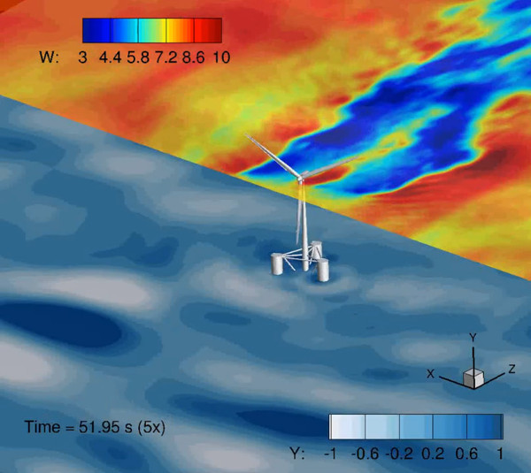
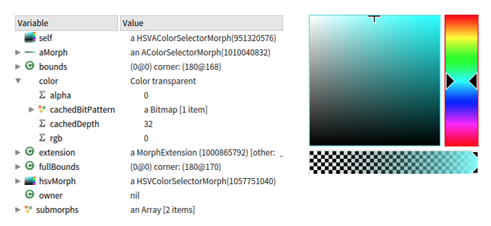
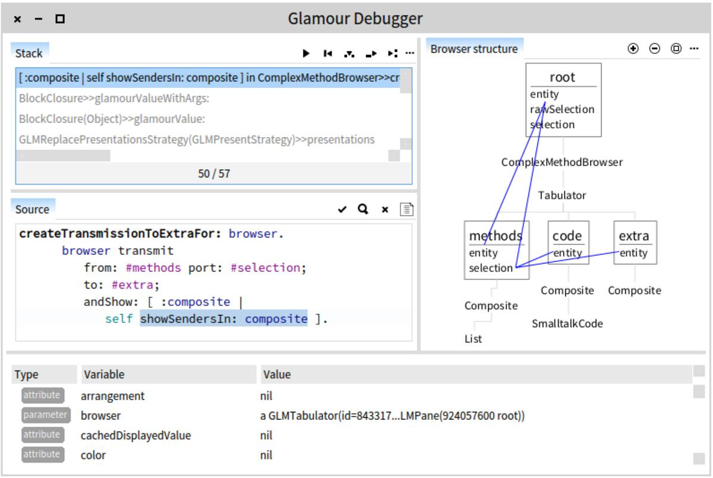
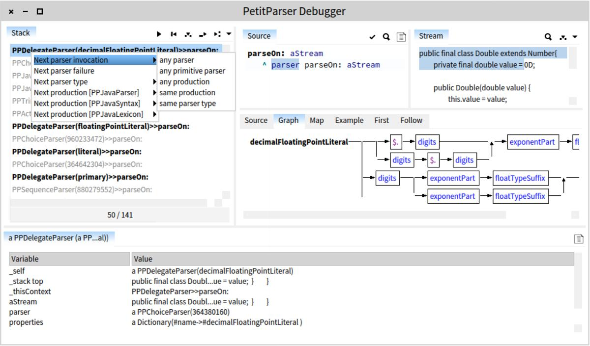
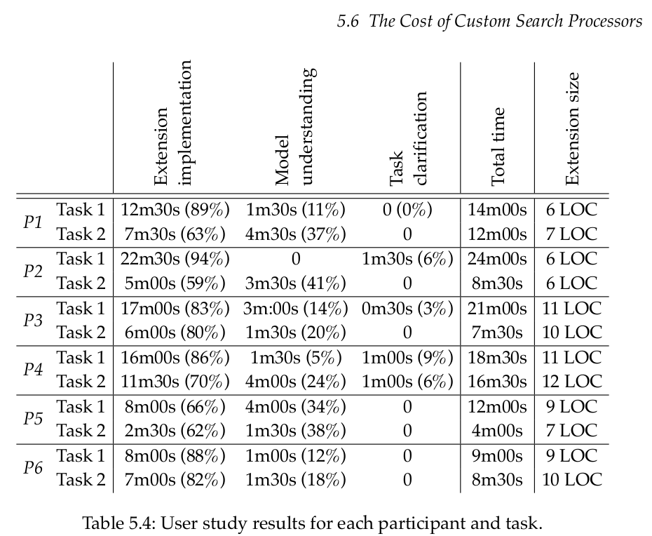
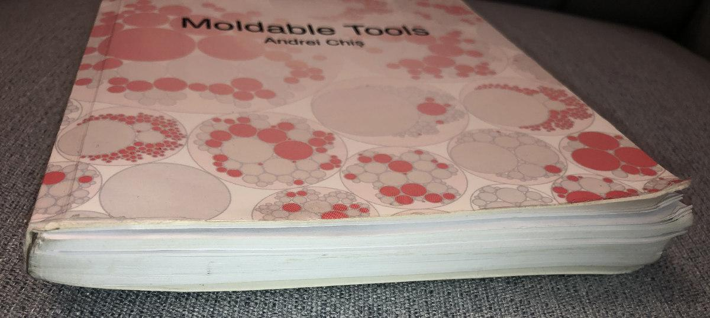

![](data:image/svg+xml,%3Csvg%20xmlns%3D%22http%3A//www.w3.org/2000/svg%22%20viewBox%3D%220%20-0.2%2011%2012.4%22%3E%0A%20%20%3Cdefs%3E%0A%20%20%20%20%3CclipPath%20id%3D%22cloth-tag%22%3E%3Cpolygon%20points%3D%220%2C0.40%200.5%2C0.04%201%2C0.70%201.5%2C0.15%202%2C0.52%202.5%2C0.17%203%2C0.54%203.5%2C0.55%204%2C0.18%204.5%2C0.49%205%2C0.20%205.5%2C0.02%206%2C0.38%206.5%2C0.77%207%2C0.16%207.5%2C0.66%208%2C0.07%208.5%2C0.06%209%2C0.54%209.5%2C0.02%2010%2C0.80%2010.5%2C0.62%2011%2C0.64%2011%2C11.57%2010.5%2C11.86%2010%2C11.33%209.5%2C11.31%209%2C11.41%208.5%2C11.59%208%2C11.51%207.5%2C11.23%207%2C11.46%206.5%2C11.29%206%2C11.79%205.5%2C11.50%205%2C11.77%204.5%2C11.26%204%2C11.42%203.5%2C11.69%203%2C11.88%202.5%2C11.82%202%2C11.80%201.5%2C11.41%201%2C11.50%200.5%2C11.67%200%2C11.68%22/%3E%3C/clipPath%3E%0A%20%20%20%20%3ClinearGradient%20id%3D%22dye-tag%22%20x1%3D%220%22%20y1%3D%220%22%20x2%3D%220.3%22%20y2%3D%221%22%3E%0A%20%20%20%20%20%20%3Cstop%20offset%3D%220%22%20stop-color%3D%22%23a64a26%22/%3E%0A%20%20%20%20%20%20%3Cstop%20offset%3D%221%22%20stop-color%3D%22%238d391b%22/%3E%0A%20%20%20%20%3C/linearGradient%3E%0A%20%20%3C/defs%3E%0A%20%20%3Cg%20clip-path%3D%22url%28%23cloth-tag%29%22%3E%0A%20%20%20%20%3Crect%20width%3D%2211%22%20height%3D%2212%22%20fill%3D%22url%28%23dye-tag%29%22/%3E%0A%20%20%20%20%3Cg%20fill%3D%22%23fffaf2%22%3E%3Crect%20x%3D%220.45%22%20y%3D%220%22%20width%3D%220.35%22%20height%3D%2212%22/%3E%3Crect%20x%3D%221.1%22%20y%3D%220%22%20width%3D%220.2%22%20height%3D%2212%22/%3E%3Crect%20x%3D%2210.2%22%20y%3D%220%22%20width%3D%220.35%22%20height%3D%2212%22/%3E%3Crect%20x%3D%229.7%22%20y%3D%220%22%20width%3D%220.2%22%20height%3D%2212%22/%3E%3C/g%3E%0A%20%20%20%20%3Cg%20fill%3D%22%23fff1e0%22%20shape-rendering%3D%22crispEdges%22%3E%3Crect%20x%3D%222%22%20y%3D%222.5%22%20width%3D%221%22%20height%3D%221%22/%3E%3Crect%20x%3D%223%22%20y%3D%222.5%22%20width%3D%221%22%20height%3D%221%22/%3E%3Crect%20x%3D%224%22%20y%3D%222.5%22%20width%3D%221%22%20height%3D%221%22/%3E%3Crect%20x%3D%222%22%20y%3D%223.5%22%20width%3D%221%22%20height%3D%221%22/%3E%3Crect%20x%3D%223%22%20y%3D%223.5%22%20width%3D%221%22%20height%3D%221%22/%3E%3Crect%20x%3D%222%22%20y%3D%224.5%22%20width%3D%221%22%20height%3D%221%22/%3E%3Crect%20x%3D%226%22%20y%3D%222.5%22%20width%3D%221%22%20height%3D%221%22/%3E%3Crect%20x%3D%227%22%20y%3D%222.5%22%20width%3D%221%22%20height%3D%221%22/%3E%3Crect%20x%3D%228%22%20y%3D%222.5%22%20width%3D%221%22%20height%3D%221%22/%3E%3Crect%20x%3D%227%22%20y%3D%223.5%22%20width%3D%221%22%20height%3D%221%22/%3E%3Crect%20x%3D%228%22%20y%3D%223.5%22%20width%3D%221%22%20height%3D%221%22/%3E%3Crect%20x%3D%228%22%20y%3D%224.5%22%20width%3D%221%22%20height%3D%221%22/%3E%3Crect%20x%3D%222%22%20y%3D%226.5%22%20width%3D%221%22%20height%3D%221%22/%3E%3Crect%20x%3D%224%22%20y%3D%226.5%22%20width%3D%221%22%20height%3D%221%22/%3E%3Crect%20x%3D%222%22%20y%3D%227.5%22%20width%3D%221%22%20height%3D%221%22/%3E%3Crect%20x%3D%224%22%20y%3D%227.5%22%20width%3D%221%22%20height%3D%221%22/%3E%3Crect%20x%3D%222%22%20y%3D%228.5%22%20width%3D%221%22%20height%3D%221%22/%3E%3Crect%20x%3D%224%22%20y%3D%228.5%22%20width%3D%221%22%20height%3D%221%22/%3E%3Crect%20x%3D%226%22%20y%3D%226.5%22%20width%3D%221%22%20height%3D%221%22/%3E%3Crect%20x%3D%228%22%20y%3D%226.5%22%20width%3D%221%22%20height%3D%221%22/%3E%3Crect%20x%3D%226%22%20y%3D%227.5%22%20width%3D%221%22%20height%3D%221%22/%3E%3Crect%20x%3D%228%22%20y%3D%227.5%22%20width%3D%221%22%20height%3D%221%22/%3E%3Crect%20x%3D%226%22%20y%3D%228.5%22%20width%3D%221%22%20height%3D%221%22/%3E%3Crect%20x%3D%228%22%20y%3D%228.5%22%20width%3D%221%22%20height%3D%221%22/%3E%3C/g%3E%0A%20%20%3C/g%3E%0A%3C/svg%3E) Unbounded battle in multiple dimensions
Unbounded battle in multiple dimensions![](data:image/svg+xml,%3Csvg%20xmlns%3D%22http%3A//www.w3.org/2000/svg%22%20viewBox%3D%220%20-0.2%2011%2012.4%22%3E%0A%20%20%3Cdefs%3E%0A%20%20%20%20%3CclipPath%20id%3D%22cloth-tag%22%3E%3Cpolygon%20points%3D%220%2C0.48%200.5%2C0.35%201%2C0.38%201.5%2C0.66%202%2C0.56%202.5%2C0.18%203%2C0.37%203.5%2C0.07%204%2C0.55%204.5%2C0.78%205%2C0.79%205.5%2C0.73%206%2C0.03%206.5%2C0.22%207%2C0.11%207.5%2C0.54%208%2C0.52%208.5%2C0.19%209%2C0.05%209.5%2C0.43%2010%2C0.75%2010.5%2C0.34%2011%2C0.44%2011%2C11.43%2010.5%2C11.91%2010%2C11.92%209.5%2C11.61%209%2C11.29%208.5%2C11.61%208%2C11.88%207.5%2C11.29%207%2C11.80%206.5%2C11.32%206%2C11.93%205.5%2C11.73%205%2C11.59%204.5%2C11.50%204%2C11.72%203.5%2C11.82%203%2C11.65%202.5%2C11.86%202%2C11.29%201.5%2C11.74%201%2C11.96%200.5%2C11.56%200%2C11.54%22/%3E%3C/clipPath%3E%0A%20%20%20%20%3ClinearGradient%20id%3D%22dye-tag%22%20x1%3D%220%22%20y1%3D%220%22%20x2%3D%220.3%22%20y2%3D%221%22%3E%0A%20%20%20%20%20%20%3Cstop%20offset%3D%220%22%20stop-color%3D%22%23a64a26%22/%3E%0A%20%20%20%20%20%20%3Cstop%20offset%3D%221%22%20stop-color%3D%22%238d391b%22/%3E%0A%20%20%20%20%3C/linearGradient%3E%0A%20%20%3C/defs%3E%0A%20%20%3Cg%20clip-path%3D%22url%28%23cloth-tag%29%22%3E%0A%20%20%20%20%3Crect%20width%3D%2211%22%20height%3D%2212%22%20fill%3D%22url%28%23dye-tag%29%22/%3E%0A%20%20%20%20%3Cg%20fill%3D%22%23fffaf2%22%3E%3Crect%20x%3D%220.45%22%20y%3D%220%22%20width%3D%220.35%22%20height%3D%2212%22/%3E%3Crect%20x%3D%221.1%22%20y%3D%220%22%20width%3D%220.2%22%20height%3D%2212%22/%3E%3Crect%20x%3D%2210.2%22%20y%3D%220%22%20width%3D%220.35%22%20height%3D%2212%22/%3E%3Crect%20x%3D%229.7%22%20y%3D%220%22%20width%3D%220.2%22%20height%3D%2212%22/%3E%3C/g%3E%0A%20%20%20%20%3Cg%20fill%3D%22%23fff1e0%22%20shape-rendering%3D%22crispEdges%22%3E%3Crect%20x%3D%222%22%20y%3D%222.5%22%20width%3D%221%22%20height%3D%221%22/%3E%3Crect%20x%3D%223%22%20y%3D%222.5%22%20width%3D%221%22%20height%3D%221%22/%3E%3Crect%20x%3D%224%22%20y%3D%222.5%22%20width%3D%221%22%20height%3D%221%22/%3E%3Crect%20x%3D%222%22%20y%3D%223.5%22%20width%3D%221%22%20height%3D%221%22/%3E%3Crect%20x%3D%224%22%20y%3D%223.5%22%20width%3D%221%22%20height%3D%221%22/%3E%3Crect%20x%3D%224%22%20y%3D%224.5%22%20width%3D%221%22%20height%3D%221%22/%3E%3Crect%20x%3D%226%22%20y%3D%222.5%22%20width%3D%221%22%20height%3D%221%22/%3E%3Crect%20x%3D%227%22%20y%3D%222.5%22%20width%3D%221%22%20height%3D%221%22/%3E%3Crect%20x%3D%228%22%20y%3D%222.5%22%20width%3D%221%22%20height%3D%221%22/%3E%3Crect%20x%3D%226%22%20y%3D%223.5%22%20width%3D%221%22%20height%3D%221%22/%3E%3Crect%20x%3D%228%22%20y%3D%223.5%22%20width%3D%221%22%20height%3D%221%22/%3E%3Crect%20x%3D%226%22%20y%3D%224.5%22%20width%3D%221%22%20height%3D%221%22/%3E%3Crect%20x%3D%223%22%20y%3D%226.5%22%20width%3D%221%22%20height%3D%221%22/%3E%3Crect%20x%3D%224%22%20y%3D%226.5%22%20width%3D%221%22%20height%3D%221%22/%3E%3Crect%20x%3D%224%22%20y%3D%227.5%22%20width%3D%221%22%20height%3D%221%22/%3E%3Crect%20x%3D%222%22%20y%3D%228.5%22%20width%3D%221%22%20height%3D%221%22/%3E%3Crect%20x%3D%223%22%20y%3D%228.5%22%20width%3D%221%22%20height%3D%221%22/%3E%3Crect%20x%3D%224%22%20y%3D%228.5%22%20width%3D%221%22%20height%3D%221%22/%3E%3Crect%20x%3D%226%22%20y%3D%226.5%22%20width%3D%221%22%20height%3D%221%22/%3E%3Crect%20x%3D%227%22%20y%3D%226.5%22%20width%3D%221%22%20height%3D%221%22/%3E%3Crect%20x%3D%226%22%20y%3D%227.5%22%20width%3D%221%22%20height%3D%221%22/%3E%3Crect%20x%3D%226%22%20y%3D%228.5%22%20width%3D%221%22%20height%3D%221%22/%3E%3Crect%20x%3D%227%22%20y%3D%228.5%22%20width%3D%221%22%20height%3D%221%22/%3E%3Crect%20x%3D%228%22%20y%3D%228.5%22%20width%3D%221%22%20height%3D%221%22/%3E%3C/g%3E%0A%20%20%3C/g%3E%0A%3C/svg%3E) Lessons learned from games
Lessons learned from games![](data:image/svg+xml,%3Csvg%20xmlns%3D%22http%3A//www.w3.org/2000/svg%22%20viewBox%3D%220%20-0.2%2011%2012.4%22%3E%0A%20%20%3Cdefs%3E%0A%20%20%20%20%3CclipPath%20id%3D%22cloth-tag%22%3E%3Cpolygon%20points%3D%220%2C0.27%200.5%2C0.42%201%2C0.16%201.5%2C0.15%202%2C0.51%202.5%2C0.55%203%2C0.54%203.5%2C0.29%204%2C0.65%204.5%2C0.66%205%2C0.68%205.5%2C0.33%206%2C0.26%206.5%2C0.33%207%2C0.30%207.5%2C0.17%208%2C0.30%208.5%2C0.78%209%2C0.45%209.5%2C0.41%2010%2C0.42%2010.5%2C0.76%2011%2C0.18%2011%2C11.82%2010.5%2C11.62%2010%2C11.83%209.5%2C11.66%209%2C11.86%208.5%2C11.69%208%2C11.70%207.5%2C11.49%207%2C11.20%206.5%2C11.77%206%2C11.82%205.5%2C11.21%205%2C11.97%204.5%2C11.66%204%2C11.54%203.5%2C11.51%203%2C11.35%202.5%2C11.86%202%2C11.63%201.5%2C11.35%201%2C11.96%200.5%2C11.88%200%2C11.94%22/%3E%3C/clipPath%3E%0A%20%20%20%20%3ClinearGradient%20id%3D%22dye-tag%22%20x1%3D%220%22%20y1%3D%220%22%20x2%3D%220.3%22%20y2%3D%221%22%3E%0A%20%20%20%20%20%20%3Cstop%20offset%3D%220%22%20stop-color%3D%22%23a64a26%22/%3E%0A%20%20%20%20%20%20%3Cstop%20offset%3D%221%22%20stop-color%3D%22%238d391b%22/%3E%0A%20%20%20%20%3C/linearGradient%3E%0A%20%20%3C/defs%3E%0A%20%20%3Cg%20clip-path%3D%22url%28%23cloth-tag%29%22%3E%0A%20%20%20%20%3Crect%20width%3D%2211%22%20height%3D%2212%22%20fill%3D%22url%28%23dye-tag%29%22/%3E%0A%20%20%20%20%3Cg%20fill%3D%22%23fffaf2%22%3E%3Crect%20x%3D%220.45%22%20y%3D%220%22%20width%3D%220.35%22%20height%3D%2212%22/%3E%3Crect%20x%3D%221.1%22%20y%3D%220%22%20width%3D%220.2%22%20height%3D%2212%22/%3E%3Crect%20x%3D%2210.2%22%20y%3D%220%22%20width%3D%220.35%22%20height%3D%2212%22/%3E%3Crect%20x%3D%229.7%22%20y%3D%220%22%20width%3D%220.2%22%20height%3D%2212%22/%3E%3C/g%3E%0A%20%20%20%20%3Cg%20fill%3D%22%23fff1e0%22%20shape-rendering%3D%22crispEdges%22%3E%3Crect%20x%3D%222%22%20y%3D%222.5%22%20width%3D%221%22%20height%3D%221%22/%3E%3Crect%20x%3D%223%22%20y%3D%222.5%22%20width%3D%221%22%20height%3D%221%22/%3E%3Crect%20x%3D%224%22%20y%3D%222.5%22%20width%3D%221%22%20height%3D%221%22/%3E%3Crect%20x%3D%224%22%20y%3D%223.5%22%20width%3D%221%22%20height%3D%221%22/%3E%3Crect%20x%3D%224%22%20y%3D%224.5%22%20width%3D%221%22%20height%3D%221%22/%3E%3Crect%20x%3D%228%22%20y%3D%222.5%22%20width%3D%221%22%20height%3D%221%22/%3E%3Crect%20x%3D%226%22%20y%3D%224.5%22%20width%3D%221%22%20height%3D%221%22/%3E%3Crect%20x%3D%227%22%20y%3D%224.5%22%20width%3D%221%22%20height%3D%221%22/%3E%3Crect%20x%3D%228%22%20y%3D%224.5%22%20width%3D%221%22%20height%3D%221%22/%3E%3Crect%20x%3D%224%22%20y%3D%226.5%22%20width%3D%221%22%20height%3D%221%22/%3E%3Crect%20x%3D%224%22%20y%3D%227.5%22%20width%3D%221%22%20height%3D%221%22/%3E%3Crect%20x%3D%222%22%20y%3D%228.5%22%20width%3D%221%22%20height%3D%221%22/%3E%3Crect%20x%3D%223%22%20y%3D%228.5%22%20width%3D%221%22%20height%3D%221%22/%3E%3Crect%20x%3D%224%22%20y%3D%228.5%22%20width%3D%221%22%20height%3D%221%22/%3E%3Crect%20x%3D%226%22%20y%3D%226.5%22%20width%3D%221%22%20height%3D%221%22/%3E%3Crect%20x%3D%227%22%20y%3D%226.5%22%20width%3D%221%22%20height%3D%221%22/%3E%3Crect%20x%3D%228%22%20y%3D%226.5%22%20width%3D%221%22%20height%3D%221%22/%3E%3Crect%20x%3D%228%22%20y%3D%228.5%22%20width%3D%221%22%20height%3D%221%22/%3E%3C/g%3E%0A%20%20%3C/g%3E%0A%3C/svg%3E) Prusa MK4 upgrade
Prusa MK4 upgrade![](data:image/svg+xml,%3Csvg%20xmlns%3D%22http%3A//www.w3.org/2000/svg%22%20viewBox%3D%220%20-0.2%2011%2012.4%22%3E%0A%20%20%3Cdefs%3E%0A%20%20%20%20%3CclipPath%20id%3D%22cloth-tag%22%3E%3Cpolygon%20points%3D%220%2C0.03%200.5%2C0.66%201%2C0.59%201.5%2C0.10%202%2C0.59%202.5%2C0.38%203%2C0.05%203.5%2C0.79%204%2C0.77%204.5%2C0.58%205%2C0.02%205.5%2C0.33%206%2C0.13%206.5%2C0.36%207%2C0.77%207.5%2C0.42%208%2C0.02%208.5%2C0.79%209%2C0.29%209.5%2C0.11%2010%2C0.49%2010.5%2C0.72%2011%2C0.58%2011%2C11.91%2010.5%2C11.62%2010%2C12.00%209.5%2C11.25%209%2C11.58%208.5%2C11.99%208%2C11.92%207.5%2C11.31%207%2C11.30%206.5%2C11.78%206%2C11.36%205.5%2C11.31%205%2C11.27%204.5%2C11.93%204%2C11.81%203.5%2C11.99%203%2C11.54%202.5%2C11.22%202%2C11.68%201.5%2C11.75%201%2C11.78%200.5%2C11.44%200%2C11.51%22/%3E%3C/clipPath%3E%0A%20%20%20%20%3ClinearGradient%20id%3D%22dye-tag%22%20x1%3D%220%22%20y1%3D%220%22%20x2%3D%220.3%22%20y2%3D%221%22%3E%0A%20%20%20%20%20%20%3Cstop%20offset%3D%220%22%20stop-color%3D%22%23a64a26%22/%3E%0A%20%20%20%20%20%20%3Cstop%20offset%3D%221%22%20stop-color%3D%22%238d391b%22/%3E%0A%20%20%20%20%3C/linearGradient%3E%0A%20%20%3C/defs%3E%0A%20%20%3Cg%20clip-path%3D%22url%28%23cloth-tag%29%22%3E%0A%20%20%20%20%3Crect%20width%3D%2211%22%20height%3D%2212%22%20fill%3D%22url%28%23dye-tag%29%22/%3E%0A%20%20%20%20%3Cg%20fill%3D%22%23fffaf2%22%3E%3Crect%20x%3D%220.45%22%20y%3D%220%22%20width%3D%220.35%22%20height%3D%2212%22/%3E%3Crect%20x%3D%221.1%22%20y%3D%220%22%20width%3D%220.2%22%20height%3D%2212%22/%3E%3Crect%20x%3D%2210.2%22%20y%3D%220%22%20width%3D%220.35%22%20height%3D%2212%22/%3E%3Crect%20x%3D%229.7%22%20y%3D%220%22%20width%3D%220.2%22%20height%3D%2212%22/%3E%3C/g%3E%0A%20%20%20%20%3Cg%20fill%3D%22%23fff1e0%22%20shape-rendering%3D%22crispEdges%22%3E%3Crect%20x%3D%222%22%20y%3D%222.5%22%20width%3D%221%22%20height%3D%221%22/%3E%3Crect%20x%3D%223%22%20y%3D%222.5%22%20width%3D%221%22%20height%3D%221%22/%3E%3Crect%20x%3D%224%22%20y%3D%222.5%22%20width%3D%221%22%20height%3D%221%22/%3E%3Crect%20x%3D%224%22%20y%3D%223.5%22%20width%3D%221%22%20height%3D%221%22/%3E%3Crect%20x%3D%222%22%20y%3D%224.5%22%20width%3D%221%22%20height%3D%221%22/%3E%3Crect%20x%3D%224%22%20y%3D%224.5%22%20width%3D%221%22%20height%3D%221%22/%3E%3Crect%20x%3D%228%22%20y%3D%222.5%22%20width%3D%221%22%20height%3D%221%22/%3E%3Crect%20x%3D%226%22%20y%3D%223.5%22%20width%3D%221%22%20height%3D%221%22/%3E%3Crect%20x%3D%228%22%20y%3D%223.5%22%20width%3D%221%22%20height%3D%221%22/%3E%3Crect%20x%3D%226%22%20y%3D%224.5%22%20width%3D%221%22%20height%3D%221%22/%3E%3Crect%20x%3D%227%22%20y%3D%224.5%22%20width%3D%221%22%20height%3D%221%22/%3E%3Crect%20x%3D%228%22%20y%3D%224.5%22%20width%3D%221%22%20height%3D%221%22/%3E%3Crect%20x%3D%222%22%20y%3D%226.5%22%20width%3D%221%22%20height%3D%221%22/%3E%3Crect%20x%3D%224%22%20y%3D%226.5%22%20width%3D%221%22%20height%3D%221%22/%3E%3Crect%20x%3D%224%22%20y%3D%227.5%22%20width%3D%221%22%20height%3D%221%22/%3E%3Crect%20x%3D%222%22%20y%3D%228.5%22%20width%3D%221%22%20height%3D%221%22/%3E%3Crect%20x%3D%223%22%20y%3D%228.5%22%20width%3D%221%22%20height%3D%221%22/%3E%3Crect%20x%3D%224%22%20y%3D%228.5%22%20width%3D%221%22%20height%3D%221%22/%3E%3Crect%20x%3D%226%22%20y%3D%226.5%22%20width%3D%221%22%20height%3D%221%22/%3E%3Crect%20x%3D%227%22%20y%3D%226.5%22%20width%3D%221%22%20height%3D%221%22/%3E%3Crect%20x%3D%228%22%20y%3D%226.5%22%20width%3D%221%22%20height%3D%221%22/%3E%3Crect%20x%3D%226%22%20y%3D%227.5%22%20width%3D%221%22%20height%3D%221%22/%3E%3Crect%20x%3D%228%22%20y%3D%227.5%22%20width%3D%221%22%20height%3D%221%22/%3E%3Crect%20x%3D%228%22%20y%3D%228.5%22%20width%3D%221%22%20height%3D%221%22/%3E%3C/g%3E%0A%20%20%3C/g%3E%0A%3C/svg%3E) HobbyCell
HobbyCell![](data:image/svg+xml,%3Csvg%20xmlns%3D%22http%3A//www.w3.org/2000/svg%22%20viewBox%3D%220%20-0.2%2011%2012.4%22%3E%0A%20%20%3Cdefs%3E%0A%20%20%20%20%3CclipPath%20id%3D%22cloth-tag%22%3E%3Cpolygon%20points%3D%220%2C0.11%200.5%2C0.62%201%2C0.07%201.5%2C0.16%202%2C0.30%202.5%2C0.42%203%2C0.56%203.5%2C0.74%204%2C0.01%204.5%2C0.52%205%2C0.33%205.5%2C0.54%206%2C0.68%206.5%2C0.52%207%2C0.70%207.5%2C0.47%208%2C0.19%208.5%2C0.72%209%2C0.59%209.5%2C0.70%2010%2C0.63%2010.5%2C0.11%2011%2C0.46%2011%2C11.28%2010.5%2C11.44%2010%2C11.40%209.5%2C11.39%209%2C11.34%208.5%2C11.25%208%2C11.99%207.5%2C11.29%207%2C11.23%206.5%2C11.48%206%2C11.78%205.5%2C11.37%205%2C11.48%204.5%2C11.93%204%2C11.97%203.5%2C11.74%203%2C11.84%202.5%2C11.22%202%2C11.54%201.5%2C11.89%201%2C11.38%200.5%2C11.73%200%2C11.24%22/%3E%3C/clipPath%3E%0A%20%20%20%20%3ClinearGradient%20id%3D%22dye-tag%22%20x1%3D%220%22%20y1%3D%220%22%20x2%3D%220.3%22%20y2%3D%221%22%3E%0A%20%20%20%20%20%20%3Cstop%20offset%3D%220%22%20stop-color%3D%22%23a64a26%22/%3E%0A%20%20%20%20%20%20%3Cstop%20offset%3D%221%22%20stop-color%3D%22%238d391b%22/%3E%0A%20%20%20%20%3C/linearGradient%3E%0A%20%20%3C/defs%3E%0A%20%20%3Cg%20clip-path%3D%22url%28%23cloth-tag%29%22%3E%0A%20%20%20%20%3Crect%20width%3D%2211%22%20height%3D%2212%22%20fill%3D%22url%28%23dye-tag%29%22/%3E%0A%20%20%20%20%3Cg%20fill%3D%22%23fffaf2%22%3E%3Crect%20x%3D%220.45%22%20y%3D%220%22%20width%3D%220.35%22%20height%3D%2212%22/%3E%3Crect%20x%3D%221.1%22%20y%3D%220%22%20width%3D%220.2%22%20height%3D%2212%22/%3E%3Crect%20x%3D%2210.2%22%20y%3D%220%22%20width%3D%220.35%22%20height%3D%2212%22/%3E%3Crect%20x%3D%229.7%22%20y%3D%220%22%20width%3D%220.2%22%20height%3D%2212%22/%3E%3C/g%3E%0A%20%20%20%20%3Cg%20fill%3D%22%23fff1e0%22%20shape-rendering%3D%22crispEdges%22%3E%3Crect%20x%3D%222%22%20y%3D%222.5%22%20width%3D%221%22%20height%3D%221%22/%3E%3Crect%20x%3D%224%22%20y%3D%222.5%22%20width%3D%221%22%20height%3D%221%22/%3E%3Crect%20x%3D%222%22%20y%3D%223.5%22%20width%3D%221%22%20height%3D%221%22/%3E%3Crect%20x%3D%222%22%20y%3D%224.5%22%20width%3D%221%22%20height%3D%221%22/%3E%3Crect%20x%3D%223%22%20y%3D%224.5%22%20width%3D%221%22%20height%3D%221%22/%3E%3Crect%20x%3D%224%22%20y%3D%224.5%22%20width%3D%221%22%20height%3D%221%22/%3E%3Crect%20x%3D%226%22%20y%3D%222.5%22%20width%3D%221%22%20height%3D%221%22/%3E%3Crect%20x%3D%227%22%20y%3D%222.5%22%20width%3D%221%22%20height%3D%221%22/%3E%3Crect%20x%3D%228%22%20y%3D%222.5%22%20width%3D%221%22%20height%3D%221%22/%3E%3Crect%20x%3D%228%22%20y%3D%223.5%22%20width%3D%221%22%20height%3D%221%22/%3E%3Crect%20x%3D%226%22%20y%3D%224.5%22%20width%3D%221%22%20height%3D%221%22/%3E%3Crect%20x%3D%227%22%20y%3D%224.5%22%20width%3D%221%22%20height%3D%221%22/%3E%3Crect%20x%3D%228%22%20y%3D%224.5%22%20width%3D%221%22%20height%3D%221%22/%3E%3Crect%20x%3D%222%22%20y%3D%226.5%22%20width%3D%221%22%20height%3D%221%22/%3E%3Crect%20x%3D%223%22%20y%3D%226.5%22%20width%3D%221%22%20height%3D%221%22/%3E%3Crect%20x%3D%224%22%20y%3D%226.5%22%20width%3D%221%22%20height%3D%221%22/%3E%3Crect%20x%3D%222%22%20y%3D%227.5%22%20width%3D%221%22%20height%3D%221%22/%3E%3Crect%20x%3D%222%22%20y%3D%228.5%22%20width%3D%221%22%20height%3D%221%22/%3E%3Crect%20x%3D%224%22%20y%3D%228.5%22%20width%3D%221%22%20height%3D%221%22/%3E%3Crect%20x%3D%226%22%20y%3D%226.5%22%20width%3D%221%22%20height%3D%221%22/%3E%3Crect%20x%3D%227%22%20y%3D%226.5%22%20width%3D%221%22%20height%3D%221%22/%3E%3Crect%20x%3D%228%22%20y%3D%226.5%22%20width%3D%221%22%20height%3D%221%22/%3E%3Crect%20x%3D%228%22%20y%3D%227.5%22%20width%3D%221%22%20height%3D%221%22/%3E%3Crect%20x%3D%226%22%20y%3D%228.5%22%20width%3D%221%22%20height%3D%221%22/%3E%3Crect%20x%3D%227%22%20y%3D%228.5%22%20width%3D%221%22%20height%3D%221%22/%3E%3Crect%20x%3D%228%22%20y%3D%228.5%22%20width%3D%221%22%20height%3D%221%22/%3E%3C/g%3E%0A%20%20%3C/g%3E%0A%3C/svg%3E) CaptchaCoin
CaptchaCoin![](data:image/svg+xml,%3Csvg%20xmlns%3D%22http%3A//www.w3.org/2000/svg%22%20viewBox%3D%220%20-0.2%2011%2012.4%22%3E%0A%20%20%3Cdefs%3E%0A%20%20%20%20%3CclipPath%20id%3D%22cloth-tag%22%3E%3Cpolygon%20points%3D%220%2C0.08%200.5%2C0.01%201%2C0.65%201.5%2C0.33%202%2C0.78%202.5%2C0.47%203%2C0.22%203.5%2C0.78%204%2C0.77%204.5%2C0.40%205%2C0.34%205.5%2C0.52%206%2C0.12%206.5%2C0.32%207%2C0.53%207.5%2C0.31%208%2C0.36%208.5%2C0.65%209%2C0.13%209.5%2C0.36%2010%2C0.66%2010.5%2C0.41%2011%2C0.08%2011%2C11.47%2010.5%2C11.50%2010%2C11.29%209.5%2C11.56%209%2C11.41%208.5%2C11.77%208%2C11.98%207.5%2C11.88%207%2C11.45%206.5%2C11.77%206%2C11.36%205.5%2C11.94%205%2C11.62%204.5%2C11.48%204%2C11.87%203.5%2C11.22%203%2C11.41%202.5%2C11.46%202%2C11.74%201.5%2C11.73%201%2C11.25%200.5%2C11.47%200%2C11.21%22/%3E%3C/clipPath%3E%0A%20%20%20%20%3ClinearGradient%20id%3D%22dye-tag%22%20x1%3D%220%22%20y1%3D%220%22%20x2%3D%220.3%22%20y2%3D%221%22%3E%0A%20%20%20%20%20%20%3Cstop%20offset%3D%220%22%20stop-color%3D%22%23a64a26%22/%3E%0A%20%20%20%20%20%20%3Cstop%20offset%3D%221%22%20stop-color%3D%22%238d391b%22/%3E%0A%20%20%20%20%3C/linearGradient%3E%0A%20%20%3C/defs%3E%0A%20%20%3Cg%20clip-path%3D%22url%28%23cloth-tag%29%22%3E%0A%20%20%20%20%3Crect%20width%3D%2211%22%20height%3D%2212%22%20fill%3D%22url%28%23dye-tag%29%22/%3E%0A%20%20%20%20%3Cg%20fill%3D%22%23fffaf2%22%3E%3Crect%20x%3D%220.45%22%20y%3D%220%22%20width%3D%220.35%22%20height%3D%2212%22/%3E%3Crect%20x%3D%221.1%22%20y%3D%220%22%20width%3D%220.2%22%20height%3D%2212%22/%3E%3Crect%20x%3D%2210.2%22%20y%3D%220%22%20width%3D%220.35%22%20height%3D%2212%22/%3E%3Crect%20x%3D%229.7%22%20y%3D%220%22%20width%3D%220.2%22%20height%3D%2212%22/%3E%3C/g%3E%0A%20%20%20%20%3Cg%20fill%3D%22%23fff1e0%22%20shape-rendering%3D%22crispEdges%22%3E%3Crect%20x%3D%222%22%20y%3D%222.5%22%20width%3D%221%22%20height%3D%221%22/%3E%3Crect%20x%3D%222%22%20y%3D%223.5%22%20width%3D%221%22%20height%3D%221%22/%3E%3Crect%20x%3D%224%22%20y%3D%223.5%22%20width%3D%221%22%20height%3D%221%22/%3E%3Crect%20x%3D%222%22%20y%3D%224.5%22%20width%3D%221%22%20height%3D%221%22/%3E%3Crect%20x%3D%228%22%20y%3D%222.5%22%20width%3D%221%22%20height%3D%221%22/%3E%3Crect%20x%3D%226%22%20y%3D%223.5%22%20width%3D%221%22%20height%3D%221%22/%3E%3Crect%20x%3D%228%22%20y%3D%223.5%22%20width%3D%221%22%20height%3D%221%22/%3E%3Crect%20x%3D%226%22%20y%3D%224.5%22%20width%3D%221%22%20height%3D%221%22/%3E%3Crect%20x%3D%227%22%20y%3D%224.5%22%20width%3D%221%22%20height%3D%221%22/%3E%3Crect%20x%3D%228%22%20y%3D%224.5%22%20width%3D%221%22%20height%3D%221%22/%3E%3Crect%20x%3D%222%22%20y%3D%226.5%22%20width%3D%221%22%20height%3D%221%22/%3E%3Crect%20x%3D%222%22%20y%3D%227.5%22%20width%3D%221%22%20height%3D%221%22/%3E%3Crect%20x%3D%224%22%20y%3D%227.5%22%20width%3D%221%22%20height%3D%221%22/%3E%3Crect%20x%3D%222%22%20y%3D%228.5%22%20width%3D%221%22%20height%3D%221%22/%3E%3Crect%20x%3D%226%22%20y%3D%226.5%22%20width%3D%221%22%20height%3D%221%22/%3E%3Crect%20x%3D%227%22%20y%3D%226.5%22%20width%3D%221%22%20height%3D%221%22/%3E%3Crect%20x%3D%228%22%20y%3D%226.5%22%20width%3D%221%22%20height%3D%221%22/%3E%3Crect%20x%3D%226%22%20y%3D%227.5%22%20width%3D%221%22%20height%3D%221%22/%3E%3Crect%20x%3D%228%22%20y%3D%227.5%22%20width%3D%221%22%20height%3D%221%22/%3E%3Crect%20x%3D%228%22%20y%3D%228.5%22%20width%3D%221%22%20height%3D%221%22/%3E%3C/g%3E%0A%20%20%3C/g%3E%0A%3C/svg%3E) SolarPi experiment 2: Finally something that works
SolarPi experiment 2: Finally something that works![](data:image/svg+xml,%3Csvg%20xmlns%3D%22http%3A//www.w3.org/2000/svg%22%20viewBox%3D%220%20-0.2%2011%2012.4%22%3E%0A%20%20%3Cdefs%3E%0A%20%20%20%20%3CclipPath%20id%3D%22cloth-tag%22%3E%3Cpolygon%20points%3D%220%2C0.11%200.5%2C0.78%201%2C0.26%201.5%2C0.35%202%2C0.16%202.5%2C0.47%203%2C0.19%203.5%2C0.33%204%2C0.60%204.5%2C0.31%205%2C0.01%205.5%2C0.22%206%2C0.78%206.5%2C0.14%207%2C0.05%207.5%2C0.27%208%2C0.28%208.5%2C0.49%209%2C0.52%209.5%2C0.23%2010%2C0.08%2010.5%2C0.10%2011%2C0.74%2011%2C11.87%2010.5%2C11.41%2010%2C11.84%209.5%2C11.69%209%2C11.90%208.5%2C11.43%208%2C11.70%207.5%2C11.21%207%2C11.85%206.5%2C11.88%206%2C11.63%205.5%2C11.51%205%2C11.81%204.5%2C11.31%204%2C11.67%203.5%2C11.60%203%2C11.24%202.5%2C11.29%202%2C11.90%201.5%2C11.27%201%2C11.99%200.5%2C11.37%200%2C11.93%22/%3E%3C/clipPath%3E%0A%20%20%20%20%3ClinearGradient%20id%3D%22dye-tag%22%20x1%3D%220%22%20y1%3D%220%22%20x2%3D%220.3%22%20y2%3D%221%22%3E%0A%20%20%20%20%20%20%3Cstop%20offset%3D%220%22%20stop-color%3D%22%23a64a26%22/%3E%0A%20%20%20%20%20%20%3Cstop%20offset%3D%221%22%20stop-color%3D%22%238d391b%22/%3E%0A%20%20%20%20%3C/linearGradient%3E%0A%20%20%3C/defs%3E%0A%20%20%3Cg%20clip-path%3D%22url%28%23cloth-tag%29%22%3E%0A%20%20%20%20%3Crect%20width%3D%2211%22%20height%3D%2212%22%20fill%3D%22url%28%23dye-tag%29%22/%3E%0A%20%20%20%20%3Cg%20fill%3D%22%23fffaf2%22%3E%3Crect%20x%3D%220.45%22%20y%3D%220%22%20width%3D%220.35%22%20height%3D%2212%22/%3E%3Crect%20x%3D%221.1%22%20y%3D%220%22%20width%3D%220.2%22%20height%3D%2212%22/%3E%3Crect%20x%3D%2210.2%22%20y%3D%220%22%20width%3D%220.35%22%20height%3D%2212%22/%3E%3Crect%20x%3D%229.7%22%20y%3D%220%22%20width%3D%220.2%22%20height%3D%2212%22/%3E%3C/g%3E%0A%20%20%20%20%3Cg%20fill%3D%22%23fff1e0%22%20shape-rendering%3D%22crispEdges%22%3E%3Crect%20x%3D%223%22%20y%3D%222.5%22%20width%3D%221%22%20height%3D%221%22/%3E%3Crect%20x%3D%224%22%20y%3D%222.5%22%20width%3D%221%22%20height%3D%221%22/%3E%3Crect%20x%3D%224%22%20y%3D%223.5%22%20width%3D%221%22%20height%3D%221%22/%3E%3Crect%20x%3D%222%22%20y%3D%224.5%22%20width%3D%221%22%20height%3D%221%22/%3E%3Crect%20x%3D%223%22%20y%3D%224.5%22%20width%3D%221%22%20height%3D%221%22/%3E%3Crect%20x%3D%224%22%20y%3D%224.5%22%20width%3D%221%22%20height%3D%221%22/%3E%3Crect%20x%3D%226%22%20y%3D%222.5%22%20width%3D%221%22%20height%3D%221%22/%3E%3Crect%20x%3D%227%22%20y%3D%222.5%22%20width%3D%221%22%20height%3D%221%22/%3E%3Crect%20x%3D%226%22%20y%3D%223.5%22%20width%3D%221%22%20height%3D%221%22/%3E%3Crect%20x%3D%226%22%20y%3D%224.5%22%20width%3D%221%22%20height%3D%221%22/%3E%3Crect%20x%3D%227%22%20y%3D%224.5%22%20width%3D%221%22%20height%3D%221%22/%3E%3Crect%20x%3D%228%22%20y%3D%224.5%22%20width%3D%221%22%20height%3D%221%22/%3E%3Crect%20x%3D%222%22%20y%3D%226.5%22%20width%3D%221%22%20height%3D%221%22/%3E%3Crect%20x%3D%223%22%20y%3D%226.5%22%20width%3D%221%22%20height%3D%221%22/%3E%3Crect%20x%3D%224%22%20y%3D%226.5%22%20width%3D%221%22%20height%3D%221%22/%3E%3Crect%20x%3D%223%22%20y%3D%228.5%22%20width%3D%221%22%20height%3D%221%22/%3E%3Crect%20x%3D%226%22%20y%3D%226.5%22%20width%3D%221%22%20height%3D%221%22/%3E%3Crect%20x%3D%227%22%20y%3D%226.5%22%20width%3D%221%22%20height%3D%221%22/%3E%3Crect%20x%3D%228%22%20y%3D%226.5%22%20width%3D%221%22%20height%3D%221%22/%3E%3Crect%20x%3D%227%22%20y%3D%228.5%22%20width%3D%221%22%20height%3D%221%22/%3E%3C/g%3E%0A%20%20%3C/g%3E%0A%3C/svg%3E) How to run your own LLM (GPT)
How to run your own LLM (GPT)![](data:image/svg+xml,%3Csvg%20xmlns%3D%22http%3A//www.w3.org/2000/svg%22%20viewBox%3D%220%20-0.2%2011%2012.4%22%3E%0A%20%20%3Cdefs%3E%0A%20%20%20%20%3CclipPath%20id%3D%22cloth-tag%22%3E%3Cpolygon%20points%3D%220%2C0.33%200.5%2C0.33%201%2C0.52%201.5%2C0.54%202%2C0.22%202.5%2C0.41%203%2C0.12%203.5%2C0.66%204%2C0.54%204.5%2C0.06%205%2C0.18%205.5%2C0.35%206%2C0.62%206.5%2C0.56%207%2C0.11%207.5%2C0.01%208%2C0.60%208.5%2C0.18%209%2C0.27%209.5%2C0.56%2010%2C0.49%2010.5%2C0.19%2011%2C0.17%2011%2C11.70%2010.5%2C11.63%2010%2C11.37%209.5%2C11.36%209%2C11.46%208.5%2C11.87%208%2C11.30%207.5%2C11.53%207%2C11.76%206.5%2C11.44%206%2C11.50%205.5%2C11.33%205%2C11.39%204.5%2C11.32%204%2C11.63%203.5%2C11.29%203%2C11.63%202.5%2C11.49%202%2C11.90%201.5%2C11.22%201%2C11.28%200.5%2C11.64%200%2C11.56%22/%3E%3C/clipPath%3E%0A%20%20%20%20%3ClinearGradient%20id%3D%22dye-tag%22%20x1%3D%220%22%20y1%3D%220%22%20x2%3D%220.3%22%20y2%3D%221%22%3E%0A%20%20%20%20%20%20%3Cstop%20offset%3D%220%22%20stop-color%3D%22%23a64a26%22/%3E%0A%20%20%20%20%20%20%3Cstop%20offset%3D%221%22%20stop-color%3D%22%238d391b%22/%3E%0A%20%20%20%20%3C/linearGradient%3E%0A%20%20%3C/defs%3E%0A%20%20%3Cg%20clip-path%3D%22url%28%23cloth-tag%29%22%3E%0A%20%20%20%20%3Crect%20width%3D%2211%22%20height%3D%2212%22%20fill%3D%22url%28%23dye-tag%29%22/%3E%0A%20%20%20%20%3Cg%20fill%3D%22%23fffaf2%22%3E%3Crect%20x%3D%220.45%22%20y%3D%220%22%20width%3D%220.35%22%20height%3D%2212%22/%3E%3Crect%20x%3D%221.1%22%20y%3D%220%22%20width%3D%220.2%22%20height%3D%2212%22/%3E%3Crect%20x%3D%2210.2%22%20y%3D%220%22%20width%3D%220.35%22%20height%3D%2212%22/%3E%3Crect%20x%3D%229.7%22%20y%3D%220%22%20width%3D%220.2%22%20height%3D%2212%22/%3E%3C/g%3E%0A%20%20%20%20%3Cg%20fill%3D%22%23fff1e0%22%20shape-rendering%3D%22crispEdges%22%3E%3Crect%20x%3D%222%22%20y%3D%222.5%22%20width%3D%221%22%20height%3D%221%22/%3E%3Crect%20x%3D%224%22%20y%3D%222.5%22%20width%3D%221%22%20height%3D%221%22/%3E%3Crect%20x%3D%222%22%20y%3D%223.5%22%20width%3D%221%22%20height%3D%221%22/%3E%3Crect%20x%3D%223%22%20y%3D%223.5%22%20width%3D%221%22%20height%3D%221%22/%3E%3Crect%20x%3D%222%22%20y%3D%224.5%22%20width%3D%221%22%20height%3D%221%22/%3E%3Crect%20x%3D%223%22%20y%3D%224.5%22%20width%3D%221%22%20height%3D%221%22/%3E%3Crect%20x%3D%224%22%20y%3D%224.5%22%20width%3D%221%22%20height%3D%221%22/%3E%3Crect%20x%3D%226%22%20y%3D%222.5%22%20width%3D%221%22%20height%3D%221%22/%3E%3Crect%20x%3D%228%22%20y%3D%223.5%22%20width%3D%221%22%20height%3D%221%22/%3E%3Crect%20x%3D%227%22%20y%3D%224.5%22%20width%3D%221%22%20height%3D%221%22/%3E%3Crect%20x%3D%228%22%20y%3D%224.5%22%20width%3D%221%22%20height%3D%221%22/%3E%3Crect%20x%3D%222%22%20y%3D%226.5%22%20width%3D%221%22%20height%3D%221%22/%3E%3Crect%20x%3D%223%22%20y%3D%226.5%22%20width%3D%221%22%20height%3D%221%22/%3E%3Crect%20x%3D%224%22%20y%3D%226.5%22%20width%3D%221%22%20height%3D%221%22/%3E%3Crect%20x%3D%222%22%20y%3D%227.5%22%20width%3D%221%22%20height%3D%221%22/%3E%3Crect%20x%3D%223%22%20y%3D%227.5%22%20width%3D%221%22%20height%3D%221%22/%3E%3Crect%20x%3D%222%22%20y%3D%228.5%22%20width%3D%221%22%20height%3D%221%22/%3E%3Crect%20x%3D%224%22%20y%3D%228.5%22%20width%3D%221%22%20height%3D%221%22/%3E%3Crect%20x%3D%227%22%20y%3D%226.5%22%20width%3D%221%22%20height%3D%221%22/%3E%3Crect%20x%3D%228%22%20y%3D%226.5%22%20width%3D%221%22%20height%3D%221%22/%3E%3Crect%20x%3D%228%22%20y%3D%227.5%22%20width%3D%221%22%20height%3D%221%22/%3E%3Crect%20x%3D%226%22%20y%3D%228.5%22%20width%3D%221%22%20height%3D%221%22/%3E%3C/g%3E%0A%20%20%3C/g%3E%0A%3C/svg%3E) SolarPi experiment 1: The PiJuice Fiasco
SolarPi experiment 1: The PiJuice Fiasco![](data:image/svg+xml,%3Csvg%20xmlns%3D%22http%3A//www.w3.org/2000/svg%22%20viewBox%3D%220%20-0.2%2011%2012.4%22%3E%0A%20%20%3Cdefs%3E%0A%20%20%20%20%3CclipPath%20id%3D%22cloth-tag%22%3E%3Cpolygon%20points%3D%220%2C0.57%200.5%2C0.75%201%2C0.22%201.5%2C0.52%202%2C0.31%202.5%2C0.55%203%2C0.28%203.5%2C0.71%204%2C0.28%204.5%2C0.68%205%2C0.70%205.5%2C0.05%206%2C0.77%206.5%2C0.47%207%2C0.77%207.5%2C0.15%208%2C0.64%208.5%2C0.48%209%2C0.34%209.5%2C0.76%2010%2C0.54%2010.5%2C0.40%2011%2C0.73%2011%2C11.28%2010.5%2C11.46%2010%2C11.90%209.5%2C11.93%209%2C11.82%208.5%2C11.33%208%2C11.70%207.5%2C11.50%207%2C11.41%206.5%2C11.84%206%2C11.37%205.5%2C11.94%205%2C11.81%204.5%2C11.38%204%2C11.31%203.5%2C11.53%203%2C11.99%202.5%2C11.77%202%2C11.82%201.5%2C11.37%201%2C11.56%200.5%2C11.49%200%2C11.56%22/%3E%3C/clipPath%3E%0A%20%20%20%20%3ClinearGradient%20id%3D%22dye-tag%22%20x1%3D%220%22%20y1%3D%220%22%20x2%3D%220.3%22%20y2%3D%221%22%3E%0A%20%20%20%20%20%20%3Cstop%20offset%3D%220%22%20stop-color%3D%22%23fbf3e2%22/%3E%0A%20%20%20%20%20%20%3Cstop%20offset%3D%221%22%20stop-color%3D%22%23eadbb8%22/%3E%0A%20%20%20%20%3C/linearGradient%3E%0A%20%20%3C/defs%3E%0A%20%20%3Cg%20clip-path%3D%22url%28%23cloth-tag%29%22%3E%0A%20%20%20%20%3Crect%20width%3D%2211%22%20height%3D%2212%22%20fill%3D%22url%28%23dye-tag%29%22/%3E%0A%20%20%20%20%3Cg%20fill%3D%22%23c89a3a%22%3E%3Crect%20x%3D%220.45%22%20y%3D%220%22%20width%3D%220.35%22%20height%3D%2212%22/%3E%3Crect%20x%3D%221.1%22%20y%3D%220%22%20width%3D%220.2%22%20height%3D%2212%22/%3E%3Crect%20x%3D%2210.2%22%20y%3D%220%22%20width%3D%220.35%22%20height%3D%2212%22/%3E%3Crect%20x%3D%229.7%22%20y%3D%220%22%20width%3D%220.2%22%20height%3D%2212%22/%3E%3C/g%3E%0A%20%20%20%20%3Cg%20fill%3D%22%23b8862b%22%20shape-rendering%3D%22crispEdges%22%3E%3Crect%20x%3D%222%22%20y%3D%222.5%22%20width%3D%221%22%20height%3D%221%22/%3E%3Crect%20x%3D%224%22%20y%3D%222.5%22%20width%3D%221%22%20height%3D%221%22/%3E%3Crect%20x%3D%223%22%20y%3D%223.5%22%20width%3D%221%22%20height%3D%221%22/%3E%3Crect%20x%3D%224%22%20y%3D%223.5%22%20width%3D%221%22%20height%3D%221%22/%3E%3Crect%20x%3D%222%22%20y%3D%224.5%22%20width%3D%221%22%20height%3D%221%22/%3E%3Crect%20x%3D%223%22%20y%3D%224.5%22%20width%3D%221%22%20height%3D%221%22/%3E%3Crect%20x%3D%224%22%20y%3D%224.5%22%20width%3D%221%22%20height%3D%221%22/%3E%3Crect%20x%3D%226%22%20y%3D%222.5%22%20width%3D%221%22%20height%3D%221%22/%3E%3Crect%20x%3D%228%22%20y%3D%222.5%22%20width%3D%221%22%20height%3D%221%22/%3E%3Crect%20x%3D%226%22%20y%3D%223.5%22%20width%3D%221%22%20height%3D%221%22/%3E%3Crect%20x%3D%228%22%20y%3D%223.5%22%20width%3D%221%22%20height%3D%221%22/%3E%3Crect%20x%3D%226%22%20y%3D%224.5%22%20width%3D%221%22%20height%3D%221%22/%3E%3Crect%20x%3D%227%22%20y%3D%224.5%22%20width%3D%221%22%20height%3D%221%22/%3E%3Crect%20x%3D%228%22%20y%3D%224.5%22%20width%3D%221%22%20height%3D%221%22/%3E%3Crect%20x%3D%222%22%20y%3D%226.5%22%20width%3D%221%22%20height%3D%221%22/%3E%3Crect%20x%3D%223%22%20y%3D%226.5%22%20width%3D%221%22%20height%3D%221%22/%3E%3Crect%20x%3D%224%22%20y%3D%226.5%22%20width%3D%221%22%20height%3D%221%22/%3E%3Crect%20x%3D%223%22%20y%3D%227.5%22%20width%3D%221%22%20height%3D%221%22/%3E%3Crect%20x%3D%224%22%20y%3D%227.5%22%20width%3D%221%22%20height%3D%221%22/%3E%3Crect%20x%3D%222%22%20y%3D%228.5%22%20width%3D%221%22%20height%3D%221%22/%3E%3Crect%20x%3D%224%22%20y%3D%228.5%22%20width%3D%221%22%20height%3D%221%22/%3E%3Crect%20x%3D%226%22%20y%3D%226.5%22%20width%3D%221%22%20height%3D%221%22/%3E%3Crect%20x%3D%227%22%20y%3D%226.5%22%20width%3D%221%22%20height%3D%221%22/%3E%3Crect%20x%3D%228%22%20y%3D%226.5%22%20width%3D%221%22%20height%3D%221%22/%3E%3Crect%20x%3D%226%22%20y%3D%227.5%22%20width%3D%221%22%20height%3D%221%22/%3E%3Crect%20x%3D%228%22%20y%3D%227.5%22%20width%3D%221%22%20height%3D%221%22/%3E%3Crect%20x%3D%226%22%20y%3D%228.5%22%20width%3D%221%22%20height%3D%221%22/%3E%3Crect%20x%3D%228%22%20y%3D%228.5%22%20width%3D%221%22%20height%3D%221%22/%3E%3C/g%3E%0A%20%20%3C/g%3E%0A%3C/svg%3E) Inspiration for objWiki
Inspiration for objWiki![](data:image/svg+xml,%3Csvg%20xmlns%3D%22http%3A//www.w3.org/2000/svg%22%20viewBox%3D%220%20-0.2%2011%2012.4%22%3E%0A%20%20%3Cdefs%3E%0A%20%20%20%20%3CclipPath%20id%3D%22cloth-tag%22%3E%3Cpolygon%20points%3D%220%2C0.12%200.5%2C0.16%201%2C0.68%201.5%2C0.74%202%2C0.60%202.5%2C0.37%203%2C0.74%203.5%2C0.61%204%2C0.04%204.5%2C0.58%205%2C0.66%205.5%2C0.03%206%2C0.61%206.5%2C0.06%207%2C0.57%207.5%2C0.67%208%2C0.72%208.5%2C0.05%209%2C0.43%209.5%2C0.02%2010%2C0.74%2010.5%2C0.34%2011%2C0.27%2011%2C11.86%2010.5%2C11.81%2010%2C11.48%209.5%2C11.76%209%2C11.51%208.5%2C11.38%208%2C11.28%207.5%2C11.47%207%2C11.42%206.5%2C11.29%206%2C11.52%205.5%2C11.43%205%2C11.99%204.5%2C11.56%204%2C11.50%203.5%2C11.69%203%2C11.31%202.5%2C11.42%202%2C11.93%201.5%2C11.84%201%2C11.27%200.5%2C11.81%200%2C11.74%22/%3E%3C/clipPath%3E%0A%20%20%20%20%3ClinearGradient%20id%3D%22dye-tag%22%20x1%3D%220%22%20y1%3D%220%22%20x2%3D%220.3%22%20y2%3D%221%22%3E%0A%20%20%20%20%20%20%3Cstop%20offset%3D%220%22%20stop-color%3D%22%23a64a26%22/%3E%0A%20%20%20%20%20%20%3Cstop%20offset%3D%221%22%20stop-color%3D%22%238d391b%22/%3E%0A%20%20%20%20%3C/linearGradient%3E%0A%20%20%3C/defs%3E%0A%20%20%3Cg%20clip-path%3D%22url%28%23cloth-tag%29%22%3E%0A%20%20%20%20%3Crect%20width%3D%2211%22%20height%3D%2212%22%20fill%3D%22url%28%23dye-tag%29%22/%3E%0A%20%20%20%20%3Cg%20fill%3D%22%23fffaf2%22%3E%3Crect%20x%3D%220.45%22%20y%3D%220%22%20width%3D%220.35%22%20height%3D%2212%22/%3E%3Crect%20x%3D%221.1%22%20y%3D%220%22%20width%3D%220.2%22%20height%3D%2212%22/%3E%3Crect%20x%3D%2210.2%22%20y%3D%220%22%20width%3D%220.35%22%20height%3D%2212%22/%3E%3Crect%20x%3D%229.7%22%20y%3D%220%22%20width%3D%220.2%22%20height%3D%2212%22/%3E%3C/g%3E%0A%20%20%20%20%3Cg%20fill%3D%22%23fff1e0%22%20shape-rendering%3D%22crispEdges%22%3E%3Crect%20x%3D%222%22%20y%3D%222.5%22%20width%3D%221%22%20height%3D%221%22/%3E%3Crect%20x%3D%223%22%20y%3D%222.5%22%20width%3D%221%22%20height%3D%221%22/%3E%3Crect%20x%3D%224%22%20y%3D%222.5%22%20width%3D%221%22%20height%3D%221%22/%3E%3Crect%20x%3D%224%22%20y%3D%224.5%22%20width%3D%221%22%20height%3D%221%22/%3E%3Crect%20x%3D%226%22%20y%3D%222.5%22%20width%3D%221%22%20height%3D%221%22/%3E%3Crect%20x%3D%227%22%20y%3D%222.5%22%20width%3D%221%22%20height%3D%221%22/%3E%3Crect%20x%3D%228%22%20y%3D%222.5%22%20width%3D%221%22%20height%3D%221%22/%3E%3Crect%20x%3D%227%22%20y%3D%223.5%22%20width%3D%221%22%20height%3D%221%22/%3E%3Crect%20x%3D%227%22%20y%3D%224.5%22%20width%3D%221%22%20height%3D%221%22/%3E%3Crect%20x%3D%224%22%20y%3D%226.5%22%20width%3D%221%22%20height%3D%221%22/%3E%3Crect%20x%3D%222%22%20y%3D%228.5%22%20width%3D%221%22%20height%3D%221%22/%3E%3Crect%20x%3D%223%22%20y%3D%228.5%22%20width%3D%221%22%20height%3D%221%22/%3E%3Crect%20x%3D%224%22%20y%3D%228.5%22%20width%3D%221%22%20height%3D%221%22/%3E%3Crect%20x%3D%227%22%20y%3D%226.5%22%20width%3D%221%22%20height%3D%221%22/%3E%3Crect%20x%3D%227%22%20y%3D%227.5%22%20width%3D%221%22%20height%3D%221%22/%3E%3Crect%20x%3D%226%22%20y%3D%228.5%22%20width%3D%221%22%20height%3D%221%22/%3E%3Crect%20x%3D%227%22%20y%3D%228.5%22%20width%3D%221%22%20height%3D%221%22/%3E%3Crect%20x%3D%228%22%20y%3D%228.5%22%20width%3D%221%22%20height%3D%221%22/%3E%3C/g%3E%0A%20%20%3C/g%3E%0A%3C/svg%3E) Control panels / alt interface
Control panels / alt interface![](data:image/svg+xml,%3Csvg%20xmlns%3D%22http%3A//www.w3.org/2000/svg%22%20viewBox%3D%220%20-0.2%2011%2012.4%22%3E%0A%20%20%3Cdefs%3E%0A%20%20%20%20%3CclipPath%20id%3D%22cloth-tag%22%3E%3Cpolygon%20points%3D%220%2C0.56%200.5%2C0.40%201%2C0.47%201.5%2C0.24%202%2C0.80%202.5%2C0.34%203%2C0.72%203.5%2C0.71%204%2C0.08%204.5%2C0.50%205%2C0.24%205.5%2C0.37%206%2C0.63%206.5%2C0.49%207%2C0.10%207.5%2C0.78%208%2C0.39%208.5%2C0.05%209%2C0.68%209.5%2C0.37%2010%2C0.57%2010.5%2C0.78%2011%2C0.02%2011%2C11.47%2010.5%2C11.29%2010%2C11.62%209.5%2C11.45%209%2C11.52%208.5%2C11.33%208%2C12.00%207.5%2C11.23%207%2C11.55%206.5%2C11.75%206%2C11.81%205.5%2C11.32%205%2C11.62%204.5%2C11.54%204%2C11.26%203.5%2C11.56%203%2C11.95%202.5%2C11.75%202%2C11.25%201.5%2C11.73%201%2C11.78%200.5%2C11.45%200%2C11.25%22/%3E%3C/clipPath%3E%0A%20%20%20%20%3ClinearGradient%20id%3D%22dye-tag%22%20x1%3D%220%22%20y1%3D%220%22%20x2%3D%220.3%22%20y2%3D%221%22%3E%0A%20%20%20%20%20%20%3Cstop%20offset%3D%220%22%20stop-color%3D%22%23a64a26%22/%3E%0A%20%20%20%20%20%20%3Cstop%20offset%3D%221%22%20stop-color%3D%22%238d391b%22/%3E%0A%20%20%20%20%3C/linearGradient%3E%0A%20%20%3C/defs%3E%0A%20%20%3Cg%20clip-path%3D%22url%28%23cloth-tag%29%22%3E%0A%20%20%20%20%3Crect%20width%3D%2211%22%20height%3D%2212%22%20fill%3D%22url%28%23dye-tag%29%22/%3E%0A%20%20%20%20%3Cg%20fill%3D%22%23fffaf2%22%3E%3Crect%20x%3D%220.45%22%20y%3D%220%22%20width%3D%220.35%22%20height%3D%2212%22/%3E%3Crect%20x%3D%221.1%22%20y%3D%220%22%20width%3D%220.2%22%20height%3D%2212%22/%3E%3Crect%20x%3D%2210.2%22%20y%3D%220%22%20width%3D%220.35%22%20height%3D%2212%22/%3E%3Crect%20x%3D%229.7%22%20y%3D%220%22%20width%3D%220.2%22%20height%3D%2212%22/%3E%3C/g%3E%0A%20%20%20%20%3Cg%20fill%3D%22%23fff1e0%22%20shape-rendering%3D%22crispEdges%22%3E%3Crect%20x%3D%222%22%20y%3D%222.5%22%20width%3D%221%22%20height%3D%221%22/%3E%3Crect%20x%3D%224%22%20y%3D%222.5%22%20width%3D%221%22%20height%3D%221%22/%3E%3Crect%20x%3D%225%22%20y%3D%222.5%22%20width%3D%221%22%20height%3D%221%22/%3E%3Crect%20x%3D%226%22%20y%3D%222.5%22%20width%3D%221%22%20height%3D%221%22/%3E%3Crect%20x%3D%227%22%20y%3D%222.5%22%20width%3D%221%22%20height%3D%221%22/%3E%3Crect%20x%3D%228%22%20y%3D%222.5%22%20width%3D%221%22%20height%3D%221%22/%3E%3Crect%20x%3D%222%22%20y%3D%224.5%22%20width%3D%221%22%20height%3D%221%22/%3E%3Crect%20x%3D%224%22%20y%3D%224.5%22%20width%3D%221%22%20height%3D%221%22/%3E%3Crect%20x%3D%225%22%20y%3D%224.5%22%20width%3D%221%22%20height%3D%221%22/%3E%3Crect%20x%3D%226%22%20y%3D%224.5%22%20width%3D%221%22%20height%3D%221%22/%3E%3Crect%20x%3D%227%22%20y%3D%224.5%22%20width%3D%221%22%20height%3D%221%22/%3E%3Crect%20x%3D%228%22%20y%3D%224.5%22%20width%3D%221%22%20height%3D%221%22/%3E%3Crect%20x%3D%222%22%20y%3D%226.5%22%20width%3D%221%22%20height%3D%221%22/%3E%3Crect%20x%3D%224%22%20y%3D%226.5%22%20width%3D%221%22%20height%3D%221%22/%3E%3Crect%20x%3D%225%22%20y%3D%226.5%22%20width%3D%221%22%20height%3D%221%22/%3E%3Crect%20x%3D%226%22%20y%3D%226.5%22%20width%3D%221%22%20height%3D%221%22/%3E%3Crect%20x%3D%227%22%20y%3D%226.5%22%20width%3D%221%22%20height%3D%221%22/%3E%3Crect%20x%3D%222%22%20y%3D%228.5%22%20width%3D%221%22%20height%3D%221%22/%3E%3Crect%20x%3D%224%22%20y%3D%228.5%22%20width%3D%221%22%20height%3D%221%22/%3E%3Crect%20x%3D%225%22%20y%3D%228.5%22%20width%3D%221%22%20height%3D%221%22/%3E%3Crect%20x%3D%226%22%20y%3D%228.5%22%20width%3D%221%22%20height%3D%221%22/%3E%3C/g%3E%0A%20%20%3C/g%3E%0A%3C/svg%3E) more
more![](data:image/svg+xml,%3Csvg%20xmlns%3D%22http%3A//www.w3.org/2000/svg%22%20viewBox%3D%220%20-0.2%2011%2012.4%22%3E%0A%20%20%3Cdefs%3E%0A%20%20%20%20%3CclipPath%20id%3D%22cloth-tag%22%3E%3Cpolygon%20points%3D%220%2C0.49%200.5%2C0.75%201%2C0.63%201.5%2C0.27%202%2C0.70%202.5%2C0.63%203%2C0.25%203.5%2C0.09%204%2C0.05%204.5%2C0.12%205%2C0.73%205.5%2C0.03%206%2C0.67%206.5%2C0.49%207%2C0.29%207.5%2C0.79%208%2C0.78%208.5%2C0.42%209%2C0.57%209.5%2C0.37%2010%2C0.79%2010.5%2C0.32%2011%2C0.73%2011%2C11.63%2010.5%2C11.30%2010%2C11.60%209.5%2C11.30%209%2C11.79%208.5%2C11.93%208%2C11.33%207.5%2C11.49%207%2C11.77%206.5%2C11.59%206%2C11.23%205.5%2C11.29%205%2C11.66%204.5%2C11.97%204%2C11.30%203.5%2C11.86%203%2C11.46%202.5%2C11.52%202%2C11.91%201.5%2C11.56%201%2C11.89%200.5%2C11.99%200%2C11.39%22/%3E%3C/clipPath%3E%0A%20%20%20%20%3ClinearGradient%20id%3D%22dye-tag%22%20x1%3D%220%22%20y1%3D%220%22%20x2%3D%220.3%22%20y2%3D%221%22%3E%0A%20%20%20%20%20%20%3Cstop%20offset%3D%220%22%20stop-color%3D%22%23a64a26%22/%3E%0A%20%20%20%20%20%20%3Cstop%20offset%3D%221%22%20stop-color%3D%22%238d391b%22/%3E%0A%20%20%20%20%3C/linearGradient%3E%0A%20%20%3C/defs%3E%0A%20%20%3Cg%20clip-path%3D%22url%28%23cloth-tag%29%22%3E%0A%20%20%20%20%3Crect%20width%3D%2211%22%20height%3D%2212%22%20fill%3D%22url%28%23dye-tag%29%22/%3E%0A%20%20%20%20%3Cg%20fill%3D%22%23fffaf2%22%3E%3Crect%20x%3D%220.45%22%20y%3D%220%22%20width%3D%220.35%22%20height%3D%2212%22/%3E%3Crect%20x%3D%221.1%22%20y%3D%220%22%20width%3D%220.2%22%20height%3D%2212%22/%3E%3Crect%20x%3D%2210.2%22%20y%3D%220%22%20width%3D%220.35%22%20height%3D%2212%22/%3E%3Crect%20x%3D%229.7%22%20y%3D%220%22%20width%3D%220.2%22%20height%3D%2212%22/%3E%3C/g%3E%0A%20%20%20%20%3Cg%20fill%3D%22%23fff1e0%22%20shape-rendering%3D%22crispEdges%22%3E%3Crect%20x%3D%224%22%20y%3D%222.5%22%20width%3D%221%22%20height%3D%221%22/%3E%3Crect%20x%3D%223%22%20y%3D%223.5%22%20width%3D%221%22%20height%3D%221%22/%3E%3Crect%20x%3D%224%22%20y%3D%223.5%22%20width%3D%221%22%20height%3D%221%22/%3E%3Crect%20x%3D%222%22%20y%3D%224.5%22%20width%3D%221%22%20height%3D%221%22/%3E%3Crect%20x%3D%223%22%20y%3D%224.5%22%20width%3D%221%22%20height%3D%221%22/%3E%3Crect%20x%3D%224%22%20y%3D%224.5%22%20width%3D%221%22%20height%3D%221%22/%3E%3Crect%20x%3D%226%22%20y%3D%222.5%22%20width%3D%221%22%20height%3D%221%22/%3E%3Crect%20x%3D%228%22%20y%3D%222.5%22%20width%3D%221%22%20height%3D%221%22/%3E%3Crect%20x%3D%226%22%20y%3D%223.5%22%20width%3D%221%22%20height%3D%221%22/%3E%3Crect%20x%3D%228%22%20y%3D%223.5%22%20width%3D%221%22%20height%3D%221%22/%3E%3Crect%20x%3D%226%22%20y%3D%224.5%22%20width%3D%221%22%20height%3D%221%22/%3E%3Crect%20x%3D%228%22%20y%3D%224.5%22%20width%3D%221%22%20height%3D%221%22/%3E%3Crect%20x%3D%222%22%20y%3D%226.5%22%20width%3D%221%22%20height%3D%221%22/%3E%3Crect%20x%3D%223%22%20y%3D%226.5%22%20width%3D%221%22%20height%3D%221%22/%3E%3Crect%20x%3D%224%22%20y%3D%226.5%22%20width%3D%221%22%20height%3D%221%22/%3E%3Crect%20x%3D%223%22%20y%3D%227.5%22%20width%3D%221%22%20height%3D%221%22/%3E%3Crect%20x%3D%224%22%20y%3D%227.5%22%20width%3D%221%22%20height%3D%221%22/%3E%3Crect%20x%3D%224%22%20y%3D%228.5%22%20width%3D%221%22%20height%3D%221%22/%3E%3Crect%20x%3D%226%22%20y%3D%226.5%22%20width%3D%221%22%20height%3D%221%22/%3E%3Crect%20x%3D%228%22%20y%3D%226.5%22%20width%3D%221%22%20height%3D%221%22/%3E%3Crect%20x%3D%226%22%20y%3D%227.5%22%20width%3D%221%22%20height%3D%221%22/%3E%3Crect%20x%3D%228%22%20y%3D%227.5%22%20width%3D%221%22%20height%3D%221%22/%3E%3Crect%20x%3D%226%22%20y%3D%228.5%22%20width%3D%221%22%20height%3D%221%22/%3E%3Crect%20x%3D%228%22%20y%3D%228.5%22%20width%3D%221%22%20height%3D%221%22/%3E%3C/g%3E%0A%20%20%3C/g%3E%0A%3C/svg%3E) Moldable tools; kniha a hnutí
Moldable tools; kniha a hnutí![](data:image/svg+xml,%3Csvg%20xmlns%3D%22http%3A//www.w3.org/2000/svg%22%20viewBox%3D%220%20-0.2%2011%2012.4%22%3E%0A%20%20%3Cdefs%3E%0A%20%20%20%20%3CclipPath%20id%3D%22cloth-tag%22%3E%3Cpolygon%20points%3D%220%2C0.50%200.5%2C0.57%201%2C0.22%201.5%2C0.31%202%2C0.15%202.5%2C0.57%203%2C0.77%203.5%2C0.55%204%2C0.02%204.5%2C0.15%205%2C0.27%205.5%2C0.03%206%2C0.24%206.5%2C0.11%207%2C0.09%207.5%2C0.39%208%2C0.71%208.5%2C0.18%209%2C0.74%209.5%2C0.21%2010%2C0.58%2010.5%2C0.35%2011%2C0.69%2011%2C11.66%2010.5%2C11.57%2010%2C11.21%209.5%2C11.59%209%2C11.31%208.5%2C11.67%208%2C11.21%207.5%2C11.60%207%2C11.45%206.5%2C11.60%206%2C11.32%205.5%2C11.32%205%2C11.74%204.5%2C11.38%204%2C11.32%203.5%2C11.28%203%2C11.37%202.5%2C11.35%202%2C11.40%201.5%2C11.64%201%2C11.94%200.5%2C11.53%200%2C11.45%22/%3E%3C/clipPath%3E%0A%20%20%20%20%3ClinearGradient%20id%3D%22dye-tag%22%20x1%3D%220%22%20y1%3D%220%22%20x2%3D%220.3%22%20y2%3D%221%22%3E%0A%20%20%20%20%20%20%3Cstop%20offset%3D%220%22%20stop-color%3D%22%23a64a26%22/%3E%0A%20%20%20%20%20%20%3Cstop%20offset%3D%221%22%20stop-color%3D%22%238d391b%22/%3E%0A%20%20%20%20%3C/linearGradient%3E%0A%20%20%3C/defs%3E%0A%20%20%3Cg%20clip-path%3D%22url%28%23cloth-tag%29%22%3E%0A%20%20%20%20%3Crect%20width%3D%2211%22%20height%3D%2212%22%20fill%3D%22url%28%23dye-tag%29%22/%3E%0A%20%20%20%20%3Cg%20fill%3D%22%23fffaf2%22%3E%3Crect%20x%3D%220.45%22%20y%3D%220%22%20width%3D%220.35%22%20height%3D%2212%22/%3E%3Crect%20x%3D%221.1%22%20y%3D%220%22%20width%3D%220.2%22%20height%3D%2212%22/%3E%3Crect%20x%3D%2210.2%22%20y%3D%220%22%20width%3D%220.35%22%20height%3D%2212%22/%3E%3Crect%20x%3D%229.7%22%20y%3D%220%22%20width%3D%220.2%22%20height%3D%2212%22/%3E%3C/g%3E%0A%20%20%20%20%3Cg%20fill%3D%22%23fff1e0%22%20shape-rendering%3D%22crispEdges%22%3E%3Crect%20x%3D%222%22%20y%3D%222.5%22%20width%3D%221%22%20height%3D%221%22/%3E%3Crect%20x%3D%223%22%20y%3D%222.5%22%20width%3D%221%22%20height%3D%221%22/%3E%3Crect%20x%3D%224%22%20y%3D%222.5%22%20width%3D%221%22%20height%3D%221%22/%3E%3Crect%20x%3D%222%22%20y%3D%223.5%22%20width%3D%221%22%20height%3D%221%22/%3E%3Crect%20x%3D%224%22%20y%3D%223.5%22%20width%3D%221%22%20height%3D%221%22/%3E%3Crect%20x%3D%224%22%20y%3D%224.5%22%20width%3D%221%22%20height%3D%221%22/%3E%3Crect%20x%3D%226%22%20y%3D%222.5%22%20width%3D%221%22%20height%3D%221%22/%3E%3Crect%20x%3D%227%22%20y%3D%222.5%22%20width%3D%221%22%20height%3D%221%22/%3E%3Crect%20x%3D%228%22%20y%3D%222.5%22%20width%3D%221%22%20height%3D%221%22/%3E%3Crect%20x%3D%226%22%20y%3D%223.5%22%20width%3D%221%22%20height%3D%221%22/%3E%3Crect%20x%3D%228%22%20y%3D%223.5%22%20width%3D%221%22%20height%3D%221%22/%3E%3Crect%20x%3D%226%22%20y%3D%224.5%22%20width%3D%221%22%20height%3D%221%22/%3E%3Crect%20x%3D%222%22%20y%3D%226.5%22%20width%3D%221%22%20height%3D%221%22/%3E%3Crect%20x%3D%224%22%20y%3D%226.5%22%20width%3D%221%22%20height%3D%221%22/%3E%3Crect%20x%3D%222%22%20y%3D%228.5%22%20width%3D%221%22%20height%3D%221%22/%3E%3Crect%20x%3D%223%22%20y%3D%228.5%22%20width%3D%221%22%20height%3D%221%22/%3E%3Crect%20x%3D%224%22%20y%3D%228.5%22%20width%3D%221%22%20height%3D%221%22/%3E%3Crect%20x%3D%226%22%20y%3D%226.5%22%20width%3D%221%22%20height%3D%221%22/%3E%3Crect%20x%3D%228%22%20y%3D%226.5%22%20width%3D%221%22%20height%3D%221%22/%3E%3Crect%20x%3D%226%22%20y%3D%228.5%22%20width%3D%221%22%20height%3D%221%22/%3E%3Crect%20x%3D%227%22%20y%3D%228.5%22%20width%3D%221%22%20height%3D%221%22/%3E%3Crect%20x%3D%228%22%20y%3D%228.5%22%20width%3D%221%22%20height%3D%221%22/%3E%3C/g%3E%0A%20%20%3C/g%3E%0A%3C/svg%3E) Newsletter 2021-01-08; Defragmentation in progress
Newsletter 2021-01-08; Defragmentation in progress![](data:image/svg+xml,%3Csvg%20xmlns%3D%22http%3A//www.w3.org/2000/svg%22%20viewBox%3D%220%20-0.2%2011%2012.4%22%3E%0A%20%20%3Cdefs%3E%0A%20%20%20%20%3CclipPath%20id%3D%22cloth-tag%22%3E%3Cpolygon%20points%3D%220%2C0.79%200.5%2C0.53%201%2C0.10%201.5%2C0.72%202%2C0.18%202.5%2C0.76%203%2C0.48%203.5%2C0.47%204%2C0.35%204.5%2C0.58%205%2C0.69%205.5%2C0.70%206%2C0.37%206.5%2C0.17%207%2C0.30%207.5%2C0.51%208%2C0.56%208.5%2C0.56%209%2C0.72%209.5%2C0.64%2010%2C0.15%2010.5%2C0.01%2011%2C0.44%2011%2C11.79%2010.5%2C11.73%2010%2C11.26%209.5%2C11.83%209%2C11.22%208.5%2C11.59%208%2C11.49%207.5%2C11.96%207%2C11.30%206.5%2C11.58%206%2C11.56%205.5%2C11.71%205%2C11.87%204.5%2C11.75%204%2C11.81%203.5%2C11.38%203%2C11.86%202.5%2C11.24%202%2C11.26%201.5%2C11.24%201%2C11.86%200.5%2C11.73%200%2C11.70%22/%3E%3C/clipPath%3E%0A%20%20%20%20%3ClinearGradient%20id%3D%22dye-tag%22%20x1%3D%220%22%20y1%3D%220%22%20x2%3D%220.3%22%20y2%3D%221%22%3E%0A%20%20%20%20%20%20%3Cstop%20offset%3D%220%22%20stop-color%3D%22%23a64a26%22/%3E%0A%20%20%20%20%20%20%3Cstop%20offset%3D%221%22%20stop-color%3D%22%238d391b%22/%3E%0A%20%20%20%20%3C/linearGradient%3E%0A%20%20%3C/defs%3E%0A%20%20%3Cg%20clip-path%3D%22url%28%23cloth-tag%29%22%3E%0A%20%20%20%20%3Crect%20width%3D%2211%22%20height%3D%2212%22%20fill%3D%22url%28%23dye-tag%29%22/%3E%0A%20%20%20%20%3Cg%20fill%3D%22%23fffaf2%22%3E%3Crect%20x%3D%220.45%22%20y%3D%220%22%20width%3D%220.35%22%20height%3D%2212%22/%3E%3Crect%20x%3D%221.1%22%20y%3D%220%22%20width%3D%220.2%22%20height%3D%2212%22/%3E%3Crect%20x%3D%2210.2%22%20y%3D%220%22%20width%3D%220.35%22%20height%3D%2212%22/%3E%3Crect%20x%3D%229.7%22%20y%3D%220%22%20width%3D%220.2%22%20height%3D%2212%22/%3E%3C/g%3E%0A%20%20%20%20%3Cg%20fill%3D%22%23fff1e0%22%20shape-rendering%3D%22crispEdges%22%3E%3Crect%20x%3D%224%22%20y%3D%222.5%22%20width%3D%221%22%20height%3D%221%22/%3E%3Crect%20x%3D%222%22%20y%3D%224.5%22%20width%3D%221%22%20height%3D%221%22/%3E%3Crect%20x%3D%223%22%20y%3D%224.5%22%20width%3D%221%22%20height%3D%221%22/%3E%3Crect%20x%3D%224%22%20y%3D%224.5%22%20width%3D%221%22%20height%3D%221%22/%3E%3Crect%20x%3D%228%22%20y%3D%222.5%22%20width%3D%221%22%20height%3D%221%22/%3E%3Crect%20x%3D%226%22%20y%3D%223.5%22%20width%3D%221%22%20height%3D%221%22/%3E%3Crect%20x%3D%228%22%20y%3D%223.5%22%20width%3D%221%22%20height%3D%221%22/%3E%3Crect%20x%3D%226%22%20y%3D%224.5%22%20width%3D%221%22%20height%3D%221%22/%3E%3Crect%20x%3D%227%22%20y%3D%224.5%22%20width%3D%221%22%20height%3D%221%22/%3E%3Crect%20x%3D%228%22%20y%3D%224.5%22%20width%3D%221%22%20height%3D%221%22/%3E%3Crect%20x%3D%222%22%20y%3D%226.5%22%20width%3D%221%22%20height%3D%221%22/%3E%3Crect%20x%3D%223%22%20y%3D%226.5%22%20width%3D%221%22%20height%3D%221%22/%3E%3Crect%20x%3D%224%22%20y%3D%226.5%22%20width%3D%221%22%20height%3D%221%22/%3E%3Crect%20x%3D%224%22%20y%3D%228.5%22%20width%3D%221%22%20height%3D%221%22/%3E%3Crect%20x%3D%226%22%20y%3D%226.5%22%20width%3D%221%22%20height%3D%221%22/%3E%3Crect%20x%3D%227%22%20y%3D%226.5%22%20width%3D%221%22%20height%3D%221%22/%3E%3Crect%20x%3D%228%22%20y%3D%226.5%22%20width%3D%221%22%20height%3D%221%22/%3E%3Crect%20x%3D%226%22%20y%3D%227.5%22%20width%3D%221%22%20height%3D%221%22/%3E%3Crect%20x%3D%228%22%20y%3D%227.5%22%20width%3D%221%22%20height%3D%221%22/%3E%3Crect%20x%3D%228%22%20y%3D%228.5%22%20width%3D%221%22%20height%3D%221%22/%3E%3C/g%3E%0A%20%20%3C/g%3E%0A%3C/svg%3E) Creating spaces by opening dimensions
Creating spaces by opening dimensions![](data:image/svg+xml,%3Csvg%20xmlns%3D%22http%3A//www.w3.org/2000/svg%22%20viewBox%3D%220%20-0.2%2011%2012.4%22%3E%0A%20%20%3Cdefs%3E%0A%20%20%20%20%3CclipPath%20id%3D%22cloth-tag%22%3E%3Cpolygon%20points%3D%220%2C0.42%200.5%2C0.17%201%2C0.54%201.5%2C0.28%202%2C0.25%202.5%2C0.23%203%2C0.73%203.5%2C0.52%204%2C0.77%204.5%2C0.46%205%2C0.52%205.5%2C0.27%206%2C0.58%206.5%2C0.00%207%2C0.54%207.5%2C0.45%208%2C0.31%208.5%2C0.41%209%2C0.48%209.5%2C0.59%2010%2C0.17%2010.5%2C0.20%2011%2C0.43%2011%2C11.48%2010.5%2C11.49%2010%2C11.40%209.5%2C11.55%209%2C11.64%208.5%2C11.86%208%2C11.73%207.5%2C11.51%207%2C11.55%206.5%2C11.82%206%2C11.91%205.5%2C11.49%205%2C11.48%204.5%2C11.81%204%2C11.83%203.5%2C11.60%203%2C11.42%202.5%2C11.47%202%2C11.69%201.5%2C11.77%201%2C11.75%200.5%2C11.71%200%2C11.35%22/%3E%3C/clipPath%3E%0A%20%20%20%20%3ClinearGradient%20id%3D%22dye-tag%22%20x1%3D%220%22%20y1%3D%220%22%20x2%3D%220.3%22%20y2%3D%221%22%3E%0A%20%20%20%20%20%20%3Cstop%20offset%3D%220%22%20stop-color%3D%22%23a64a26%22/%3E%0A%20%20%20%20%20%20%3Cstop%20offset%3D%221%22%20stop-color%3D%22%238d391b%22/%3E%0A%20%20%20%20%3C/linearGradient%3E%0A%20%20%3C/defs%3E%0A%20%20%3Cg%20clip-path%3D%22url%28%23cloth-tag%29%22%3E%0A%20%20%20%20%3Crect%20width%3D%2211%22%20height%3D%2212%22%20fill%3D%22url%28%23dye-tag%29%22/%3E%0A%20%20%20%20%3Cg%20fill%3D%22%23fffaf2%22%3E%3Crect%20x%3D%220.45%22%20y%3D%220%22%20width%3D%220.35%22%20height%3D%2212%22/%3E%3Crect%20x%3D%221.1%22%20y%3D%220%22%20width%3D%220.2%22%20height%3D%2212%22/%3E%3Crect%20x%3D%2210.2%22%20y%3D%220%22%20width%3D%220.35%22%20height%3D%2212%22/%3E%3Crect%20x%3D%229.7%22%20y%3D%220%22%20width%3D%220.2%22%20height%3D%2212%22/%3E%3C/g%3E%0A%20%20%20%20%3Cg%20fill%3D%22%23fff1e0%22%20shape-rendering%3D%22crispEdges%22%3E%3Crect%20x%3D%223%22%20y%3D%222.5%22%20width%3D%221%22%20height%3D%221%22/%3E%3Crect%20x%3D%224%22%20y%3D%222.5%22%20width%3D%221%22%20height%3D%221%22/%3E%3Crect%20x%3D%224%22%20y%3D%223.5%22%20width%3D%221%22%20height%3D%221%22/%3E%3Crect%20x%3D%222%22%20y%3D%224.5%22%20width%3D%221%22%20height%3D%221%22/%3E%3Crect%20x%3D%223%22%20y%3D%224.5%22%20width%3D%221%22%20height%3D%221%22/%3E%3Crect%20x%3D%224%22%20y%3D%224.5%22%20width%3D%221%22%20height%3D%221%22/%3E%3Crect%20x%3D%228%22%20y%3D%222.5%22%20width%3D%221%22%20height%3D%221%22/%3E%3Crect%20x%3D%228%22%20y%3D%223.5%22%20width%3D%221%22%20height%3D%221%22/%3E%3Crect%20x%3D%226%22%20y%3D%224.5%22%20width%3D%221%22%20height%3D%221%22/%3E%3Crect%20x%3D%227%22%20y%3D%224.5%22%20width%3D%221%22%20height%3D%221%22/%3E%3Crect%20x%3D%228%22%20y%3D%224.5%22%20width%3D%221%22%20height%3D%221%22/%3E%3Crect%20x%3D%222%22%20y%3D%226.5%22%20width%3D%221%22%20height%3D%221%22/%3E%3Crect%20x%3D%223%22%20y%3D%226.5%22%20width%3D%221%22%20height%3D%221%22/%3E%3Crect%20x%3D%224%22%20y%3D%226.5%22%20width%3D%221%22%20height%3D%221%22/%3E%3Crect%20x%3D%224%22%20y%3D%227.5%22%20width%3D%221%22%20height%3D%221%22/%3E%3Crect%20x%3D%223%22%20y%3D%228.5%22%20width%3D%221%22%20height%3D%221%22/%3E%3Crect%20x%3D%224%22%20y%3D%228.5%22%20width%3D%221%22%20height%3D%221%22/%3E%3Crect%20x%3D%226%22%20y%3D%226.5%22%20width%3D%221%22%20height%3D%221%22/%3E%3Crect%20x%3D%227%22%20y%3D%226.5%22%20width%3D%221%22%20height%3D%221%22/%3E%3Crect%20x%3D%228%22%20y%3D%226.5%22%20width%3D%221%22%20height%3D%221%22/%3E%3Crect%20x%3D%228%22%20y%3D%227.5%22%20width%3D%221%22%20height%3D%221%22/%3E%3Crect%20x%3D%228%22%20y%3D%228.5%22%20width%3D%221%22%20height%3D%221%22/%3E%3C/g%3E%0A%20%20%3C/g%3E%0A%3C/svg%3E) Biweekly update 2019-11-24; Mental refactorings and wiki gardening
Biweekly update 2019-11-24; Mental refactorings and wiki gardening![](data:image/svg+xml,%3Csvg%20xmlns%3D%22http%3A//www.w3.org/2000/svg%22%20viewBox%3D%220%20-0.2%2011%2012.4%22%3E%0A%20%20%3Cdefs%3E%0A%20%20%20%20%3CclipPath%20id%3D%22cloth-tag%22%3E%3Cpolygon%20points%3D%220%2C0.40%200.5%2C0.22%201%2C0.46%201.5%2C0.43%202%2C0.20%202.5%2C0.32%203%2C0.51%203.5%2C0.23%204%2C0.22%204.5%2C0.14%205%2C0.46%205.5%2C0.27%206%2C0.31%206.5%2C0.02%207%2C0.18%207.5%2C0.06%208%2C0.08%208.5%2C0.52%209%2C0.61%209.5%2C0.52%2010%2C0.80%2010.5%2C0.03%2011%2C0.78%2011%2C11.39%2010.5%2C11.37%2010%2C11.55%209.5%2C11.22%209%2C11.29%208.5%2C11.89%208%2C11.67%207.5%2C11.73%207%2C11.74%206.5%2C11.78%206%2C11.50%205.5%2C11.70%205%2C11.64%204.5%2C11.90%204%2C11.78%203.5%2C11.91%203%2C11.57%202.5%2C11.36%202%2C11.77%201.5%2C11.24%201%2C11.44%200.5%2C11.22%200%2C11.57%22/%3E%3C/clipPath%3E%0A%20%20%20%20%3ClinearGradient%20id%3D%22dye-tag%22%20x1%3D%220%22%20y1%3D%220%22%20x2%3D%220.3%22%20y2%3D%221%22%3E%0A%20%20%20%20%20%20%3Cstop%20offset%3D%220%22%20stop-color%3D%22%2367995f%22/%3E%0A%20%20%20%20%20%20%3Cstop%20offset%3D%221%22%20stop-color%3D%22%23487643%22/%3E%0A%20%20%20%20%3C/linearGradient%3E%0A%20%20%3C/defs%3E%0A%20%20%3Cg%20clip-path%3D%22url%28%23cloth-tag%29%22%3E%0A%20%20%20%20%3Crect%20width%3D%2211%22%20height%3D%2212%22%20fill%3D%22url%28%23dye-tag%29%22/%3E%0A%20%20%20%20%3Cg%20fill%3D%22%23fffaf2%22%3E%3Crect%20x%3D%220.45%22%20y%3D%220%22%20width%3D%220.35%22%20height%3D%2212%22/%3E%3Crect%20x%3D%221.1%22%20y%3D%220%22%20width%3D%220.2%22%20height%3D%2212%22/%3E%3Crect%20x%3D%2210.2%22%20y%3D%220%22%20width%3D%220.35%22%20height%3D%2212%22/%3E%3Crect%20x%3D%229.7%22%20y%3D%220%22%20width%3D%220.2%22%20height%3D%2212%22/%3E%3C/g%3E%0A%20%20%20%20%3Cg%20fill%3D%22%23fff1e0%22%20shape-rendering%3D%22crispEdges%22%3E%3Crect%20x%3D%224%22%20y%3D%222.5%22%20width%3D%221%22%20height%3D%221%22/%3E%3Crect%20x%3D%222%22%20y%3D%223.5%22%20width%3D%221%22%20height%3D%221%22/%3E%3Crect%20x%3D%222%22%20y%3D%224.5%22%20width%3D%221%22%20height%3D%221%22/%3E%3Crect%20x%3D%223%22%20y%3D%224.5%22%20width%3D%221%22%20height%3D%221%22/%3E%3Crect%20x%3D%226%22%20y%3D%222.5%22%20width%3D%221%22%20height%3D%221%22/%3E%3Crect%20x%3D%228%22%20y%3D%223.5%22%20width%3D%221%22%20height%3D%221%22/%3E%3Crect%20x%3D%227%22%20y%3D%224.5%22%20width%3D%221%22%20height%3D%221%22/%3E%3Crect%20x%3D%228%22%20y%3D%224.5%22%20width%3D%221%22%20height%3D%221%22/%3E%3Crect%20x%3D%222%22%20y%3D%226.5%22%20width%3D%221%22%20height%3D%221%22/%3E%3Crect%20x%3D%223%22%20y%3D%226.5%22%20width%3D%221%22%20height%3D%221%22/%3E%3Crect%20x%3D%224%22%20y%3D%226.5%22%20width%3D%221%22%20height%3D%221%22/%3E%3Crect%20x%3D%224%22%20y%3D%227.5%22%20width%3D%221%22%20height%3D%221%22/%3E%3Crect%20x%3D%223%22%20y%3D%228.5%22%20width%3D%221%22%20height%3D%221%22/%3E%3Crect%20x%3D%224%22%20y%3D%228.5%22%20width%3D%221%22%20height%3D%221%22/%3E%3Crect%20x%3D%226%22%20y%3D%226.5%22%20width%3D%221%22%20height%3D%221%22/%3E%3Crect%20x%3D%227%22%20y%3D%226.5%22%20width%3D%221%22%20height%3D%221%22/%3E%3Crect%20x%3D%228%22%20y%3D%226.5%22%20width%3D%221%22%20height%3D%221%22/%3E%3Crect%20x%3D%226%22%20y%3D%227.5%22%20width%3D%221%22%20height%3D%221%22/%3E%3Crect%20x%3D%226%22%20y%3D%228.5%22%20width%3D%221%22%20height%3D%221%22/%3E%3Crect%20x%3D%227%22%20y%3D%228.5%22%20width%3D%221%22%20height%3D%221%22/%3E%3C/g%3E%0A%20%20%3C/g%3E%0A%3C/svg%3E) quest_for_structure
quest_for_structure![](data:image/svg+xml,%3Csvg%20xmlns%3D%22http%3A//www.w3.org/2000/svg%22%20viewBox%3D%220%20-0.2%2011%2012.4%22%3E%0A%20%20%3Cdefs%3E%0A%20%20%20%20%3CclipPath%20id%3D%22cloth-tag%22%3E%3Cpolygon%20points%3D%220%2C0.25%200.5%2C0.12%201%2C0.24%201.5%2C0.05%202%2C0.01%202.5%2C0.10%203%2C0.77%203.5%2C0.74%204%2C0.54%204.5%2C0.45%205%2C0.62%205.5%2C0.61%206%2C0.31%206.5%2C0.54%207%2C0.65%207.5%2C0.70%208%2C0.51%208.5%2C0.65%209%2C0.78%209.5%2C0.74%2010%2C0.59%2010.5%2C0.36%2011%2C0.62%2011%2C11.65%2010.5%2C11.65%2010%2C11.46%209.5%2C11.79%209%2C11.98%208.5%2C11.63%208%2C11.70%207.5%2C11.45%207%2C11.42%206.5%2C11.27%206%2C11.80%205.5%2C11.46%205%2C11.65%204.5%2C11.38%204%2C11.90%203.5%2C11.43%203%2C11.67%202.5%2C11.64%202%2C11.94%201.5%2C11.42%201%2C11.80%200.5%2C11.36%200%2C11.69%22/%3E%3C/clipPath%3E%0A%20%20%20%20%3ClinearGradient%20id%3D%22dye-tag%22%20x1%3D%220%22%20y1%3D%220%22%20x2%3D%220.3%22%20y2%3D%221%22%3E%0A%20%20%20%20%20%20%3Cstop%20offset%3D%220%22%20stop-color%3D%22%2367995f%22/%3E%0A%20%20%20%20%20%20%3Cstop%20offset%3D%221%22%20stop-color%3D%22%23487643%22/%3E%0A%20%20%20%20%3C/linearGradient%3E%0A%20%20%3C/defs%3E%0A%20%20%3Cg%20clip-path%3D%22url%28%23cloth-tag%29%22%3E%0A%20%20%20%20%3Crect%20width%3D%2211%22%20height%3D%2212%22%20fill%3D%22url%28%23dye-tag%29%22/%3E%0A%20%20%20%20%3Cg%20fill%3D%22%23fffaf2%22%3E%3Crect%20x%3D%220.45%22%20y%3D%220%22%20width%3D%220.35%22%20height%3D%2212%22/%3E%3Crect%20x%3D%221.1%22%20y%3D%220%22%20width%3D%220.2%22%20height%3D%2212%22/%3E%3Crect%20x%3D%2210.2%22%20y%3D%220%22%20width%3D%220.35%22%20height%3D%2212%22/%3E%3Crect%20x%3D%229.7%22%20y%3D%220%22%20width%3D%220.2%22%20height%3D%2212%22/%3E%3C/g%3E%0A%20%20%20%20%3Cg%20fill%3D%22%23fff1e0%22%20shape-rendering%3D%22crispEdges%22%3E%3Crect%20x%3D%222%22%20y%3D%222.5%22%20width%3D%221%22%20height%3D%221%22/%3E%3Crect%20x%3D%223%22%20y%3D%222.5%22%20width%3D%221%22%20height%3D%221%22/%3E%3Crect%20x%3D%223%22%20y%3D%223.5%22%20width%3D%221%22%20height%3D%221%22/%3E%3Crect%20x%3D%223%22%20y%3D%224.5%22%20width%3D%221%22%20height%3D%221%22/%3E%3Crect%20x%3D%224%22%20y%3D%224.5%22%20width%3D%221%22%20height%3D%221%22/%3E%3Crect%20x%3D%227%22%20y%3D%222.5%22%20width%3D%221%22%20height%3D%221%22/%3E%3Crect%20x%3D%228%22%20y%3D%222.5%22%20width%3D%221%22%20height%3D%221%22/%3E%3Crect%20x%3D%227%22%20y%3D%223.5%22%20width%3D%221%22%20height%3D%221%22/%3E%3Crect%20x%3D%226%22%20y%3D%224.5%22%20width%3D%221%22%20height%3D%221%22/%3E%3Crect%20x%3D%227%22%20y%3D%224.5%22%20width%3D%221%22%20height%3D%221%22/%3E%3Crect%20x%3D%222%22%20y%3D%226.5%22%20width%3D%221%22%20height%3D%221%22/%3E%3Crect%20x%3D%224%22%20y%3D%226.5%22%20width%3D%221%22%20height%3D%221%22/%3E%3Crect%20x%3D%224%22%20y%3D%227.5%22%20width%3D%221%22%20height%3D%221%22/%3E%3Crect%20x%3D%224%22%20y%3D%228.5%22%20width%3D%221%22%20height%3D%221%22/%3E%3Crect%20x%3D%226%22%20y%3D%226.5%22%20width%3D%221%22%20height%3D%221%22/%3E%3Crect%20x%3D%228%22%20y%3D%226.5%22%20width%3D%221%22%20height%3D%221%22/%3E%3Crect%20x%3D%226%22%20y%3D%227.5%22%20width%3D%221%22%20height%3D%221%22/%3E%3Crect%20x%3D%226%22%20y%3D%228.5%22%20width%3D%221%22%20height%3D%221%22/%3E%3C/g%3E%0A%20%20%3C/g%3E%0A%3C/svg%3E) smalltalk
smalltalk![](data:image/svg+xml,%3Csvg%20xmlns%3D%22http%3A//www.w3.org/2000/svg%22%20viewBox%3D%220%20-0.2%2011%2012.4%22%3E%0A%20%20%3Cdefs%3E%0A%20%20%20%20%3CclipPath%20id%3D%22cloth-tag%22%3E%3Cpolygon%20points%3D%220%2C0.55%200.5%2C0.52%201%2C0.41%201.5%2C0.47%202%2C0.06%202.5%2C0.29%203%2C0.63%203.5%2C0.15%204%2C0.35%204.5%2C0.33%205%2C0.16%205.5%2C0.21%206%2C0.46%206.5%2C0.37%207%2C0.57%207.5%2C0.42%208%2C0.57%208.5%2C0.29%209%2C0.24%209.5%2C0.78%2010%2C0.66%2010.5%2C0.00%2011%2C0.69%2011%2C11.43%2010.5%2C11.60%2010%2C11.32%209.5%2C11.29%209%2C11.55%208.5%2C11.37%208%2C11.53%207.5%2C11.84%207%2C11.60%206.5%2C11.51%206%2C11.86%205.5%2C11.22%205%2C11.39%204.5%2C11.46%204%2C11.54%203.5%2C11.24%203%2C11.26%202.5%2C11.49%202%2C11.93%201.5%2C11.99%201%2C11.54%200.5%2C11.86%200%2C11.33%22/%3E%3C/clipPath%3E%0A%20%20%20%20%3ClinearGradient%20id%3D%22dye-tag%22%20x1%3D%220%22%20y1%3D%220%22%20x2%3D%220.3%22%20y2%3D%221%22%3E%0A%20%20%20%20%20%20%3Cstop%20offset%3D%220%22%20stop-color%3D%22%23fbf3e2%22/%3E%0A%20%20%20%20%20%20%3Cstop%20offset%3D%221%22%20stop-color%3D%22%23eadbb8%22/%3E%0A%20%20%20%20%3C/linearGradient%3E%0A%20%20%3C/defs%3E%0A%20%20%3Cg%20clip-path%3D%22url%28%23cloth-tag%29%22%3E%0A%20%20%20%20%3Crect%20width%3D%2211%22%20height%3D%2212%22%20fill%3D%22url%28%23dye-tag%29%22/%3E%0A%20%20%20%20%3Cg%20fill%3D%22%23c89a3a%22%3E%3Crect%20x%3D%220.45%22%20y%3D%220%22%20width%3D%220.35%22%20height%3D%2212%22/%3E%3Crect%20x%3D%221.1%22%20y%3D%220%22%20width%3D%220.2%22%20height%3D%2212%22/%3E%3Crect%20x%3D%2210.2%22%20y%3D%220%22%20width%3D%220.35%22%20height%3D%2212%22/%3E%3Crect%20x%3D%229.7%22%20y%3D%220%22%20width%3D%220.2%22%20height%3D%2212%22/%3E%3C/g%3E%0A%20%20%20%20%3Cg%20fill%3D%22%23b8862b%22%20shape-rendering%3D%22crispEdges%22%3E%3Crect%20x%3D%222%22%20y%3D%222.5%22%20width%3D%221%22%20height%3D%221%22/%3E%3Crect%20x%3D%223%22%20y%3D%222.5%22%20width%3D%221%22%20height%3D%221%22/%3E%3Crect%20x%3D%224%22%20y%3D%222.5%22%20width%3D%221%22%20height%3D%221%22/%3E%3Crect%20x%3D%223%22%20y%3D%223.5%22%20width%3D%221%22%20height%3D%221%22/%3E%3Crect%20x%3D%224%22%20y%3D%223.5%22%20width%3D%221%22%20height%3D%221%22/%3E%3Crect%20x%3D%222%22%20y%3D%224.5%22%20width%3D%221%22%20height%3D%221%22/%3E%3Crect%20x%3D%224%22%20y%3D%224.5%22%20width%3D%221%22%20height%3D%221%22/%3E%3Crect%20x%3D%226%22%20y%3D%222.5%22%20width%3D%221%22%20height%3D%221%22/%3E%3Crect%20x%3D%227%22%20y%3D%222.5%22%20width%3D%221%22%20height%3D%221%22/%3E%3Crect%20x%3D%228%22%20y%3D%222.5%22%20width%3D%221%22%20height%3D%221%22/%3E%3Crect%20x%3D%226%22%20y%3D%223.5%22%20width%3D%221%22%20height%3D%221%22/%3E%3Crect%20x%3D%227%22%20y%3D%223.5%22%20width%3D%221%22%20height%3D%221%22/%3E%3Crect%20x%3D%226%22%20y%3D%224.5%22%20width%3D%221%22%20height%3D%221%22/%3E%3Crect%20x%3D%228%22%20y%3D%224.5%22%20width%3D%221%22%20height%3D%221%22/%3E%3Crect%20x%3D%222%22%20y%3D%226.5%22%20width%3D%221%22%20height%3D%221%22/%3E%3Crect%20x%3D%222%22%20y%3D%227.5%22%20width%3D%221%22%20height%3D%221%22/%3E%3Crect%20x%3D%224%22%20y%3D%227.5%22%20width%3D%221%22%20height%3D%221%22/%3E%3Crect%20x%3D%222%22%20y%3D%228.5%22%20width%3D%221%22%20height%3D%221%22/%3E%3Crect%20x%3D%223%22%20y%3D%228.5%22%20width%3D%221%22%20height%3D%221%22/%3E%3Crect%20x%3D%224%22%20y%3D%228.5%22%20width%3D%221%22%20height%3D%221%22/%3E%3Crect%20x%3D%228%22%20y%3D%226.5%22%20width%3D%221%22%20height%3D%221%22/%3E%3Crect%20x%3D%226%22%20y%3D%227.5%22%20width%3D%221%22%20height%3D%221%22/%3E%3Crect%20x%3D%228%22%20y%3D%227.5%22%20width%3D%221%22%20height%3D%221%22/%3E%3Crect%20x%3D%226%22%20y%3D%228.5%22%20width%3D%221%22%20height%3D%221%22/%3E%3Crect%20x%3D%227%22%20y%3D%228.5%22%20width%3D%221%22%20height%3D%221%22/%3E%3Crect%20x%3D%228%22%20y%3D%228.5%22%20width%3D%221%22%20height%3D%221%22/%3E%3C/g%3E%0A%20%20%3C/g%3E%0A%3C/svg%3E) 3D modeling
3D modeling![](data:image/svg+xml,%3Csvg%20xmlns%3D%22http%3A//www.w3.org/2000/svg%22%20viewBox%3D%220%20-0.2%2011%2012.4%22%3E%0A%20%20%3Cdefs%3E%0A%20%20%20%20%3CclipPath%20id%3D%22cloth-tag%22%3E%3Cpolygon%20points%3D%220%2C0.43%200.5%2C0.78%201%2C0.71%201.5%2C0.07%202%2C0.74%202.5%2C0.62%203%2C0.51%203.5%2C0.23%204%2C0.30%204.5%2C0.31%205%2C0.61%205.5%2C0.33%206%2C0.55%206.5%2C0.24%207%2C0.62%207.5%2C0.20%208%2C0.09%208.5%2C0.12%209%2C0.47%209.5%2C0.29%2010%2C0.10%2010.5%2C0.01%2011%2C0.63%2011%2C11.69%2010.5%2C11.62%2010%2C11.54%209.5%2C11.79%209%2C11.96%208.5%2C11.49%208%2C11.45%207.5%2C11.55%207%2C11.35%206.5%2C11.75%206%2C11.87%205.5%2C11.68%205%2C11.74%204.5%2C11.74%204%2C11.74%203.5%2C11.30%203%2C11.69%202.5%2C11.72%202%2C11.72%201.5%2C11.28%201%2C11.72%200.5%2C11.93%200%2C11.75%22/%3E%3C/clipPath%3E%0A%20%20%20%20%3ClinearGradient%20id%3D%22dye-tag%22%20x1%3D%220%22%20y1%3D%220%22%20x2%3D%220.3%22%20y2%3D%221%22%3E%0A%20%20%20%20%20%20%3Cstop%20offset%3D%220%22%20stop-color%3D%22%23fbf3e2%22/%3E%0A%20%20%20%20%20%20%3Cstop%20offset%3D%221%22%20stop-color%3D%22%23eadbb8%22/%3E%0A%20%20%20%20%3C/linearGradient%3E%0A%20%20%3C/defs%3E%0A%20%20%3Cg%20clip-path%3D%22url%28%23cloth-tag%29%22%3E%0A%20%20%20%20%3Crect%20width%3D%2211%22%20height%3D%2212%22%20fill%3D%22url%28%23dye-tag%29%22/%3E%0A%20%20%20%20%3Cg%20fill%3D%22%23c89a3a%22%3E%3Crect%20x%3D%220.45%22%20y%3D%220%22%20width%3D%220.35%22%20height%3D%2212%22/%3E%3Crect%20x%3D%221.1%22%20y%3D%220%22%20width%3D%220.2%22%20height%3D%2212%22/%3E%3Crect%20x%3D%2210.2%22%20y%3D%220%22%20width%3D%220.35%22%20height%3D%2212%22/%3E%3Crect%20x%3D%229.7%22%20y%3D%220%22%20width%3D%220.2%22%20height%3D%2212%22/%3E%3C/g%3E%0A%20%20%20%20%3Cg%20fill%3D%22%23b8862b%22%20shape-rendering%3D%22crispEdges%22%3E%3Crect%20x%3D%222%22%20y%3D%222.5%22%20width%3D%221%22%20height%3D%221%22/%3E%3Crect%20x%3D%224%22%20y%3D%222.5%22%20width%3D%221%22%20height%3D%221%22/%3E%3Crect%20x%3D%222%22%20y%3D%223.5%22%20width%3D%221%22%20height%3D%221%22/%3E%3Crect%20x%3D%222%22%20y%3D%224.5%22%20width%3D%221%22%20height%3D%221%22/%3E%3Crect%20x%3D%224%22%20y%3D%224.5%22%20width%3D%221%22%20height%3D%221%22/%3E%3Crect%20x%3D%226%22%20y%3D%222.5%22%20width%3D%221%22%20height%3D%221%22/%3E%3Crect%20x%3D%228%22%20y%3D%222.5%22%20width%3D%221%22%20height%3D%221%22/%3E%3Crect%20x%3D%226%22%20y%3D%223.5%22%20width%3D%221%22%20height%3D%221%22/%3E%3Crect%20x%3D%226%22%20y%3D%224.5%22%20width%3D%221%22%20height%3D%221%22/%3E%3Crect%20x%3D%222%22%20y%3D%226.5%22%20width%3D%221%22%20height%3D%221%22/%3E%3Crect%20x%3D%224%22%20y%3D%226.5%22%20width%3D%221%22%20height%3D%221%22/%3E%3Crect%20x%3D%222%22%20y%3D%227.5%22%20width%3D%221%22%20height%3D%221%22/%3E%3Crect%20x%3D%222%22%20y%3D%228.5%22%20width%3D%221%22%20height%3D%221%22/%3E%3Crect%20x%3D%224%22%20y%3D%228.5%22%20width%3D%221%22%20height%3D%221%22/%3E%3Crect%20x%3D%226%22%20y%3D%226.5%22%20width%3D%221%22%20height%3D%221%22/%3E%3Crect%20x%3D%226%22%20y%3D%227.5%22%20width%3D%221%22%20height%3D%221%22/%3E%3Crect%20x%3D%226%22%20y%3D%228.5%22%20width%3D%221%22%20height%3D%221%22/%3E%3Crect%20x%3D%228%22%20y%3D%228.5%22%20width%3D%221%22%20height%3D%221%22/%3E%3C/g%3E%0A%20%20%3C/g%3E%0A%3C/svg%3E) 3D printing
3D printing![](data:image/svg+xml,%3Csvg%20xmlns%3D%22http%3A//www.w3.org/2000/svg%22%20viewBox%3D%220%20-0.2%2011%2012.4%22%3E%0A%20%20%3Cdefs%3E%0A%20%20%20%20%3CclipPath%20id%3D%22cloth-tag%22%3E%3Cpolygon%20points%3D%220%2C0.05%200.5%2C0.78%201%2C0.22%201.5%2C0.05%202%2C0.71%202.5%2C0.22%203%2C0.17%203.5%2C0.06%204%2C0.59%204.5%2C0.78%205%2C0.49%205.5%2C0.78%206%2C0.53%206.5%2C0.03%207%2C0.65%207.5%2C0.29%208%2C0.07%208.5%2C0.15%209%2C0.15%209.5%2C0.65%2010%2C0.67%2010.5%2C0.05%2011%2C0.33%2011%2C11.35%2010.5%2C11.71%2010%2C11.99%209.5%2C11.66%209%2C11.94%208.5%2C11.35%208%2C11.91%207.5%2C11.92%207%2C11.91%206.5%2C11.99%206%2C11.49%205.5%2C11.40%205%2C11.51%204.5%2C11.44%204%2C11.45%203.5%2C11.79%203%2C11.64%202.5%2C11.73%202%2C11.31%201.5%2C11.99%201%2C11.91%200.5%2C11.78%200%2C11.87%22/%3E%3C/clipPath%3E%0A%20%20%20%20%3ClinearGradient%20id%3D%22dye-tag%22%20x1%3D%220%22%20y1%3D%220%22%20x2%3D%220.3%22%20y2%3D%221%22%3E%0A%20%20%20%20%20%20%3Cstop%20offset%3D%220%22%20stop-color%3D%22%23fbf3e2%22/%3E%0A%20%20%20%20%20%20%3Cstop%20offset%3D%221%22%20stop-color%3D%22%23eadbb8%22/%3E%0A%20%20%20%20%3C/linearGradient%3E%0A%20%20%3C/defs%3E%0A%20%20%3Cg%20clip-path%3D%22url%28%23cloth-tag%29%22%3E%0A%20%20%20%20%3Crect%20width%3D%2211%22%20height%3D%2212%22%20fill%3D%22url%28%23dye-tag%29%22/%3E%0A%20%20%20%20%3Cg%20fill%3D%22%23c89a3a%22%3E%3Crect%20x%3D%220.45%22%20y%3D%220%22%20width%3D%220.35%22%20height%3D%2212%22/%3E%3Crect%20x%3D%221.1%22%20y%3D%220%22%20width%3D%220.2%22%20height%3D%2212%22/%3E%3Crect%20x%3D%2210.2%22%20y%3D%220%22%20width%3D%220.35%22%20height%3D%2212%22/%3E%3Crect%20x%3D%229.7%22%20y%3D%220%22%20width%3D%220.2%22%20height%3D%2212%22/%3E%3C/g%3E%0A%20%20%20%20%3Cg%20fill%3D%22%23b8862b%22%20shape-rendering%3D%22crispEdges%22%3E%3Crect%20x%3D%222%22%20y%3D%222.5%22%20width%3D%221%22%20height%3D%221%22/%3E%3Crect%20x%3D%223%22%20y%3D%222.5%22%20width%3D%221%22%20height%3D%221%22/%3E%3Crect%20x%3D%224%22%20y%3D%222.5%22%20width%3D%221%22%20height%3D%221%22/%3E%3Crect%20x%3D%222%22%20y%3D%224.5%22%20width%3D%221%22%20height%3D%221%22/%3E%3Crect%20x%3D%223%22%20y%3D%224.5%22%20width%3D%221%22%20height%3D%221%22/%3E%3Crect%20x%3D%224%22%20y%3D%224.5%22%20width%3D%221%22%20height%3D%221%22/%3E%3Crect%20x%3D%226%22%20y%3D%222.5%22%20width%3D%221%22%20height%3D%221%22/%3E%3Crect%20x%3D%227%22%20y%3D%222.5%22%20width%3D%221%22%20height%3D%221%22/%3E%3Crect%20x%3D%228%22%20y%3D%222.5%22%20width%3D%221%22%20height%3D%221%22/%3E%3Crect%20x%3D%226%22%20y%3D%224.5%22%20width%3D%221%22%20height%3D%221%22/%3E%3Crect%20x%3D%227%22%20y%3D%224.5%22%20width%3D%221%22%20height%3D%221%22/%3E%3Crect%20x%3D%228%22%20y%3D%224.5%22%20width%3D%221%22%20height%3D%221%22/%3E%3Crect%20x%3D%222%22%20y%3D%226.5%22%20width%3D%221%22%20height%3D%221%22/%3E%3Crect%20x%3D%223%22%20y%3D%226.5%22%20width%3D%221%22%20height%3D%221%22/%3E%3Crect%20x%3D%224%22%20y%3D%226.5%22%20width%3D%221%22%20height%3D%221%22/%3E%3Crect%20x%3D%223%22%20y%3D%227.5%22%20width%3D%221%22%20height%3D%221%22/%3E%3Crect%20x%3D%224%22%20y%3D%227.5%22%20width%3D%221%22%20height%3D%221%22/%3E%3Crect%20x%3D%224%22%20y%3D%228.5%22%20width%3D%221%22%20height%3D%221%22/%3E%3Crect%20x%3D%226%22%20y%3D%226.5%22%20width%3D%221%22%20height%3D%221%22/%3E%3Crect%20x%3D%227%22%20y%3D%226.5%22%20width%3D%221%22%20height%3D%221%22/%3E%3Crect%20x%3D%228%22%20y%3D%226.5%22%20width%3D%221%22%20height%3D%221%22/%3E%3Crect%20x%3D%226%22%20y%3D%227.5%22%20width%3D%221%22%20height%3D%221%22/%3E%3Crect%20x%3D%227%22%20y%3D%227.5%22%20width%3D%221%22%20height%3D%221%22/%3E%3Crect%20x%3D%226%22%20y%3D%228.5%22%20width%3D%221%22%20height%3D%221%22/%3E%3C/g%3E%0A%20%20%3C/g%3E%0A%3C/svg%3E) About this blog
About this blog![](data:image/svg+xml,%3Csvg%20xmlns%3D%22http%3A//www.w3.org/2000/svg%22%20viewBox%3D%220%20-0.2%2011%2012.4%22%3E%0A%20%20%3Cdefs%3E%0A%20%20%20%20%3CclipPath%20id%3D%22cloth-tag%22%3E%3Cpolygon%20points%3D%220%2C0.13%200.5%2C0.38%201%2C0.50%201.5%2C0.54%202%2C0.75%202.5%2C0.76%203%2C0.55%203.5%2C0.62%204%2C0.52%204.5%2C0.66%205%2C0.60%205.5%2C0.26%206%2C0.12%206.5%2C0.56%207%2C0.32%207.5%2C0.17%208%2C0.47%208.5%2C0.70%209%2C0.74%209.5%2C0.63%2010%2C0.04%2010.5%2C0.80%2011%2C0.37%2011%2C11.75%2010.5%2C11.57%2010%2C11.27%209.5%2C11.80%209%2C11.47%208.5%2C11.57%208%2C11.36%207.5%2C11.55%207%2C11.46%206.5%2C11.42%206%2C11.75%205.5%2C11.94%205%2C11.72%204.5%2C11.56%204%2C11.57%203.5%2C11.71%203%2C11.73%202.5%2C11.49%202%2C11.44%201.5%2C11.89%201%2C11.67%200.5%2C11.67%200%2C11.76%22/%3E%3C/clipPath%3E%0A%20%20%20%20%3ClinearGradient%20id%3D%22dye-tag%22%20x1%3D%220%22%20y1%3D%220%22%20x2%3D%220.3%22%20y2%3D%221%22%3E%0A%20%20%20%20%20%20%3Cstop%20offset%3D%220%22%20stop-color%3D%22%23fbf3e2%22/%3E%0A%20%20%20%20%20%20%3Cstop%20offset%3D%221%22%20stop-color%3D%22%23eadbb8%22/%3E%0A%20%20%20%20%3C/linearGradient%3E%0A%20%20%3C/defs%3E%0A%20%20%3Cg%20clip-path%3D%22url%28%23cloth-tag%29%22%3E%0A%20%20%20%20%3Crect%20width%3D%2211%22%20height%3D%2212%22%20fill%3D%22url%28%23dye-tag%29%22/%3E%0A%20%20%20%20%3Cg%20fill%3D%22%23c89a3a%22%3E%3Crect%20x%3D%220.45%22%20y%3D%220%22%20width%3D%220.35%22%20height%3D%2212%22/%3E%3Crect%20x%3D%221.1%22%20y%3D%220%22%20width%3D%220.2%22%20height%3D%2212%22/%3E%3Crect%20x%3D%2210.2%22%20y%3D%220%22%20width%3D%220.35%22%20height%3D%2212%22/%3E%3Crect%20x%3D%229.7%22%20y%3D%220%22%20width%3D%220.2%22%20height%3D%2212%22/%3E%3C/g%3E%0A%20%20%20%20%3Cg%20fill%3D%22%23b8862b%22%20shape-rendering%3D%22crispEdges%22%3E%3Crect%20x%3D%222%22%20y%3D%222.5%22%20width%3D%221%22%20height%3D%221%22/%3E%3Crect%20x%3D%224%22%20y%3D%222.5%22%20width%3D%221%22%20height%3D%221%22/%3E%3Crect%20x%3D%222%22%20y%3D%224.5%22%20width%3D%221%22%20height%3D%221%22/%3E%3Crect%20x%3D%223%22%20y%3D%224.5%22%20width%3D%221%22%20height%3D%221%22/%3E%3Crect%20x%3D%224%22%20y%3D%224.5%22%20width%3D%221%22%20height%3D%221%22/%3E%3Crect%20x%3D%226%22%20y%3D%222.5%22%20width%3D%221%22%20height%3D%221%22/%3E%3Crect%20x%3D%228%22%20y%3D%223.5%22%20width%3D%221%22%20height%3D%221%22/%3E%3Crect%20x%3D%227%22%20y%3D%224.5%22%20width%3D%221%22%20height%3D%221%22/%3E%3Crect%20x%3D%228%22%20y%3D%224.5%22%20width%3D%221%22%20height%3D%221%22/%3E%3Crect%20x%3D%222%22%20y%3D%226.5%22%20width%3D%221%22%20height%3D%221%22/%3E%3Crect%20x%3D%223%22%20y%3D%226.5%22%20width%3D%221%22%20height%3D%221%22/%3E%3Crect%20x%3D%224%22%20y%3D%226.5%22%20width%3D%221%22%20height%3D%221%22/%3E%3Crect%20x%3D%222%22%20y%3D%228.5%22%20width%3D%221%22%20height%3D%221%22/%3E%3Crect%20x%3D%224%22%20y%3D%228.5%22%20width%3D%221%22%20height%3D%221%22/%3E%3Crect%20x%3D%227%22%20y%3D%226.5%22%20width%3D%221%22%20height%3D%221%22/%3E%3Crect%20x%3D%228%22%20y%3D%226.5%22%20width%3D%221%22%20height%3D%221%22/%3E%3Crect%20x%3D%228%22%20y%3D%227.5%22%20width%3D%221%22%20height%3D%221%22/%3E%3Crect%20x%3D%226%22%20y%3D%228.5%22%20width%3D%221%22%20height%3D%221%22/%3E%3C/g%3E%0A%20%20%3C/g%3E%0A%3C/svg%3E) Books
Books![](data:image/svg+xml,%3Csvg%20xmlns%3D%22http%3A//www.w3.org/2000/svg%22%20viewBox%3D%220%20-0.2%2011%2012.4%22%3E%0A%20%20%3Cdefs%3E%0A%20%20%20%20%3CclipPath%20id%3D%22cloth-tag%22%3E%3Cpolygon%20points%3D%220%2C0.60%200.5%2C0.56%201%2C0.31%201.5%2C0.68%202%2C0.02%202.5%2C0.69%203%2C0.14%203.5%2C0.40%204%2C0.37%204.5%2C0.05%205%2C0.37%205.5%2C0.02%206%2C0.00%206.5%2C0.17%207%2C0.71%207.5%2C0.41%208%2C0.55%208.5%2C0.44%209%2C0.04%209.5%2C0.74%2010%2C0.08%2010.5%2C0.43%2011%2C0.69%2011%2C11.42%2010.5%2C11.51%2010%2C11.97%209.5%2C11.74%209%2C11.38%208.5%2C11.32%208%2C11.75%207.5%2C11.68%207%2C11.94%206.5%2C11.43%206%2C11.33%205.5%2C11.79%205%2C11.43%204.5%2C11.71%204%2C11.97%203.5%2C11.89%203%2C11.79%202.5%2C11.74%202%2C11.23%201.5%2C11.94%201%2C11.91%200.5%2C11.39%200%2C11.89%22/%3E%3C/clipPath%3E%0A%20%20%20%20%3ClinearGradient%20id%3D%22dye-tag%22%20x1%3D%220%22%20y1%3D%220%22%20x2%3D%220.3%22%20y2%3D%221%22%3E%0A%20%20%20%20%20%20%3Cstop%20offset%3D%220%22%20stop-color%3D%22%23fbf3e2%22/%3E%0A%20%20%20%20%20%20%3Cstop%20offset%3D%221%22%20stop-color%3D%22%23eadbb8%22/%3E%0A%20%20%20%20%3C/linearGradient%3E%0A%20%20%3C/defs%3E%0A%20%20%3Cg%20clip-path%3D%22url%28%23cloth-tag%29%22%3E%0A%20%20%20%20%3Crect%20width%3D%2211%22%20height%3D%2212%22%20fill%3D%22url%28%23dye-tag%29%22/%3E%0A%20%20%20%20%3Cg%20fill%3D%22%23c89a3a%22%3E%3Crect%20x%3D%220.45%22%20y%3D%220%22%20width%3D%220.35%22%20height%3D%2212%22/%3E%3Crect%20x%3D%221.1%22%20y%3D%220%22%20width%3D%220.2%22%20height%3D%2212%22/%3E%3Crect%20x%3D%2210.2%22%20y%3D%220%22%20width%3D%220.35%22%20height%3D%2212%22/%3E%3Crect%20x%3D%229.7%22%20y%3D%220%22%20width%3D%220.2%22%20height%3D%2212%22/%3E%3C/g%3E%0A%20%20%20%20%3Cg%20fill%3D%22%23b8862b%22%20shape-rendering%3D%22crispEdges%22%3E%3Crect%20x%3D%222%22%20y%3D%222.5%22%20width%3D%221%22%20height%3D%221%22/%3E%3Crect%20x%3D%222%22%20y%3D%224.5%22%20width%3D%221%22%20height%3D%221%22/%3E%3Crect%20x%3D%223%22%20y%3D%224.5%22%20width%3D%221%22%20height%3D%221%22/%3E%3Crect%20x%3D%224%22%20y%3D%224.5%22%20width%3D%221%22%20height%3D%221%22/%3E%3Crect%20x%3D%226%22%20y%3D%222.5%22%20width%3D%221%22%20height%3D%221%22/%3E%3Crect%20x%3D%228%22%20y%3D%223.5%22%20width%3D%221%22%20height%3D%221%22/%3E%3Crect%20x%3D%227%22%20y%3D%224.5%22%20width%3D%221%22%20height%3D%221%22/%3E%3Crect%20x%3D%228%22%20y%3D%224.5%22%20width%3D%221%22%20height%3D%221%22/%3E%3Crect%20x%3D%222%22%20y%3D%226.5%22%20width%3D%221%22%20height%3D%221%22/%3E%3Crect%20x%3D%223%22%20y%3D%226.5%22%20width%3D%221%22%20height%3D%221%22/%3E%3Crect%20x%3D%224%22%20y%3D%226.5%22%20width%3D%221%22%20height%3D%221%22/%3E%3Crect%20x%3D%222%22%20y%3D%228.5%22%20width%3D%221%22%20height%3D%221%22/%3E%3Crect%20x%3D%227%22%20y%3D%226.5%22%20width%3D%221%22%20height%3D%221%22/%3E%3Crect%20x%3D%228%22%20y%3D%226.5%22%20width%3D%221%22%20height%3D%221%22/%3E%3Crect%20x%3D%228%22%20y%3D%227.5%22%20width%3D%221%22%20height%3D%221%22/%3E%3Crect%20x%3D%226%22%20y%3D%228.5%22%20width%3D%221%22%20height%3D%221%22/%3E%3C/g%3E%0A%20%20%3C/g%3E%0A%3C/svg%3E) Concepts
Concepts![](data:image/svg+xml,%3Csvg%20xmlns%3D%22http%3A//www.w3.org/2000/svg%22%20viewBox%3D%220%20-0.2%2011%2012.4%22%3E%0A%20%20%3Cdefs%3E%0A%20%20%20%20%3CclipPath%20id%3D%22cloth-tag%22%3E%3Cpolygon%20points%3D%220%2C0.44%200.5%2C0.31%201%2C0.10%201.5%2C0.33%202%2C0.58%202.5%2C0.07%203%2C0.57%203.5%2C0.13%204%2C0.22%204.5%2C0.18%205%2C0.57%205.5%2C0.06%206%2C0.16%206.5%2C0.67%207%2C0.31%207.5%2C0.44%208%2C0.78%208.5%2C0.22%209%2C0.46%209.5%2C0.30%2010%2C0.72%2010.5%2C0.07%2011%2C0.08%2011%2C11.84%2010.5%2C11.97%2010%2C11.41%209.5%2C11.79%209%2C11.68%208.5%2C11.44%208%2C11.55%207.5%2C11.50%207%2C11.70%206.5%2C11.22%206%2C11.79%205.5%2C11.79%205%2C11.69%204.5%2C11.58%204%2C11.49%203.5%2C11.99%203%2C11.47%202.5%2C11.92%202%2C11.64%201.5%2C11.35%201%2C11.56%200.5%2C11.93%200%2C11.22%22/%3E%3C/clipPath%3E%0A%20%20%20%20%3ClinearGradient%20id%3D%22dye-tag%22%20x1%3D%220%22%20y1%3D%220%22%20x2%3D%220.3%22%20y2%3D%221%22%3E%0A%20%20%20%20%20%20%3Cstop%20offset%3D%220%22%20stop-color%3D%22%23fbf3e2%22/%3E%0A%20%20%20%20%20%20%3Cstop%20offset%3D%221%22%20stop-color%3D%22%23eadbb8%22/%3E%0A%20%20%20%20%3C/linearGradient%3E%0A%20%20%3C/defs%3E%0A%20%20%3Cg%20clip-path%3D%22url%28%23cloth-tag%29%22%3E%0A%20%20%20%20%3Crect%20width%3D%2211%22%20height%3D%2212%22%20fill%3D%22url%28%23dye-tag%29%22/%3E%0A%20%20%20%20%3Cg%20fill%3D%22%23c89a3a%22%3E%3Crect%20x%3D%220.45%22%20y%3D%220%22%20width%3D%220.35%22%20height%3D%2212%22/%3E%3Crect%20x%3D%221.1%22%20y%3D%220%22%20width%3D%220.2%22%20height%3D%2212%22/%3E%3Crect%20x%3D%2210.2%22%20y%3D%220%22%20width%3D%220.35%22%20height%3D%2212%22/%3E%3Crect%20x%3D%229.7%22%20y%3D%220%22%20width%3D%220.2%22%20height%3D%2212%22/%3E%3C/g%3E%0A%20%20%20%20%3Cg%20fill%3D%22%23b8862b%22%20shape-rendering%3D%22crispEdges%22%3E%3Crect%20x%3D%222%22%20y%3D%222.5%22%20width%3D%221%22%20height%3D%221%22/%3E%3Crect%20x%3D%223%22%20y%3D%222.5%22%20width%3D%221%22%20height%3D%221%22/%3E%3Crect%20x%3D%224%22%20y%3D%222.5%22%20width%3D%221%22%20height%3D%221%22/%3E%3Crect%20x%3D%223%22%20y%3D%223.5%22%20width%3D%221%22%20height%3D%221%22/%3E%3Crect%20x%3D%224%22%20y%3D%223.5%22%20width%3D%221%22%20height%3D%221%22/%3E%3Crect%20x%3D%222%22%20y%3D%224.5%22%20width%3D%221%22%20height%3D%221%22/%3E%3Crect%20x%3D%224%22%20y%3D%224.5%22%20width%3D%221%22%20height%3D%221%22/%3E%3Crect%20x%3D%226%22%20y%3D%222.5%22%20width%3D%221%22%20height%3D%221%22/%3E%3Crect%20x%3D%227%22%20y%3D%222.5%22%20width%3D%221%22%20height%3D%221%22/%3E%3Crect%20x%3D%228%22%20y%3D%222.5%22%20width%3D%221%22%20height%3D%221%22/%3E%3Crect%20x%3D%226%22%20y%3D%223.5%22%20width%3D%221%22%20height%3D%221%22/%3E%3Crect%20x%3D%227%22%20y%3D%223.5%22%20width%3D%221%22%20height%3D%221%22/%3E%3Crect%20x%3D%226%22%20y%3D%224.5%22%20width%3D%221%22%20height%3D%221%22/%3E%3Crect%20x%3D%228%22%20y%3D%224.5%22%20width%3D%221%22%20height%3D%221%22/%3E%3Crect%20x%3D%222%22%20y%3D%226.5%22%20width%3D%221%22%20height%3D%221%22/%3E%3Crect%20x%3D%223%22%20y%3D%226.5%22%20width%3D%221%22%20height%3D%221%22/%3E%3Crect%20x%3D%224%22%20y%3D%226.5%22%20width%3D%221%22%20height%3D%221%22/%3E%3Crect%20x%3D%222%22%20y%3D%227.5%22%20width%3D%221%22%20height%3D%221%22/%3E%3Crect%20x%3D%222%22%20y%3D%228.5%22%20width%3D%221%22%20height%3D%221%22/%3E%3Crect%20x%3D%223%22%20y%3D%228.5%22%20width%3D%221%22%20height%3D%221%22/%3E%3Crect%20x%3D%224%22%20y%3D%228.5%22%20width%3D%221%22%20height%3D%221%22/%3E%3Crect%20x%3D%226%22%20y%3D%226.5%22%20width%3D%221%22%20height%3D%221%22/%3E%3Crect%20x%3D%227%22%20y%3D%226.5%22%20width%3D%221%22%20height%3D%221%22/%3E%3Crect%20x%3D%228%22%20y%3D%226.5%22%20width%3D%221%22%20height%3D%221%22/%3E%3Crect%20x%3D%228%22%20y%3D%227.5%22%20width%3D%221%22%20height%3D%221%22/%3E%3Crect%20x%3D%226%22%20y%3D%228.5%22%20width%3D%221%22%20height%3D%221%22/%3E%3Crect%20x%3D%227%22%20y%3D%228.5%22%20width%3D%221%22%20height%3D%221%22/%3E%3Crect%20x%3D%228%22%20y%3D%228.5%22%20width%3D%221%22%20height%3D%221%22/%3E%3C/g%3E%0A%20%20%3C/g%3E%0A%3C/svg%3E) Explorations
Explorations![](data:image/svg+xml,%3Csvg%20xmlns%3D%22http%3A//www.w3.org/2000/svg%22%20viewBox%3D%220%20-0.2%2011%2012.4%22%3E%0A%20%20%3Cdefs%3E%0A%20%20%20%20%3CclipPath%20id%3D%22cloth-tag%22%3E%3Cpolygon%20points%3D%220%2C0.33%200.5%2C0.47%201%2C0.56%201.5%2C0.00%202%2C0.53%202.5%2C0.07%203%2C0.15%203.5%2C0.38%204%2C0.18%204.5%2C0.03%205%2C0.33%205.5%2C0.58%206%2C0.19%206.5%2C0.61%207%2C0.13%207.5%2C0.03%208%2C0.27%208.5%2C0.05%209%2C0.22%209.5%2C0.44%2010%2C0.32%2010.5%2C0.56%2011%2C0.16%2011%2C11.59%2010.5%2C11.36%2010%2C11.98%209.5%2C11.21%209%2C11.41%208.5%2C11.72%208%2C11.60%207.5%2C11.30%207%2C11.42%206.5%2C11.78%206%2C11.71%205.5%2C11.86%205%2C11.88%204.5%2C11.93%204%2C11.37%203.5%2C11.86%203%2C11.30%202.5%2C11.79%202%2C11.72%201.5%2C11.61%201%2C11.81%200.5%2C11.27%200%2C11.75%22/%3E%3C/clipPath%3E%0A%20%20%20%20%3ClinearGradient%20id%3D%22dye-tag%22%20x1%3D%220%22%20y1%3D%220%22%20x2%3D%220.3%22%20y2%3D%221%22%3E%0A%20%20%20%20%20%20%3Cstop%20offset%3D%220%22%20stop-color%3D%22%23fbf3e2%22/%3E%0A%20%20%20%20%20%20%3Cstop%20offset%3D%221%22%20stop-color%3D%22%23eadbb8%22/%3E%0A%20%20%20%20%3C/linearGradient%3E%0A%20%20%3C/defs%3E%0A%20%20%3Cg%20clip-path%3D%22url%28%23cloth-tag%29%22%3E%0A%20%20%20%20%3Crect%20width%3D%2211%22%20height%3D%2212%22%20fill%3D%22url%28%23dye-tag%29%22/%3E%0A%20%20%20%20%3Cg%20fill%3D%22%23c89a3a%22%3E%3Crect%20x%3D%220.45%22%20y%3D%220%22%20width%3D%220.35%22%20height%3D%2212%22/%3E%3Crect%20x%3D%221.1%22%20y%3D%220%22%20width%3D%220.2%22%20height%3D%2212%22/%3E%3Crect%20x%3D%2210.2%22%20y%3D%220%22%20width%3D%220.35%22%20height%3D%2212%22/%3E%3Crect%20x%3D%229.7%22%20y%3D%220%22%20width%3D%220.2%22%20height%3D%2212%22/%3E%3C/g%3E%0A%20%20%20%20%3Cg%20fill%3D%22%23b8862b%22%20shape-rendering%3D%22crispEdges%22%3E%3Crect%20x%3D%222%22%20y%3D%222.5%22%20width%3D%221%22%20height%3D%221%22/%3E%3Crect%20x%3D%224%22%20y%3D%222.5%22%20width%3D%221%22%20height%3D%221%22/%3E%3Crect%20x%3D%222%22%20y%3D%223.5%22%20width%3D%221%22%20height%3D%221%22/%3E%3Crect%20x%3D%222%22%20y%3D%224.5%22%20width%3D%221%22%20height%3D%221%22/%3E%3Crect%20x%3D%226%22%20y%3D%222.5%22%20width%3D%221%22%20height%3D%221%22/%3E%3Crect%20x%3D%228%22%20y%3D%222.5%22%20width%3D%221%22%20height%3D%221%22/%3E%3Crect%20x%3D%228%22%20y%3D%223.5%22%20width%3D%221%22%20height%3D%221%22/%3E%3Crect%20x%3D%228%22%20y%3D%224.5%22%20width%3D%221%22%20height%3D%221%22/%3E%3Crect%20x%3D%222%22%20y%3D%226.5%22%20width%3D%221%22%20height%3D%221%22/%3E%3Crect%20x%3D%224%22%20y%3D%226.5%22%20width%3D%221%22%20height%3D%221%22/%3E%3Crect%20x%3D%222%22%20y%3D%228.5%22%20width%3D%221%22%20height%3D%221%22/%3E%3Crect%20x%3D%224%22%20y%3D%228.5%22%20width%3D%221%22%20height%3D%221%22/%3E%3Crect%20x%3D%226%22%20y%3D%226.5%22%20width%3D%221%22%20height%3D%221%22/%3E%3Crect%20x%3D%228%22%20y%3D%226.5%22%20width%3D%221%22%20height%3D%221%22/%3E%3Crect%20x%3D%226%22%20y%3D%228.5%22%20width%3D%221%22%20height%3D%221%22/%3E%3Crect%20x%3D%228%22%20y%3D%228.5%22%20width%3D%221%22%20height%3D%221%22/%3E%3C/g%3E%0A%20%20%3C/g%3E%0A%3C/svg%3E) Hardware
Hardware![](data:image/svg+xml,%3Csvg%20xmlns%3D%22http%3A//www.w3.org/2000/svg%22%20viewBox%3D%220%20-0.2%2011%2012.4%22%3E%0A%20%20%3Cdefs%3E%0A%20%20%20%20%3CclipPath%20id%3D%22cloth-tag%22%3E%3Cpolygon%20points%3D%220%2C0.28%200.5%2C0.40%201%2C0.22%201.5%2C0.22%202%2C0.10%202.5%2C0.16%203%2C0.80%203.5%2C0.62%204%2C0.43%204.5%2C0.54%205%2C0.52%205.5%2C0.53%206%2C0.39%206.5%2C0.41%207%2C0.37%207.5%2C0.48%208%2C0.46%208.5%2C0.42%209%2C0.34%209.5%2C0.74%2010%2C0.41%2010.5%2C0.58%2011%2C0.65%2011%2C11.60%2010.5%2C11.68%2010%2C11.26%209.5%2C11.63%209%2C11.51%208.5%2C11.28%208%2C11.82%207.5%2C11.30%207%2C11.22%206.5%2C11.97%206%2C11.72%205.5%2C11.30%205%2C11.77%204.5%2C11.35%204%2C11.23%203.5%2C11.45%203%2C11.85%202.5%2C11.89%202%2C11.70%201.5%2C11.98%201%2C11.83%200.5%2C11.43%200%2C11.45%22/%3E%3C/clipPath%3E%0A%20%20%20%20%3ClinearGradient%20id%3D%22dye-tag%22%20x1%3D%220%22%20y1%3D%220%22%20x2%3D%220.3%22%20y2%3D%221%22%3E%0A%20%20%20%20%20%20%3Cstop%20offset%3D%220%22%20stop-color%3D%22%23fbf3e2%22/%3E%0A%20%20%20%20%20%20%3Cstop%20offset%3D%221%22%20stop-color%3D%22%23eadbb8%22/%3E%0A%20%20%20%20%3C/linearGradient%3E%0A%20%20%3C/defs%3E%0A%20%20%3Cg%20clip-path%3D%22url%28%23cloth-tag%29%22%3E%0A%20%20%20%20%3Crect%20width%3D%2211%22%20height%3D%2212%22%20fill%3D%22url%28%23dye-tag%29%22/%3E%0A%20%20%20%20%3Cg%20fill%3D%22%23c89a3a%22%3E%3Crect%20x%3D%220.45%22%20y%3D%220%22%20width%3D%220.35%22%20height%3D%2212%22/%3E%3Crect%20x%3D%221.1%22%20y%3D%220%22%20width%3D%220.2%22%20height%3D%2212%22/%3E%3Crect%20x%3D%2210.2%22%20y%3D%220%22%20width%3D%220.35%22%20height%3D%2212%22/%3E%3Crect%20x%3D%229.7%22%20y%3D%220%22%20width%3D%220.2%22%20height%3D%2212%22/%3E%3C/g%3E%0A%20%20%20%20%3Cg%20fill%3D%22%23b8862b%22%20shape-rendering%3D%22crispEdges%22%3E%3Crect%20x%3D%222%22%20y%3D%222.5%22%20width%3D%221%22%20height%3D%221%22/%3E%3Crect%20x%3D%223%22%20y%3D%222.5%22%20width%3D%221%22%20height%3D%221%22/%3E%3Crect%20x%3D%224%22%20y%3D%222.5%22%20width%3D%221%22%20height%3D%221%22/%3E%3Crect%20x%3D%222%22%20y%3D%223.5%22%20width%3D%221%22%20height%3D%221%22/%3E%3Crect%20x%3D%222%22%20y%3D%224.5%22%20width%3D%221%22%20height%3D%221%22/%3E%3Crect%20x%3D%226%22%20y%3D%222.5%22%20width%3D%221%22%20height%3D%221%22/%3E%3Crect%20x%3D%228%22%20y%3D%223.5%22%20width%3D%221%22%20height%3D%221%22/%3E%3Crect%20x%3D%227%22%20y%3D%224.5%22%20width%3D%221%22%20height%3D%221%22/%3E%3Crect%20x%3D%228%22%20y%3D%224.5%22%20width%3D%221%22%20height%3D%221%22/%3E%3Crect%20x%3D%222%22%20y%3D%226.5%22%20width%3D%221%22%20height%3D%221%22/%3E%3Crect%20x%3D%222%22%20y%3D%227.5%22%20width%3D%221%22%20height%3D%221%22/%3E%3Crect%20x%3D%222%22%20y%3D%228.5%22%20width%3D%221%22%20height%3D%221%22/%3E%3Crect%20x%3D%223%22%20y%3D%228.5%22%20width%3D%221%22%20height%3D%221%22/%3E%3Crect%20x%3D%224%22%20y%3D%228.5%22%20width%3D%221%22%20height%3D%221%22/%3E%3Crect%20x%3D%227%22%20y%3D%226.5%22%20width%3D%221%22%20height%3D%221%22/%3E%3Crect%20x%3D%228%22%20y%3D%226.5%22%20width%3D%221%22%20height%3D%221%22/%3E%3Crect%20x%3D%228%22%20y%3D%227.5%22%20width%3D%221%22%20height%3D%221%22/%3E%3Crect%20x%3D%226%22%20y%3D%228.5%22%20width%3D%221%22%20height%3D%221%22/%3E%3C/g%3E%0A%20%20%3C/g%3E%0A%3C/svg%3E) Improvements
Improvements![](data:image/svg+xml,%3Csvg%20xmlns%3D%22http%3A//www.w3.org/2000/svg%22%20viewBox%3D%220%20-0.2%2011%2012.4%22%3E%0A%20%20%3Cdefs%3E%0A%20%20%20%20%3CclipPath%20id%3D%22cloth-tag%22%3E%3Cpolygon%20points%3D%220%2C0.33%200.5%2C0.12%201%2C0.36%201.5%2C0.52%202%2C0.17%202.5%2C0.05%203%2C0.51%203.5%2C0.75%204%2C0.45%204.5%2C0.32%205%2C0.07%205.5%2C0.29%206%2C0.02%206.5%2C0.78%207%2C0.20%207.5%2C0.13%208%2C0.24%208.5%2C0.40%209%2C0.39%209.5%2C0.57%2010%2C0.42%2010.5%2C0.58%2011%2C0.53%2011%2C11.48%2010.5%2C11.62%2010%2C11.95%209.5%2C11.56%209%2C11.81%208.5%2C11.35%208%2C11.24%207.5%2C11.22%207%2C11.51%206.5%2C11.88%206%2C11.32%205.5%2C11.38%205%2C11.88%204.5%2C11.99%204%2C11.80%203.5%2C11.81%203%2C11.68%202.5%2C11.33%202%2C11.62%201.5%2C11.81%201%2C11.90%200.5%2C11.61%200%2C11.65%22/%3E%3C/clipPath%3E%0A%20%20%20%20%3ClinearGradient%20id%3D%22dye-tag%22%20x1%3D%220%22%20y1%3D%220%22%20x2%3D%220.3%22%20y2%3D%221%22%3E%0A%20%20%20%20%20%20%3Cstop%20offset%3D%220%22%20stop-color%3D%22%23fbf3e2%22/%3E%0A%20%20%20%20%20%20%3Cstop%20offset%3D%221%22%20stop-color%3D%22%23eadbb8%22/%3E%0A%20%20%20%20%3C/linearGradient%3E%0A%20%20%3C/defs%3E%0A%20%20%3Cg%20clip-path%3D%22url%28%23cloth-tag%29%22%3E%0A%20%20%20%20%3Crect%20width%3D%2211%22%20height%3D%2212%22%20fill%3D%22url%28%23dye-tag%29%22/%3E%0A%20%20%20%20%3Cg%20fill%3D%22%23c89a3a%22%3E%3Crect%20x%3D%220.45%22%20y%3D%220%22%20width%3D%220.35%22%20height%3D%2212%22/%3E%3Crect%20x%3D%221.1%22%20y%3D%220%22%20width%3D%220.2%22%20height%3D%2212%22/%3E%3Crect%20x%3D%2210.2%22%20y%3D%220%22%20width%3D%220.35%22%20height%3D%2212%22/%3E%3Crect%20x%3D%229.7%22%20y%3D%220%22%20width%3D%220.2%22%20height%3D%2212%22/%3E%3C/g%3E%0A%20%20%20%20%3Cg%20fill%3D%22%23b8862b%22%20shape-rendering%3D%22crispEdges%22%3E%3Crect%20x%3D%222%22%20y%3D%222.5%22%20width%3D%221%22%20height%3D%221%22/%3E%3Crect%20x%3D%224%22%20y%3D%222.5%22%20width%3D%221%22%20height%3D%221%22/%3E%3Crect%20x%3D%222%22%20y%3D%223.5%22%20width%3D%221%22%20height%3D%221%22/%3E%3Crect%20x%3D%222%22%20y%3D%224.5%22%20width%3D%221%22%20height%3D%221%22/%3E%3Crect%20x%3D%226%22%20y%3D%222.5%22%20width%3D%221%22%20height%3D%221%22/%3E%3Crect%20x%3D%227%22%20y%3D%222.5%22%20width%3D%221%22%20height%3D%221%22/%3E%3Crect%20x%3D%228%22%20y%3D%222.5%22%20width%3D%221%22%20height%3D%221%22/%3E%3Crect%20x%3D%226%22%20y%3D%224.5%22%20width%3D%221%22%20height%3D%221%22/%3E%3Crect%20x%3D%222%22%20y%3D%226.5%22%20width%3D%221%22%20height%3D%221%22/%3E%3Crect%20x%3D%222%22%20y%3D%227.5%22%20width%3D%221%22%20height%3D%221%22/%3E%3Crect%20x%3D%222%22%20y%3D%228.5%22%20width%3D%221%22%20height%3D%221%22/%3E%3Crect%20x%3D%224%22%20y%3D%228.5%22%20width%3D%221%22%20height%3D%221%22/%3E%3Crect%20x%3D%226%22%20y%3D%226.5%22%20width%3D%221%22%20height%3D%221%22/%3E%3Crect%20x%3D%226%22%20y%3D%228.5%22%20width%3D%221%22%20height%3D%221%22/%3E%3Crect%20x%3D%227%22%20y%3D%228.5%22%20width%3D%221%22%20height%3D%221%22/%3E%3Crect%20x%3D%228%22%20y%3D%228.5%22%20width%3D%221%22%20height%3D%221%22/%3E%3C/g%3E%0A%20%20%3C/g%3E%0A%3C/svg%3E) Organization of information
Organization of information![](data:image/svg+xml,%3Csvg%20xmlns%3D%22http%3A//www.w3.org/2000/svg%22%20viewBox%3D%220%20-0.2%2011%2012.4%22%3E%0A%20%20%3Cdefs%3E%0A%20%20%20%20%3CclipPath%20id%3D%22cloth-tag%22%3E%3Cpolygon%20points%3D%220%2C0.46%200.5%2C0.09%201%2C0.57%201.5%2C0.50%202%2C0.19%202.5%2C0.27%203%2C0.57%203.5%2C0.67%204%2C0.06%204.5%2C0.10%205%2C0.47%205.5%2C0.42%206%2C0.01%206.5%2C0.51%207%2C0.34%207.5%2C0.40%208%2C0.39%208.5%2C0.79%209%2C0.08%209.5%2C0.13%2010%2C0.10%2010.5%2C0.78%2011%2C0.54%2011%2C11.53%2010.5%2C11.35%2010%2C11.42%209.5%2C11.35%209%2C11.55%208.5%2C11.42%208%2C11.49%207.5%2C11.99%207%2C11.37%206.5%2C11.64%206%2C11.51%205.5%2C11.27%205%2C11.37%204.5%2C11.48%204%2C11.59%203.5%2C11.48%203%2C11.21%202.5%2C11.89%202%2C11.34%201.5%2C11.24%201%2C11.85%200.5%2C11.77%200%2C11.31%22/%3E%3C/clipPath%3E%0A%20%20%20%20%3ClinearGradient%20id%3D%22dye-tag%22%20x1%3D%220%22%20y1%3D%220%22%20x2%3D%220.3%22%20y2%3D%221%22%3E%0A%20%20%20%20%20%20%3Cstop%20offset%3D%220%22%20stop-color%3D%22%23fbf3e2%22/%3E%0A%20%20%20%20%20%20%3Cstop%20offset%3D%221%22%20stop-color%3D%22%23eadbb8%22/%3E%0A%20%20%20%20%3C/linearGradient%3E%0A%20%20%3C/defs%3E%0A%20%20%3Cg%20clip-path%3D%22url%28%23cloth-tag%29%22%3E%0A%20%20%20%20%3Crect%20width%3D%2211%22%20height%3D%2212%22%20fill%3D%22url%28%23dye-tag%29%22/%3E%0A%20%20%20%20%3Cg%20fill%3D%22%23c89a3a%22%3E%3Crect%20x%3D%220.45%22%20y%3D%220%22%20width%3D%220.35%22%20height%3D%2212%22/%3E%3Crect%20x%3D%221.1%22%20y%3D%220%22%20width%3D%220.2%22%20height%3D%2212%22/%3E%3Crect%20x%3D%2210.2%22%20y%3D%220%22%20width%3D%220.35%22%20height%3D%2212%22/%3E%3Crect%20x%3D%229.7%22%20y%3D%220%22%20width%3D%220.2%22%20height%3D%2212%22/%3E%3C/g%3E%0A%20%20%20%20%3Cg%20fill%3D%22%23b8862b%22%20shape-rendering%3D%22crispEdges%22%3E%3Crect%20x%3D%222%22%20y%3D%222.5%22%20width%3D%221%22%20height%3D%221%22/%3E%3Crect%20x%3D%224%22%20y%3D%222.5%22%20width%3D%221%22%20height%3D%221%22/%3E%3Crect%20x%3D%224%22%20y%3D%223.5%22%20width%3D%221%22%20height%3D%221%22/%3E%3Crect%20x%3D%224%22%20y%3D%224.5%22%20width%3D%221%22%20height%3D%221%22/%3E%3Crect%20x%3D%226%22%20y%3D%222.5%22%20width%3D%221%22%20height%3D%221%22/%3E%3Crect%20x%3D%226%22%20y%3D%223.5%22%20width%3D%221%22%20height%3D%221%22/%3E%3Crect%20x%3D%227%22%20y%3D%223.5%22%20width%3D%221%22%20height%3D%221%22/%3E%3Crect%20x%3D%228%22%20y%3D%223.5%22%20width%3D%221%22%20height%3D%221%22/%3E%3Crect%20x%3D%226%22%20y%3D%224.5%22%20width%3D%221%22%20height%3D%221%22/%3E%3Crect%20x%3D%224%22%20y%3D%226.5%22%20width%3D%221%22%20height%3D%221%22/%3E%3Crect%20x%3D%224%22%20y%3D%227.5%22%20width%3D%221%22%20height%3D%221%22/%3E%3Crect%20x%3D%222%22%20y%3D%228.5%22%20width%3D%221%22%20height%3D%221%22/%3E%3Crect%20x%3D%224%22%20y%3D%228.5%22%20width%3D%221%22%20height%3D%221%22/%3E%3Crect%20x%3D%226%22%20y%3D%226.5%22%20width%3D%221%22%20height%3D%221%22/%3E%3Crect%20x%3D%226%22%20y%3D%227.5%22%20width%3D%221%22%20height%3D%221%22/%3E%3Crect%20x%3D%227%22%20y%3D%227.5%22%20width%3D%221%22%20height%3D%221%22/%3E%3Crect%20x%3D%228%22%20y%3D%227.5%22%20width%3D%221%22%20height%3D%221%22/%3E%3Crect%20x%3D%226%22%20y%3D%228.5%22%20width%3D%221%22%20height%3D%221%22/%3E%3C/g%3E%0A%20%20%3C/g%3E%0A%3C/svg%3E) Philosophy
Philosophy![](data:image/svg+xml,%3Csvg%20xmlns%3D%22http%3A//www.w3.org/2000/svg%22%20viewBox%3D%220%20-0.2%2011%2012.4%22%3E%0A%20%20%3Cdefs%3E%0A%20%20%20%20%3CclipPath%20id%3D%22cloth-tag%22%3E%3Cpolygon%20points%3D%220%2C0.25%200.5%2C0.68%201%2C0.06%201.5%2C0.77%202%2C0.22%202.5%2C0.08%203%2C0.49%203.5%2C0.65%204%2C0.23%204.5%2C0.30%205%2C0.02%205.5%2C0.25%206%2C0.44%206.5%2C0.64%207%2C0.71%207.5%2C0.58%208%2C0.60%208.5%2C0.10%209%2C0.11%209.5%2C0.18%2010%2C0.02%2010.5%2C0.23%2011%2C0.62%2011%2C11.74%2010.5%2C11.73%2010%2C11.41%209.5%2C11.95%209%2C11.60%208.5%2C11.96%208%2C11.34%207.5%2C11.76%207%2C11.50%206.5%2C11.92%206%2C11.73%205.5%2C11.57%205%2C11.93%204.5%2C11.36%204%2C11.31%203.5%2C11.84%203%2C11.28%202.5%2C11.51%202%2C11.34%201.5%2C11.64%201%2C11.24%200.5%2C11.45%200%2C11.67%22/%3E%3C/clipPath%3E%0A%20%20%20%20%3ClinearGradient%20id%3D%22dye-tag%22%20x1%3D%220%22%20y1%3D%220%22%20x2%3D%220.3%22%20y2%3D%221%22%3E%0A%20%20%20%20%20%20%3Cstop%20offset%3D%220%22%20stop-color%3D%22%23fbf3e2%22/%3E%0A%20%20%20%20%20%20%3Cstop%20offset%3D%221%22%20stop-color%3D%22%23eadbb8%22/%3E%0A%20%20%20%20%3C/linearGradient%3E%0A%20%20%3C/defs%3E%0A%20%20%3Cg%20clip-path%3D%22url%28%23cloth-tag%29%22%3E%0A%20%20%20%20%3Crect%20width%3D%2211%22%20height%3D%2212%22%20fill%3D%22url%28%23dye-tag%29%22/%3E%0A%20%20%20%20%3Cg%20fill%3D%22%23c89a3a%22%3E%3Crect%20x%3D%220.45%22%20y%3D%220%22%20width%3D%220.35%22%20height%3D%2212%22/%3E%3Crect%20x%3D%221.1%22%20y%3D%220%22%20width%3D%220.2%22%20height%3D%2212%22/%3E%3Crect%20x%3D%2210.2%22%20y%3D%220%22%20width%3D%220.35%22%20height%3D%2212%22/%3E%3Crect%20x%3D%229.7%22%20y%3D%220%22%20width%3D%220.2%22%20height%3D%2212%22/%3E%3C/g%3E%0A%20%20%20%20%3Cg%20fill%3D%22%23b8862b%22%20shape-rendering%3D%22crispEdges%22%3E%3Crect%20x%3D%222%22%20y%3D%222.5%22%20width%3D%221%22%20height%3D%221%22/%3E%3Crect%20x%3D%222%22%20y%3D%223.5%22%20width%3D%221%22%20height%3D%221%22/%3E%3Crect%20x%3D%223%22%20y%3D%223.5%22%20width%3D%221%22%20height%3D%221%22/%3E%3Crect%20x%3D%222%22%20y%3D%224.5%22%20width%3D%221%22%20height%3D%221%22/%3E%3Crect%20x%3D%223%22%20y%3D%224.5%22%20width%3D%221%22%20height%3D%221%22/%3E%3Crect%20x%3D%224%22%20y%3D%224.5%22%20width%3D%221%22%20height%3D%221%22/%3E%3Crect%20x%3D%226%22%20y%3D%222.5%22%20width%3D%221%22%20height%3D%221%22/%3E%3Crect%20x%3D%227%22%20y%3D%222.5%22%20width%3D%221%22%20height%3D%221%22/%3E%3Crect%20x%3D%228%22%20y%3D%222.5%22%20width%3D%221%22%20height%3D%221%22/%3E%3Crect%20x%3D%226%22%20y%3D%224.5%22%20width%3D%221%22%20height%3D%221%22/%3E%3Crect%20x%3D%228%22%20y%3D%224.5%22%20width%3D%221%22%20height%3D%221%22/%3E%3Crect%20x%3D%222%22%20y%3D%226.5%22%20width%3D%221%22%20height%3D%221%22/%3E%3Crect%20x%3D%223%22%20y%3D%226.5%22%20width%3D%221%22%20height%3D%221%22/%3E%3Crect%20x%3D%224%22%20y%3D%226.5%22%20width%3D%221%22%20height%3D%221%22/%3E%3Crect%20x%3D%222%22%20y%3D%227.5%22%20width%3D%221%22%20height%3D%221%22/%3E%3Crect%20x%3D%223%22%20y%3D%227.5%22%20width%3D%221%22%20height%3D%221%22/%3E%3Crect%20x%3D%222%22%20y%3D%228.5%22%20width%3D%221%22%20height%3D%221%22/%3E%3Crect%20x%3D%226%22%20y%3D%226.5%22%20width%3D%221%22%20height%3D%221%22/%3E%3Crect%20x%3D%228%22%20y%3D%226.5%22%20width%3D%221%22%20height%3D%221%22/%3E%3Crect%20x%3D%226%22%20y%3D%228.5%22%20width%3D%221%22%20height%3D%221%22/%3E%3Crect%20x%3D%227%22%20y%3D%228.5%22%20width%3D%221%22%20height%3D%221%22/%3E%3Crect%20x%3D%228%22%20y%3D%228.5%22%20width%3D%221%22%20height%3D%221%22/%3E%3C/g%3E%0A%20%20%3C/g%3E%0A%3C/svg%3E) Programming
Programming![](data:image/svg+xml,%3Csvg%20xmlns%3D%22http%3A//www.w3.org/2000/svg%22%20viewBox%3D%220%20-0.2%2011%2012.4%22%3E%0A%20%20%3Cdefs%3E%0A%20%20%20%20%3CclipPath%20id%3D%22cloth-tag%22%3E%3Cpolygon%20points%3D%220%2C0.19%200.5%2C0.21%201%2C0.73%201.5%2C0.42%202%2C0.62%202.5%2C0.77%203%2C0.61%203.5%2C0.25%204%2C0.75%204.5%2C0.62%205%2C0.29%205.5%2C0.65%206%2C0.04%206.5%2C0.74%207%2C0.43%207.5%2C0.26%208%2C0.65%208.5%2C0.35%209%2C0.30%209.5%2C0.59%2010%2C0.21%2010.5%2C0.41%2011%2C0.62%2011%2C11.53%2010.5%2C11.61%2010%2C11.97%209.5%2C11.78%209%2C11.56%208.5%2C11.38%208%2C11.24%207.5%2C11.77%207%2C11.39%206.5%2C11.38%206%2C11.38%205.5%2C11.84%205%2C11.82%204.5%2C11.49%204%2C11.66%203.5%2C11.32%203%2C11.79%202.5%2C11.60%202%2C11.22%201.5%2C11.53%201%2C11.44%200.5%2C11.26%200%2C11.90%22/%3E%3C/clipPath%3E%0A%20%20%20%20%3ClinearGradient%20id%3D%22dye-tag%22%20x1%3D%220%22%20y1%3D%220%22%20x2%3D%220.3%22%20y2%3D%221%22%3E%0A%20%20%20%20%20%20%3Cstop%20offset%3D%220%22%20stop-color%3D%22%23fbf3e2%22/%3E%0A%20%20%20%20%20%20%3Cstop%20offset%3D%221%22%20stop-color%3D%22%23eadbb8%22/%3E%0A%20%20%20%20%3C/linearGradient%3E%0A%20%20%3C/defs%3E%0A%20%20%3Cg%20clip-path%3D%22url%28%23cloth-tag%29%22%3E%0A%20%20%20%20%3Crect%20width%3D%2211%22%20height%3D%2212%22%20fill%3D%22url%28%23dye-tag%29%22/%3E%0A%20%20%20%20%3Cg%20fill%3D%22%23c89a3a%22%3E%3Crect%20x%3D%220.45%22%20y%3D%220%22%20width%3D%220.35%22%20height%3D%2212%22/%3E%3Crect%20x%3D%221.1%22%20y%3D%220%22%20width%3D%220.2%22%20height%3D%2212%22/%3E%3Crect%20x%3D%2210.2%22%20y%3D%220%22%20width%3D%220.35%22%20height%3D%2212%22/%3E%3Crect%20x%3D%229.7%22%20y%3D%220%22%20width%3D%220.2%22%20height%3D%2212%22/%3E%3C/g%3E%0A%20%20%20%20%3Cg%20fill%3D%22%23b8862b%22%20shape-rendering%3D%22crispEdges%22%3E%3Crect%20x%3D%222%22%20y%3D%222.5%22%20width%3D%221%22%20height%3D%221%22/%3E%3Crect%20x%3D%223%22%20y%3D%222.5%22%20width%3D%221%22%20height%3D%221%22/%3E%3Crect%20x%3D%224%22%20y%3D%222.5%22%20width%3D%221%22%20height%3D%221%22/%3E%3Crect%20x%3D%224%22%20y%3D%224.5%22%20width%3D%221%22%20height%3D%221%22/%3E%3Crect%20x%3D%228%22%20y%3D%222.5%22%20width%3D%221%22%20height%3D%221%22/%3E%3Crect%20x%3D%226%22%20y%3D%223.5%22%20width%3D%221%22%20height%3D%221%22/%3E%3Crect%20x%3D%227%22%20y%3D%223.5%22%20width%3D%221%22%20height%3D%221%22/%3E%3Crect%20x%3D%228%22%20y%3D%223.5%22%20width%3D%221%22%20height%3D%221%22/%3E%3Crect%20x%3D%226%22%20y%3D%224.5%22%20width%3D%221%22%20height%3D%221%22/%3E%3Crect%20x%3D%224%22%20y%3D%226.5%22%20width%3D%221%22%20height%3D%221%22/%3E%3Crect%20x%3D%222%22%20y%3D%228.5%22%20width%3D%221%22%20height%3D%221%22/%3E%3Crect%20x%3D%223%22%20y%3D%228.5%22%20width%3D%221%22%20height%3D%221%22/%3E%3Crect%20x%3D%224%22%20y%3D%228.5%22%20width%3D%221%22%20height%3D%221%22/%3E%3Crect%20x%3D%226%22%20y%3D%226.5%22%20width%3D%221%22%20height%3D%221%22/%3E%3Crect%20x%3D%226%22%20y%3D%227.5%22%20width%3D%221%22%20height%3D%221%22/%3E%3Crect%20x%3D%227%22%20y%3D%227.5%22%20width%3D%221%22%20height%3D%221%22/%3E%3Crect%20x%3D%228%22%20y%3D%227.5%22%20width%3D%221%22%20height%3D%221%22/%3E%3Crect%20x%3D%228%22%20y%3D%228.5%22%20width%3D%221%22%20height%3D%221%22/%3E%3C/g%3E%0A%20%20%3C/g%3E%0A%3C/svg%3E) Stories
Stories![](data:image/svg+xml,%3Csvg%20xmlns%3D%22http%3A//www.w3.org/2000/svg%22%20viewBox%3D%220%20-0.2%2011%2012.4%22%3E%0A%20%20%3Cdefs%3E%0A%20%20%20%20%3CclipPath%20id%3D%22cloth-tag%22%3E%3Cpolygon%20points%3D%220%2C0.67%200.5%2C0.45%201%2C0.62%201.5%2C0.14%202%2C0.74%202.5%2C0.32%203%2C0.26%203.5%2C0.06%204%2C0.24%204.5%2C0.16%205%2C0.02%205.5%2C0.00%206%2C0.65%206.5%2C0.70%207%2C0.73%207.5%2C0.13%208%2C0.22%208.5%2C0.50%209%2C0.77%209.5%2C0.80%2010%2C0.79%2010.5%2C0.01%2011%2C0.60%2011%2C11.91%2010.5%2C11.30%2010%2C11.79%209.5%2C11.22%209%2C11.38%208.5%2C11.90%208%2C11.66%207.5%2C11.23%207%2C11.80%206.5%2C11.41%206%2C11.29%205.5%2C11.94%205%2C11.34%204.5%2C11.84%204%2C11.32%203.5%2C11.62%203%2C11.35%202.5%2C11.35%202%2C11.80%201.5%2C11.81%201%2C11.22%200.5%2C11.46%200%2C11.56%22/%3E%3C/clipPath%3E%0A%20%20%20%20%3ClinearGradient%20id%3D%22dye-tag%22%20x1%3D%220%22%20y1%3D%220%22%20x2%3D%220.3%22%20y2%3D%221%22%3E%0A%20%20%20%20%20%20%3Cstop%20offset%3D%220%22%20stop-color%3D%22%23fbf3e2%22/%3E%0A%20%20%20%20%20%20%3Cstop%20offset%3D%221%22%20stop-color%3D%22%23eadbb8%22/%3E%0A%20%20%20%20%3C/linearGradient%3E%0A%20%20%3C/defs%3E%0A%20%20%3Cg%20clip-path%3D%22url%28%23cloth-tag%29%22%3E%0A%20%20%20%20%3Crect%20width%3D%2211%22%20height%3D%2212%22%20fill%3D%22url%28%23dye-tag%29%22/%3E%0A%20%20%20%20%3Cg%20fill%3D%22%23c89a3a%22%3E%3Crect%20x%3D%220.45%22%20y%3D%220%22%20width%3D%220.35%22%20height%3D%2212%22/%3E%3Crect%20x%3D%221.1%22%20y%3D%220%22%20width%3D%220.2%22%20height%3D%2212%22/%3E%3Crect%20x%3D%2210.2%22%20y%3D%220%22%20width%3D%220.35%22%20height%3D%2212%22/%3E%3Crect%20x%3D%229.7%22%20y%3D%220%22%20width%3D%220.2%22%20height%3D%2212%22/%3E%3C/g%3E%0A%20%20%20%20%3Cg%20fill%3D%22%23b8862b%22%20shape-rendering%3D%22crispEdges%22%3E%3Crect%20x%3D%222%22%20y%3D%222.5%22%20width%3D%221%22%20height%3D%221%22/%3E%3Crect%20x%3D%224%22%20y%3D%222.5%22%20width%3D%221%22%20height%3D%221%22/%3E%3Crect%20x%3D%222%22%20y%3D%224.5%22%20width%3D%221%22%20height%3D%221%22/%3E%3Crect%20x%3D%224%22%20y%3D%224.5%22%20width%3D%221%22%20height%3D%221%22/%3E%3Crect%20x%3D%226%22%20y%3D%222.5%22%20width%3D%221%22%20height%3D%221%22/%3E%3Crect%20x%3D%228%22%20y%3D%222.5%22%20width%3D%221%22%20height%3D%221%22/%3E%3Crect%20x%3D%226%22%20y%3D%224.5%22%20width%3D%221%22%20height%3D%221%22/%3E%3Crect%20x%3D%228%22%20y%3D%224.5%22%20width%3D%221%22%20height%3D%221%22/%3E%3Crect%20x%3D%222%22%20y%3D%226.5%22%20width%3D%221%22%20height%3D%221%22/%3E%3Crect%20x%3D%222%22%20y%3D%227.5%22%20width%3D%221%22%20height%3D%221%22/%3E%3Crect%20x%3D%222%22%20y%3D%228.5%22%20width%3D%221%22%20height%3D%221%22/%3E%3Crect%20x%3D%223%22%20y%3D%228.5%22%20width%3D%221%22%20height%3D%221%22/%3E%3Crect%20x%3D%224%22%20y%3D%228.5%22%20width%3D%221%22%20height%3D%221%22/%3E%3Crect%20x%3D%228%22%20y%3D%226.5%22%20width%3D%221%22%20height%3D%221%22/%3E%3Crect%20x%3D%228%22%20y%3D%227.5%22%20width%3D%221%22%20height%3D%221%22/%3E%3Crect%20x%3D%226%22%20y%3D%228.5%22%20width%3D%221%22%20height%3D%221%22/%3E%3Crect%20x%3D%227%22%20y%3D%228.5%22%20width%3D%221%22%20height%3D%221%22/%3E%3Crect%20x%3D%228%22%20y%3D%228.5%22%20width%3D%221%22%20height%3D%221%22/%3E%3C/g%3E%0A%20%20%3C/g%3E%0A%3C/svg%3E) Technological marvels
Technological marvels![](data:image/svg+xml,%3Csvg%20xmlns%3D%22http%3A//www.w3.org/2000/svg%22%20viewBox%3D%220%20-0.2%2011%2012.4%22%3E%0A%20%20%3Cdefs%3E%0A%20%20%20%20%3CclipPath%20id%3D%22cloth-tag%22%3E%3Cpolygon%20points%3D%220%2C0.32%200.5%2C0.32%201%2C0.19%201.5%2C0.43%202%2C0.06%202.5%2C0.64%203%2C0.48%203.5%2C0.32%204%2C0.40%204.5%2C0.79%205%2C0.80%205.5%2C0.04%206%2C0.08%206.5%2C0.20%207%2C0.45%207.5%2C0.06%208%2C0.15%208.5%2C0.79%209%2C0.37%209.5%2C0.77%2010%2C0.70%2010.5%2C0.09%2011%2C0.04%2011%2C11.38%2010.5%2C11.85%2010%2C11.22%209.5%2C11.99%209%2C11.61%208.5%2C11.80%208%2C11.63%207.5%2C11.30%207%2C11.21%206.5%2C11.31%206%2C11.51%205.5%2C11.65%205%2C11.91%204.5%2C11.98%204%2C11.88%203.5%2C11.49%203%2C11.25%202.5%2C11.84%202%2C11.82%201.5%2C12.00%201%2C11.46%200.5%2C11.90%200%2C11.81%22/%3E%3C/clipPath%3E%0A%20%20%20%20%3ClinearGradient%20id%3D%22dye-tag%22%20x1%3D%220%22%20y1%3D%220%22%20x2%3D%220.3%22%20y2%3D%221%22%3E%0A%20%20%20%20%20%20%3Cstop%20offset%3D%220%22%20stop-color%3D%22%23fbf3e2%22/%3E%0A%20%20%20%20%20%20%3Cstop%20offset%3D%221%22%20stop-color%3D%22%23eadbb8%22/%3E%0A%20%20%20%20%3C/linearGradient%3E%0A%20%20%3C/defs%3E%0A%20%20%3Cg%20clip-path%3D%22url%28%23cloth-tag%29%22%3E%0A%20%20%20%20%3Crect%20width%3D%2211%22%20height%3D%2212%22%20fill%3D%22url%28%23dye-tag%29%22/%3E%0A%20%20%20%20%3Cg%20fill%3D%22%23c89a3a%22%3E%3Crect%20x%3D%220.45%22%20y%3D%220%22%20width%3D%220.35%22%20height%3D%2212%22/%3E%3Crect%20x%3D%221.1%22%20y%3D%220%22%20width%3D%220.2%22%20height%3D%2212%22/%3E%3Crect%20x%3D%2210.2%22%20y%3D%220%22%20width%3D%220.35%22%20height%3D%2212%22/%3E%3Crect%20x%3D%229.7%22%20y%3D%220%22%20width%3D%220.2%22%20height%3D%2212%22/%3E%3C/g%3E%0A%20%20%20%20%3Cg%20fill%3D%22%23b8862b%22%20shape-rendering%3D%22crispEdges%22%3E%3Crect%20x%3D%222%22%20y%3D%222.5%22%20width%3D%221%22%20height%3D%221%22/%3E%3Crect%20x%3D%224%22%20y%3D%222.5%22%20width%3D%221%22%20height%3D%221%22/%3E%3Crect%20x%3D%222%22%20y%3D%223.5%22%20width%3D%221%22%20height%3D%221%22/%3E%3Crect%20x%3D%222%22%20y%3D%224.5%22%20width%3D%221%22%20height%3D%221%22/%3E%3Crect%20x%3D%228%22%20y%3D%222.5%22%20width%3D%221%22%20height%3D%221%22/%3E%3Crect%20x%3D%226%22%20y%3D%223.5%22%20width%3D%221%22%20height%3D%221%22/%3E%3Crect%20x%3D%228%22%20y%3D%223.5%22%20width%3D%221%22%20height%3D%221%22/%3E%3Crect%20x%3D%228%22%20y%3D%224.5%22%20width%3D%221%22%20height%3D%221%22/%3E%3Crect%20x%3D%222%22%20y%3D%226.5%22%20width%3D%221%22%20height%3D%221%22/%3E%3Crect%20x%3D%222%22%20y%3D%227.5%22%20width%3D%221%22%20height%3D%221%22/%3E%3Crect%20x%3D%222%22%20y%3D%228.5%22%20width%3D%221%22%20height%3D%221%22/%3E%3Crect%20x%3D%224%22%20y%3D%228.5%22%20width%3D%221%22%20height%3D%221%22/%3E%3Crect%20x%3D%228%22%20y%3D%226.5%22%20width%3D%221%22%20height%3D%221%22/%3E%3Crect%20x%3D%226%22%20y%3D%227.5%22%20width%3D%221%22%20height%3D%221%22/%3E%3Crect%20x%3D%228%22%20y%3D%227.5%22%20width%3D%221%22%20height%3D%221%22/%3E%3Crect%20x%3D%228%22%20y%3D%228.5%22%20width%3D%221%22%20height%3D%221%22/%3E%3C/g%3E%0A%20%20%3C/g%3E%0A%3C/svg%3E) Weekly updates
Weekly updates![](data:image/svg+xml,%3Csvg%20xmlns%3D%22http%3A//www.w3.org/2000/svg%22%20viewBox%3D%220%20-0.2%2011%2012.4%22%3E%0A%20%20%3Cdefs%3E%0A%20%20%20%20%3CclipPath%20id%3D%22cloth-tag%22%3E%3Cpolygon%20points%3D%220%2C0.24%200.5%2C0.10%201%2C0.36%201.5%2C0.49%202%2C0.34%202.5%2C0.46%203%2C0.67%203.5%2C0.18%204%2C0.57%204.5%2C0.18%205%2C0.36%205.5%2C0.19%206%2C0.51%206.5%2C0.53%207%2C0.26%207.5%2C0.64%208%2C0.23%208.5%2C0.67%209%2C0.29%209.5%2C0.77%2010%2C0.57%2010.5%2C0.07%2011%2C0.44%2011%2C11.52%2010.5%2C11.93%2010%2C11.97%209.5%2C11.57%209%2C11.83%208.5%2C11.84%208%2C11.70%207.5%2C11.92%207%2C11.81%206.5%2C11.91%206%2C11.20%205.5%2C11.62%205%2C11.33%204.5%2C11.37%204%2C11.88%203.5%2C11.54%203%2C11.76%202.5%2C11.55%202%2C11.27%201.5%2C11.37%201%2C11.47%200.5%2C11.94%200%2C11.32%22/%3E%3C/clipPath%3E%0A%20%20%20%20%3ClinearGradient%20id%3D%22dye-tag%22%20x1%3D%220%22%20y1%3D%220%22%20x2%3D%220.3%22%20y2%3D%221%22%3E%0A%20%20%20%20%20%20%3Cstop%20offset%3D%220%22%20stop-color%3D%22%23fbf3e2%22/%3E%0A%20%20%20%20%20%20%3Cstop%20offset%3D%221%22%20stop-color%3D%22%23eadbb8%22/%3E%0A%20%20%20%20%3C/linearGradient%3E%0A%20%20%3C/defs%3E%0A%20%20%3Cg%20clip-path%3D%22url%28%23cloth-tag%29%22%3E%0A%20%20%20%20%3Crect%20width%3D%2211%22%20height%3D%2212%22%20fill%3D%22url%28%23dye-tag%29%22/%3E%0A%20%20%20%20%3Cg%20fill%3D%22%23c89a3a%22%3E%3Crect%20x%3D%220.45%22%20y%3D%220%22%20width%3D%220.35%22%20height%3D%2212%22/%3E%3Crect%20x%3D%221.1%22%20y%3D%220%22%20width%3D%220.2%22%20height%3D%2212%22/%3E%3Crect%20x%3D%2210.2%22%20y%3D%220%22%20width%3D%220.35%22%20height%3D%2212%22/%3E%3Crect%20x%3D%229.7%22%20y%3D%220%22%20width%3D%220.2%22%20height%3D%2212%22/%3E%3C/g%3E%0A%20%20%20%20%3Cg%20fill%3D%22%23b8862b%22%20shape-rendering%3D%22crispEdges%22%3E%3Crect%20x%3D%222%22%20y%3D%222.5%22%20width%3D%221%22%20height%3D%221%22/%3E%3Crect%20x%3D%223%22%20y%3D%222.5%22%20width%3D%221%22%20height%3D%221%22/%3E%3Crect%20x%3D%224%22%20y%3D%222.5%22%20width%3D%221%22%20height%3D%221%22/%3E%3Crect%20x%3D%224%22%20y%3D%223.5%22%20width%3D%221%22%20height%3D%221%22/%3E%3Crect%20x%3D%222%22%20y%3D%224.5%22%20width%3D%221%22%20height%3D%221%22/%3E%3Crect%20x%3D%224%22%20y%3D%224.5%22%20width%3D%221%22%20height%3D%221%22/%3E%3Crect%20x%3D%226%22%20y%3D%222.5%22%20width%3D%221%22%20height%3D%221%22/%3E%3Crect%20x%3D%227%22%20y%3D%222.5%22%20width%3D%221%22%20height%3D%221%22/%3E%3Crect%20x%3D%228%22%20y%3D%222.5%22%20width%3D%221%22%20height%3D%221%22/%3E%3Crect%20x%3D%226%22%20y%3D%223.5%22%20width%3D%221%22%20height%3D%221%22/%3E%3Crect%20x%3D%226%22%20y%3D%224.5%22%20width%3D%221%22%20height%3D%221%22/%3E%3Crect%20x%3D%228%22%20y%3D%224.5%22%20width%3D%221%22%20height%3D%221%22/%3E%3Crect%20x%3D%222%22%20y%3D%226.5%22%20width%3D%221%22%20height%3D%221%22/%3E%3Crect%20x%3D%224%22%20y%3D%226.5%22%20width%3D%221%22%20height%3D%221%22/%3E%3Crect%20x%3D%222%22%20y%3D%227.5%22%20width%3D%221%22%20height%3D%221%22/%3E%3Crect%20x%3D%223%22%20y%3D%227.5%22%20width%3D%221%22%20height%3D%221%22/%3E%3Crect%20x%3D%224%22%20y%3D%227.5%22%20width%3D%221%22%20height%3D%221%22/%3E%3Crect%20x%3D%222%22%20y%3D%228.5%22%20width%3D%221%22%20height%3D%221%22/%3E%3Crect%20x%3D%224%22%20y%3D%228.5%22%20width%3D%221%22%20height%3D%221%22/%3E%3Crect%20x%3D%226%22%20y%3D%226.5%22%20width%3D%221%22%20height%3D%221%22/%3E%3Crect%20x%3D%228%22%20y%3D%226.5%22%20width%3D%221%22%20height%3D%221%22/%3E%3Crect%20x%3D%226%22%20y%3D%227.5%22%20width%3D%221%22%20height%3D%221%22/%3E%3Crect%20x%3D%227%22%20y%3D%227.5%22%20width%3D%221%22%20height%3D%221%22/%3E%3Crect%20x%3D%228%22%20y%3D%227.5%22%20width%3D%221%22%20height%3D%221%22/%3E%3Crect%20x%3D%226%22%20y%3D%228.5%22%20width%3D%221%22%20height%3D%221%22/%3E%3Crect%20x%3D%228%22%20y%3D%228.5%22%20width%3D%221%22%20height%3D%221%22/%3E%3C/g%3E%0A%20%20%3C/g%3E%0A%3C/svg%3E) English section
English sectionMoldable tools; a book and a movement
The dissertation in the form of a book called Moldable Tools concretizes and gives voice to the ideas of developers, who are historically and typically focused around Smalltalk. In retrospect, and with a little exaggeration, the people around these ideas can be called the Moldable movement. Let's see what those ideas are.
The book Moldable Tools is aimed at programmers, a reader is understood to be a programmer who is using a debugger, an object inspector or a system search. These tools are typically written in such a way, that it's not possible to change and extend their functionality.
A motive, that is constantly repeated in the book, is an understanding of development tools as lenses through which developers perceive and reason about their software systems. This analogy is followed by contemplation on the topic of how to ensure the move towards maximal tool abstraction, in the direction from low-level technical realizations of a computer towards domain abstractions of the modeled system.
Generic development tools do not allow developers to directly reason in terms of domain abstractions. This is usually enabled by various tools tailored to particular application domains. These tools, however, are not general, and usually, are hard to extend.
Moldable movement is trying to intertwine these two approaches and offer some kind of framework and a way of thinking. This should make it easier to create software with the effectivity of classical development tools and allow easy extensibility, including a transition to a higher level of abstraction.
Terminological detour: domain abstractions
What is actually meant by the term "domain abstraction"? Programming can be perceived as modeling. Creation of a program that solves a problem can be looked at as the creation of a model of domain abstraction. Some kind of simulation which, if accurate enough, will in its essence solve the given problem.
You can imagine it as, for example, modeling in a physically accurate 3D program. It can be used to model a certain situation, for example, a junction, and then see how well traffic will flow through it. Or a wind turbine where you'll be using simulation to assess its efficiency and see how it will behave in a storm.

Programming can be viewed from a certain point of view as similar to modeling of the real world. For example, we often experience this when working with databases, where the tables literally model a customer, administrators, various customer records, and also define who has access to what. In essence, many tasks can be understood as modeling of some desired state, and the program as a (physical, mathematical, logical, ..) engine that define and solve correct and incorrect changes in the state of this model.
Object-oriented programming is directly inspired by this approach, hence it uses "objects" for modeling. However, this does not mean that in other paradigms there is no modeling of domain abstraction, only that it occurs at a different language level. Just as you can model abstraction using objects, you can use nested functions, recursive logical inference engines, pattern matching, or pure mathematics.
Demonstration of domain abstraction tools
Domain abstraction in general programming languages is practically always expressed by more than one construct of language. For example, an object requires a fairly extensive description and definition of methods before it accurately models, for example, a relationship between a customer, an e-shop, purchased goods, e-shop workers, and shipments.
From a programmer's point of view, it almost always makes sense to create a tool for working with domain abstraction. In almost every e-shop, you don't work with the domain abstraction model using REPL shell of a programming language, but through a graphical interface. For example, it is possible to cancel an order by clicking on a button or to monitor its status.
I found one of the more successful examples in my previous work. I worked on a system that can analyze images from security cameras in real-time, identify individual objects in them and perform high-level operations over them. Among other things, there was a subsystem for monitoring of underground tunnels, where people frequently pass trough and tell the operator how many people went inside and out. The system had to be able to distinguish all kind of things that were moving in the tunnels, whether they were trains, or various animals, like rats, cats, or crows.
To train the system the senior developer created a domain abstraction tool for cases when it was necessary to retrain the system because it evaluated something in the wrong way. It was a program that allowed you to easily and intuitively browse through video frames. Simply by using a mouse cursor, you could mark with different colors various object in these frames, such as people or aforementioned crows or trains. The system then used this data to train the classifier.
There were more programs like this, but this one impressed me especially as it allowed the transition from a low-level domain model description to a high-level domain abstraction. The standard low-level model we worked with as developers consisted of snapshots, bitmaps, color blobs, and lots of code and raw vector data of trained classifiers. One had to understand exactly how the system works at the low level to be able to understand the data with which the system works. On the other hand, the program used for classification was so simple and intuitive, that a small child would've been able to use it.
Problem of a wrong level of abstraction
Debugging can be a laborious activity requiring much manual and repetitive work. On the one hand, debuggers support language-level operations, while developers think in terms of domain abstractions. As a consequence, developers need to mentally construct high-level abstractions on top of language constructs, which can be time-consuming. On the other hand, debuggers rarely provide support for identifying and navigating through those high-level abstractions. This leads to repetitive tasks that increase debugging time.
Debugger is a typical example of a program that only works at the level of the debugged language. This in many cases can be a wrong level of abstraction.
If you have code of an e-shop and a customer causes an error there, it is often a problem just to find out which customer it was, and then you dive into low-level representation, where all of a sudden you are faced with customer_id and object representations and ORM database mapping, or plain SQL queries.
![](data:image/svg+xml,%3Csvg%20xmlns%3D%22http%3A//www.w3.org/2000/svg%22%20viewBox%3D%220%20-0.2%2011%2012.4%22%3E%0A%20%20%3Cdefs%3E%0A%20%20%20%20%3CclipPath%20id%3D%22cloth-tag%22%3E%3Cpolygon%20points%3D%220%2C0.42%200.5%2C0.48%201%2C0.07%201.5%2C0.72%202%2C0.53%202.5%2C0.11%203%2C0.77%203.5%2C0.41%204%2C0.06%204.5%2C0.34%205%2C0.10%205.5%2C0.74%206%2C0.43%206.5%2C0.55%207%2C0.29%207.5%2C0.64%208%2C0.58%208.5%2C0.58%209%2C0.31%209.5%2C0.15%2010%2C0.80%2010.5%2C0.38%2011%2C0.39%2011%2C11.79%2010.5%2C11.82%2010%2C11.81%209.5%2C11.31%209%2C11.64%208.5%2C11.89%208%2C11.93%207.5%2C11.40%207%2C11.97%206.5%2C11.77%206%2C11.28%205.5%2C11.51%205%2C11.75%204.5%2C11.72%204%2C11.91%203.5%2C11.24%203%2C11.49%202.5%2C11.99%202%2C11.25%201.5%2C11.56%201%2C11.85%200.5%2C11.21%200%2C11.79%22/%3E%3C/clipPath%3E%0A%20%20%20%20%3ClinearGradient%20id%3D%22dye-tag%22%20x1%3D%220%22%20y1%3D%220%22%20x2%3D%220.3%22%20y2%3D%221%22%3E%0A%20%20%20%20%20%20%3Cstop%20offset%3D%220%22%20stop-color%3D%22%23fbf3e2%22/%3E%0A%20%20%20%20%20%20%3Cstop%20offset%3D%221%22%20stop-color%3D%22%23eadbb8%22/%3E%0A%20%20%20%20%3C/linearGradient%3E%0A%20%20%3C/defs%3E%0A%20%20%3Cg%20clip-path%3D%22url%28%23cloth-tag%29%22%3E%0A%20%20%20%20%3Crect%20width%3D%2211%22%20height%3D%2212%22%20fill%3D%22url%28%23dye-tag%29%22/%3E%0A%20%20%20%20%3Cg%20fill%3D%22%23c89a3a%22%3E%3Crect%20x%3D%220.45%22%20y%3D%220%22%20width%3D%220.35%22%20height%3D%2212%22/%3E%3Crect%20x%3D%221.1%22%20y%3D%220%22%20width%3D%220.2%22%20height%3D%2212%22/%3E%3Crect%20x%3D%2210.2%22%20y%3D%220%22%20width%3D%220.35%22%20height%3D%2212%22/%3E%3Crect%20x%3D%229.7%22%20y%3D%220%22%20width%3D%220.2%22%20height%3D%2212%22/%3E%3C/g%3E%0A%20%20%20%20%3Cg%20fill%3D%22%23b8862b%22%20shape-rendering%3D%22crispEdges%22%3E%3Crect%20x%3D%223%22%20y%3D%222.5%22%20width%3D%221%22%20height%3D%221%22/%3E%3Crect%20x%3D%224%22%20y%3D%222.5%22%20width%3D%221%22%20height%3D%221%22/%3E%3Crect%20x%3D%224%22%20y%3D%223.5%22%20width%3D%221%22%20height%3D%221%22/%3E%3Crect%20x%3D%222%22%20y%3D%224.5%22%20width%3D%221%22%20height%3D%221%22/%3E%3Crect%20x%3D%223%22%20y%3D%224.5%22%20width%3D%221%22%20height%3D%221%22/%3E%3Crect%20x%3D%224%22%20y%3D%224.5%22%20width%3D%221%22%20height%3D%221%22/%3E%3Crect%20x%3D%226%22%20y%3D%222.5%22%20width%3D%221%22%20height%3D%221%22/%3E%3Crect%20x%3D%227%22%20y%3D%222.5%22%20width%3D%221%22%20height%3D%221%22/%3E%3Crect%20x%3D%228%22%20y%3D%222.5%22%20width%3D%221%22%20height%3D%221%22/%3E%3Crect%20x%3D%226%22%20y%3D%223.5%22%20width%3D%221%22%20height%3D%221%22/%3E%3Crect%20x%3D%226%22%20y%3D%224.5%22%20width%3D%221%22%20height%3D%221%22/%3E%3Crect%20x%3D%222%22%20y%3D%226.5%22%20width%3D%221%22%20height%3D%221%22/%3E%3Crect%20x%3D%223%22%20y%3D%226.5%22%20width%3D%221%22%20height%3D%221%22/%3E%3Crect%20x%3D%224%22%20y%3D%226.5%22%20width%3D%221%22%20height%3D%221%22/%3E%3Crect%20x%3D%224%22%20y%3D%227.5%22%20width%3D%221%22%20height%3D%221%22/%3E%3Crect%20x%3D%223%22%20y%3D%228.5%22%20width%3D%221%22%20height%3D%221%22/%3E%3Crect%20x%3D%224%22%20y%3D%228.5%22%20width%3D%221%22%20height%3D%221%22/%3E%3Crect%20x%3D%226%22%20y%3D%226.5%22%20width%3D%221%22%20height%3D%221%22/%3E%3Crect%20x%3D%226%22%20y%3D%227.5%22%20width%3D%221%22%20height%3D%221%22/%3E%3Crect%20x%3D%226%22%20y%3D%228.5%22%20width%3D%221%22%20height%3D%221%22/%3E%3Crect%20x%3D%227%22%20y%3D%228.5%22%20width%3D%221%22%20height%3D%221%22/%3E%3Crect%20x%3D%228%22%20y%3D%228.5%22%20width%3D%221%22%20height%3D%221%22/%3E%3C/g%3E%0A%20%20%3C/g%3E%0A%3C/svg%3E) tinySelf, my programming language interpreter, is written in a restrictive compiled version of python. Theoretically, I have the option to use the python tools to debug, namely the
tinySelf, my programming language interpreter, is written in a restrictive compiled version of python. Theoretically, I have the option to use the python tools to debug, namely the pdb debugger, or the PyCharm debugger. When I find an error in my language, I usually run into a problem which is caused by the fact that the debugger I used works at too low a level of the modeled problem. I model a lexer, parser, compiler, and a bytecode interpreter. Debugger however only offers me debugging of the programming language "matter" from which it is modeled.
For example, once I had a problem finding correct parent slots, which replace inheritance in Self-like languages. If you have experience with class-based-programming-languages, imagine that I had an object whose class inherited from another class with some attribute. An error occurred while trying to access this attribute.
When I tried to debug this error, I was constantly coming across the fact that when I use python tools, I'm actually debugging at too low a level of a model. For one bytecode instruction to execute in my interpreter, it was necessary to go through hundreds of lines of python code. Typically, it was necessary to go through dozens of instructions before I understood the nature of the problem. By the time I reached the correct point, I spent half an hour by stepping through the code of the interpreter.
The feeling that I was getting from it, was as if I had been trying to fix grammatical errors by looking at the letters on a paper under a microscope. At the moment when I try to fix the errors in the text, I am not interested in their representation and exact distribution of particles of ink on the paper. Although it is entirely possible to use this level of abstraction, it is too low for everyday life. Likewise, I needed to move to my tinySelf objects, instead of their representations. Only then did I find the problem.
Moldable movement and raising the domain abstraction
In the book, the author explores various possibilities of how extensibility is typically achieved. For example, he focuses on various architectures of applications, and how plugins are created in them. Among other things, he discusses and analyzes the integration of plugins within the standard API, use of connectors or a message bus. He also examines assembly of applications in the Unix style. In various studies with real users, he shows how difficult it is to create a plugin and extend the functionality of a component.
He also focuses on the ways to raise the level of domain abstraction of development tools, where he mentions two approaches:
- Language adaptation
- Tool adaptation
General programming languages lack language constructs for specific domains. Developers must use other language elements to model domain abstractions. In Python, these elements often include objects, a context manager, or decorators.
In contrast, there are languages that allow you to define different DSLs and use them dynamically. For example, Helvetia, or REBOL, which allows you to directly access the BNF parser and define new grammars. This makes it possible, for example, to use the English parser for business logic in the middle of a language. Also, the basic installation comes with data types and grammar for URL, email, or various currencies. Instead of having to create an object manually, as would be done in Python (EmailAddress("some@adress.cz")), the language directly understands the email address and directly creates a target native object. Thus, the rising of domain abstraction is achieved by modifying the language to match the domain. For example, it is possible to define native objects and a parser for customers and various transactions between them and the e-shop. Debugger and other tools then do not distinguish between the extended and non-extended parts and support greater abstraction somehow “natively”.
Moldable tools, on the other hand, focuses on adapting existing tools instead of language. Modifications are not applied to a language, but to a debugger, inspector and other instruments.
The following principles are proposed for this:
- Identify common types of developer extensions.
- Optimize (complexity of) creation of new extensions.
- Don't limit possible extensions.
Developers can then adapt and extend individual tools to fit the relevant development context by:
- Creating domain-specific extensions that capture specific abstractions.
- Attaching activation predicates that the tools run and display in a specific context. This includes previous interactions with the tool.
In the book, of course, all of this is discussed and explained in great detail, and everything contained in this blog is just a quick overview.
The author created three different tools to verify his thesis:
- Moldable inspector
- Moldable spotter
- Moldable debugger
Moldable tools
These tools allow you to explore and think about runtime objects, their behavior, and abstractions.
Inspector
Inspector allows objects to define how they are displayed by adding special methods to the object. Something like .__ repr __() or .__ str __() (or .toString()), but for the user interface of an inspector, debugger, or spotter.
For example, an object containing an image can display a specific bitmap, a graphical interface element its widget, an SVG map outline of a particular country, and a color object can show square with the color. In addition, each object can define a "display predicate", that specifies when and how to display it, as well as controls. These, for example, allow a color object to change color settings graphically by using a color palette instead of entering hexadecimal values. There doesn't have to be only one "display predicate", depending on the context it is possible to display an SVG image as a bitmap, opened in a vector editor, listed as a point table, or as an XML representation.

This way, the inspector allows displaying objects in their contexts. It also offers the ability to explore connected objects and browse through them, as well as in the history of displayed objects and their contexts, like when a user clicks on hyperlinks on a web page.
Spotter
Spotter offers something like a search engine for individual objects, again based on activation predicates defined directly in the object. For example, you can search for objects by their values or by tags. In general, it offers objects a simple way to offer their search based on domain abstraction in a few lines, but also tries to offer them to be automatically discovered depending on the context. In the words of the authors:
[.. spotter offers ..] inexpensive creation of search processors, support for multiple data sources and context-aware searches.
Improved search results are achieved by:
(i) group and rank results, (ii) support rapid skimming through result sets, and (iii) enable in-depth exploration of result sets
Debugger
Debuggers are comprehension tools.
— page 114
Probably the biggest amount of work is focused in a debugger, which integrates both previous approaches and tries to move abstraction as high as possible.
Moldable debugger should allow developers to create and automate high-level abstractions. The user can define their own graphical representation, grouping relevant debugging operations for a specific domain and context. The debugger also offers automatic discovery of suitable debuggers and allows them to be switched dynamically.

Here, for example, you can see a debugger for a parser:

A typical extension consists of domain-specific debugging operations and domain-specific view, both based on a debugging session.
Developers can create domain-specific extensions by:
- Extending the debugging session with additional functionality;
- Creating domain-specific debugging predicates and operations;
- Specifying a domain-specific debugging view;
- Linking debugging operations to graphical widgets.
Highlights
What I really liked is the fact that the book is backed by numbers. The author has tested his theories on several dozens of developers. He checked statistics, was interested in how much his tools were being used, what suits people and what doesn't, what is the average length of written extensions and so on.

The last point deserves to be further elaborated, as one of the project's objectives is to simplify the creation of new extensions as much as possible. This means that the adjustment or creation of new functionality should have taken place quickly, but also should have been relatively short and undemanding. As can be seen from the table above, but also from several other tables in the book, this objective has indeed succeeded. Success can also be seen in the adoption and acceptance of these instruments as an official part of Pharo Smalltalk.
In the book, the author does a truly remarkable amount of meta-thinking, moreover, presented in an easy-to-understand way. He helped me a lot to understand what Alan Kay meant when he talked about using computers for simulations. I used to take it too literally, in the sense of physical simulation somewhere in CAD. In retrospect, it is clear to me that he didn't mean the physical level, but the level of modeling of domain abstraction.
If you're wondering what the development tools will look like in 20 years, and perhaps if you want to participate in this effort now, I strongly recommend reading the book.
Interesting quotes
There are two ways of constructing a software design: One way is to make it so simple that there are obviously no deficiencies, and the other way is to make it so complicated that there are no obvious deficiencies. The first method is far more difficult. It demands the same skill, devotion, insight, and even inspiration as the discovery of the simple physical laws which underlie the complex phenomena of nature.
— C.A.R. Hoare
Software is expressed using programming languages and crafted with the aid of tools. Programming languages are frameworks of communication for transferring abstract models of the real world from the human mind to computers [Ingalls 1981]. They evolved to provide developers with a vocabulary that hides the details of the computer, and strive to enable developers to create and to express software applications in terms of domain abstractions. This occurred since expressing software in terms of domain abstractions rather than generic programming language constructs has a positive impact on program comprehension.
Nevertheless, software has no physical shape. Developers craft software exclusively by interacting with development tools. Development tools provide the means for transforming an abstract model of the real world from a human’s mind into a program ( i.e. , executable model), within the design space of a programming language. Hence, development tools have a direct impact on the thinking habits of developers, affecting how they perceive, craft and reason about software [Dijkstra 1972]. Even if developers can design a software application in terms of domain abstractions, to take advantage of domain abstractions when creating and evolving that application their development tools need to incorporate those domain abstractions.
— (CHIŞ, Andrei. Moldable Tools. Lulu.com, 2016, s. 1. ISBN 978-1-326-74717-6.)
Hence, a generic and disconnected approach of integrating searching into IDEs leads to information foraging loops where significant effort is wasted recovering concepts instead of directly reasoning in terms of those concepts.
— (CHIŞ, Andrei. Moldable Tools. Lulu.com, 2016, s. 78. ISBN 978-1-326-74717-6.)
Software is contextual by design. Stakeholders, developers, technology and the randomness of everyday life make each software system unique. Yet, when crafting software our tools act as if all software systems are the same.
This entire work is about showing that this does not have to be the case. Tools are means to an end. We should shape them, they should not shape us.
— (CHIŞ, Andrei. Moldable Tools. Lulu.com, 2016, s. 158. ISBN 978-1-326-74717-6.)
Note on the quality of the release from lulu.com
lulu.com is a web-based service that lets you print custom books on demand. It also allows authors to easily start selling books with this on demand printing, where nothing is printed in advance. As a result, there is no risk that you may be left with a hundred pieces of an unmarketable book somewhere in a warehouse, as it happens with classical publishers and novice authors.
Although it is a great service that I often use to print, for example, manuals or various papers longer than fifty pages, the quality of glued books is quite poor, and it's not the first book from them, that has disintegrated in my hands while I was reading it:

Personally, I take books to some degree as consumer goods, but this seems to me to be a drop too much.
Download link
The book is available under the Creative Commons license at the University of Bern: